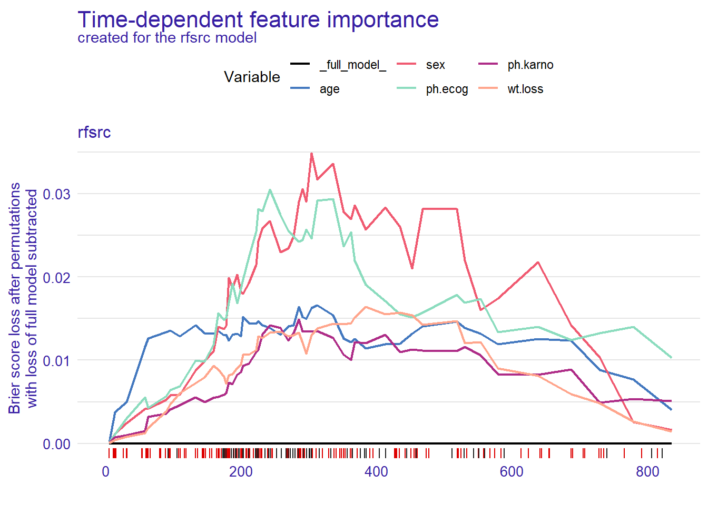
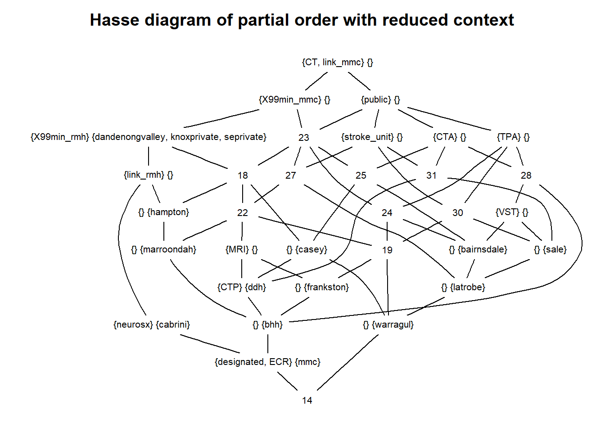

Chapter 6 Machine learning
A key aspect of machine learning is cross validation to evaluate the model. It repeatedly evaluate the model based on different subsets of the model and using different parameters to select the optimal parameters. The models are compared against subset of the data. The caret library is an excellent tool for performing model selection.
6.1 Decision tree analysis
Decision tree method generates a logical flow diagram that resembles a tree. This triangulated diagram, with repeated partitioning of the original data into smaller groups (nodes) on a yes or no basis, resembles clinical reasoning. By way of contrast, regression methods generate significant predictors but it’s not clear how those predictors enter the sequential nature of clinical reasoning. Regression models assume that all of the variables are required at once to formulate an accurate prediction. This would make some of the elements of any model from regression analysis superfluous.
There are several different approaches to performing decision tree analyses. The most famous method CART is implemented in R as rpart. The second approaches uses chi-square test to partition the tree, available from the party library. Decision tree may also reveal complex intreactions (relationship) among the predictors in a way that regression analyses do not easily reveal.
6.1.1 Information theory driven
The tree is grown using a “divide and conquer” strategy, with repeated partitioning of the original data into smaller groups (nodes) on a yes or no basis. The method uses a splitting rule built around the notion of “purity.” A node in the tree is defined as pure when all the elements belong to one class. When there is impurity in the node, a split occurs to maximize reduction in “impurity.” In some cases, the split may be biased toward attributes that contain many different ordinal levels or scales. Thus, the selection of an attribute as the root node may vary according to the splitting rule and the scaling of the attribute. The decision tree package rpart does tolerate certain degree of missing number because the data are split using the available data for that attribute to calculate the Gini index (rather than the entire cohort). One major advantage of rpart is the presentation of the classification rules in the easily interpretable form of a tree. The hierarchical nature of the decision tree is similar to many decision processes (Phan et al. 2018).
## Loading required package: tibble## Loading required package: bitops## Rattle: A free graphical interface for data science with R.
## Version 5.4.0 Copyright (c) 2006-2020 Togaware Pty Ltd.
## Type 'rattle()' to shake, rattle, and roll your data.## [1] "Age" "Smear" "Infil" "Index" "Blasts" "Temp" "Resp" "Time"
## [9] "Status"#decision tree model for AML treatment
treLeukemia<-rpart(Status~., data=Leukemia)
fancyRpartPlot(treLeukemia)
6.1.2 Conditional decision tree
The conditional decision tree approach has been proposed to be superior to CART method because that method uses information criterion for partitioning and which can lead to overfitting.The scenario of overfitting describes model which works well on training data but less so with new data.The conditional approach by party is less prone to overfitting as it includes significance testing (Phan et al. 2019).
## Loading required package: grid## Loading required package: mvtnorm## Loading required package: modeltools## Loading required package: stats4## Loading required package: strucchange## Loading required package: zoo##
## Attaching package: 'zoo'## The following objects are masked from 'package:base':
##
## as.Date, as.Date.numeric## Loading required package: sandwich## [1] "gos6" "outcome" "gender" "age" "wfns" "s100b" "ndka"6.1.3 criticisms of decision tree
Overfitting and prone to chosing variable with many levels are some disadvantage of decision tree. Decision tree do not handle collinearity issues well and the related method of random forest is proposed below.
6.2 Random Forest
Both gradient boost machine and random forest are examples of tree-based method with the former based on boosting of the residuals of the model and the latter based on bagging with random selection (rows and columns) of multiple subsets of the data. As such random forest regression ensembles the model from multiple decision trees. The trees are created by obtaining multiple subset of the data (random selection of data by rows and columns). Decision tree comes at certain disadvantage such as overfitting. Random forest avoids the problems of single decision tree analyses by aggregating the results of multiple trees obtained by performing analysis on random subsets of the original data. This method is different from the bootstrapping procedure that can be used in decision tree which may not change the data structure; hence the trees can look very similar. Random forest is available as randomForest or ranger or via caret.
A major drawback to random forest is that the hierarchical nature of the trees is lost. As such this method is seen as a black box tool and is less commonly embraced in the medical literature. One way us to use an interpretable machine learning tool iml (Molnar, Bischl, and Casalicchio 2018) (Shapley values) tool to aid interpretation of the model. This method uses ideas from coalition game theory to fairly distribute the contribution of the coalition of covariates to the random forest model.
The machine learning models are tuned using caret library.
## Loading required package: lattice## Loading required package: ggplot2data("BreastCancer",package = "mlbench")
#The Breast Cancer data contains NA as well as factors
#note Class is benign or malignant of class factor
#column Bare.nuclei removed due to NA
BreastCancer<-BreastCancer[,-c(1,7)]
#split data using caTools.
#The next example will use createDataPartition from caret
set.seed(123)
split = caTools::sample.split(BreastCancer$Class, SplitRatio = 0.75)
Train = subset(BreastCancer, split == TRUE)
Test = subset(BreastCancer, split == FALSE)
# specify that resampling method is
rf_control <- trainControl(## 10-fold CV
method = "cv",
number = 10)
#scaling data is performed here under preProcess
#note that ranger handles the outcome variable as factor
rf <- caret::train(Class ~ .,
data = Train,
method = "ranger",
trControl=rf_control,
preProcess = c("center", "scale"),
tuneLength = 10, verbose=F)
summary(rf)## Length Class Mode
## predictions 525 factor numeric
## num.trees 1 -none- numeric
## num.independent.variables 1 -none- numeric
## mtry 1 -none- numeric
## min.node.size 1 -none- numeric
## prediction.error 1 -none- numeric
## forest 9 ranger.forest list
## confusion.matrix 4 table numeric
## splitrule 1 -none- character
## num.random.splits 1 -none- numeric
## treetype 1 -none- character
## call 9 -none- call
## importance.mode 1 -none- character
## num.samples 1 -none- numeric
## replace 1 -none- logical
## xNames 71 -none- character
## problemType 1 -none- character
## tuneValue 3 data.frame list
## obsLevels 2 -none- character
## param 1 -none- list## Confusion Matrix and Statistics
##
## Reference
## Prediction benign malignant
## benign 455 6
## malignant 3 235
##
## Accuracy : 0.9871
## 95% CI : (0.9757, 0.9941)
## No Information Rate : 0.6552
## P-Value [Acc > NIR] : <2e-16
##
## Kappa : 0.9714
##
## Mcnemar's Test P-Value : 0.505
##
## Sensitivity : 0.9934
## Specificity : 0.9751
## Pos Pred Value : 0.9870
## Neg Pred Value : 0.9874
## Prevalence : 0.6552
## Detection Rate : 0.6509
## Detection Prevalence : 0.6595
## Balanced Accuracy : 0.9843
##
## 'Positive' Class : benign
## ## Setting levels: control = benign, case = malignant## Setting direction: controls < cases##
## Call:
## roc.default(response = BreastCancer$Class, predictor = as.numeric(pred_rf))
##
## Data: as.numeric(pred_rf) in 458 controls (BreastCancer$Class benign) < 241 cases (BreastCancer$Class malignant).
## Area under the curve: 0.98436.2.1 Random survival forest
Random survival forest example is provided below using rfsrc library. The survex library is used for explanation on the model.
##
## Attaching package: 'survival'## The following object is masked from 'package:caret':
##
## cluster## Loading required package: ggpubr##
## randomForestSRC 2.9.3
##
## Type rfsrc.news() to see new features, changes, and bug fixes.
## ##
## Attaching package: 'dplyr'## The following object is masked from 'package:survex':
##
## explain## The following objects are masked from 'package:stats':
##
## filter, lag## The following objects are masked from 'package:base':
##
## intersect, setdiff, setequal, union#data from survival package on NCCTG lung cancer trial
#https://stat.ethz.ch/R-manual/R-devel/library/survival/html/lung.html
data(cancer, package="survival")
#time in days
#status censored=1, dead=2
#sex:Male=1 Female=2
cancer2<- cancer %>% mutate(
status=ifelse(status==1,0,1)) %>%
rename(Dead=status, Days=time)
time=cancer2$Days
status=cancer2$Dead
RF<- rfsrc(Surv(Days, Dead) ~ age+sex+ph.ecog+ph.karno+wt.loss, data = cancer2)
#specify library to avoid confusion with dplyr
explainer<-survex::explain(RF)## Preparation of a new explainer is initiated
## -> model label : rfsrc ( [33m default [39m )
## -> data : 213 rows 5 cols ( extracted from the model )
## -> target variable : 213 values ( 151 events and 62 censored , censoring rate = 0.291 ) ( extracted from the model )
## -> times : 50 unique time points , min = 5 , mean = 304.1224 , median = 263.16 , max = 835.44
## -> times : ( generated from y as 50 time points being consecutive quantiles (0.00, 0.02, ..., 0.98) )
## -> predict function : sum over the predict_cumulative_hazard_function will be used ( [33m default [39m )
## -> predict survival function : stepfun based on predict.rfsrc()$survival will be used ( [33m default [39m )
## -> predict cumulative hazard function : stepfun based on predict.rfsrc()$chf will be used ( [33m default [39m )
## -> model_info : package randomForestSRC , ver. 2.9.3 , task survival ( [33m default [39m )
## A new explainer has been created!Dynamic AUC
y <- explainer$y
times <- explainer$times
surv <- explainer$predict_survival_function(RF, explainer$data, times)
cd_auc(y, surv = surv, times = times)## [1] 1.0000000 0.9299517 0.9133987 0.9150000 0.8784514 0.8738696 0.8492632
## [8] 0.8469945 0.8443018 0.8200707 0.8181943 0.8126263 0.7827403 0.7585305
## [15] 0.7703840 0.7680369 0.7674442 0.7616438 0.7524828 0.7506547 0.7638787
## [22] 0.7612142 0.7654211 0.7581189 0.7332627 0.7094356 0.7019078 0.7102041
## [29] 0.7105310 0.7056007 0.7075489 0.7109053 0.6989114 0.6901174 0.6906694
## [36] 0.7026007 0.6867102 0.6900591 0.7003147 0.7009741 0.7261286 0.7376953
## [43] 0.7469602 0.7449909 0.7498972 0.7805807 0.8130252 0.8342308 0.8758170
## [50] 0.9000000Plot variable importance for random survival forest using permutation of features and measure impact on Brier score.

Plot partial dependence

6.3 Gradient Boost Machine
Gradient boost machine is available as gradient boost machine_gbm.
#the breast cancer data from random forest is used here
# specify that the resampling method is
gbm_control <- trainControl(## 10-fold CV
method = "repeatedcv",
number = 10)
#scaling data is performed here under preProcess
#note that ranger handles the outcome variable as factor
gbm <- caret::train(Class ~ .,
data = Train,
method = "gbm",
trControl=gbm_control,
preProcess = c("center", "scale"),
tuneLength = 10)## Iter TrainDeviance ValidDeviance StepSize Improve
## 1 1.1522 nan 0.1000 0.0657
## 2 1.0452 nan 0.1000 0.0520
## 3 0.9465 nan 0.1000 0.0486
## 4 0.8699 nan 0.1000 0.0376
## 5 0.8031 nan 0.1000 0.0314
## 6 0.7480 nan 0.1000 0.0279
## 7 0.6949 nan 0.1000 0.0264
## 8 0.6500 nan 0.1000 0.0206
## 9 0.6110 nan 0.1000 0.0178
## 10 0.5772 nan 0.1000 0.0173
## 20 0.3674 nan 0.1000 0.0043
## 40 0.2291 nan 0.1000 -0.0004
## 60 0.1753 nan 0.1000 -0.0003
## 80 0.1502 nan 0.1000 -0.0001
## 100 0.1353 nan 0.1000 0.0000
## 120 0.1218 nan 0.1000 -0.0004
## 140 0.1114 nan 0.1000 0.0001
## 160 0.1033 nan 0.1000 -0.0006
## 180 0.1008 nan 0.1000 -0.0001
## 200 0.0958 nan 0.1000 -0.0012
## 220 0.0935 nan 0.1000 -0.0008
## 240 0.0880 nan 0.1000 0.0000
## 260 0.0851 nan 0.1000 -0.0002
## 280 0.0826 nan 0.1000 0.0002
## 300 0.0787 nan 0.1000 -0.0007
## 320 0.0760 nan 0.1000 -0.0002
## 340 0.0749 nan 0.1000 -0.0010
## 360 0.0730 nan 0.1000 -0.0008
## 380 0.0714 nan 0.1000 -0.0005
## 400 0.0707 nan 0.1000 -0.0011
## 420 0.0684 nan 0.1000 -0.0007
## 440 0.0677 nan 0.1000 -0.0006
## 460 0.0654 nan 0.1000 -0.0005
## 480 0.0642 nan 0.1000 -0.0004
## 500 0.0628 nan 0.1000 -0.0005
##
## Iter TrainDeviance ValidDeviance StepSize Improve
## 1 1.1503 nan 0.1000 0.0720
## 2 1.0312 nan 0.1000 0.0637
## 3 0.9344 nan 0.1000 0.0459
## 4 0.8459 nan 0.1000 0.0426
## 5 0.7714 nan 0.1000 0.0350
## 6 0.7103 nan 0.1000 0.0297
## 7 0.6549 nan 0.1000 0.0252
## 8 0.6086 nan 0.1000 0.0224
## 9 0.5655 nan 0.1000 0.0203
## 10 0.5309 nan 0.1000 0.0142
## 20 0.3039 nan 0.1000 0.0034
## 40 0.1670 nan 0.1000 0.0004
## 60 0.1252 nan 0.1000 -0.0008
## 80 0.1025 nan 0.1000 -0.0005
## 100 0.0838 nan 0.1000 -0.0005
## 120 0.0725 nan 0.1000 -0.0004
## 140 0.0648 nan 0.1000 -0.0007
## 160 0.0567 nan 0.1000 0.0002
## 180 0.0512 nan 0.1000 -0.0002
## 200 0.0447 nan 0.1000 -0.0003
## 220 0.0395 nan 0.1000 -0.0004
## 240 0.0348 nan 0.1000 -0.0002
## 260 0.0322 nan 0.1000 -0.0004
## 280 0.0291 nan 0.1000 -0.0003
## 300 0.0266 nan 0.1000 -0.0002
## 320 0.0238 nan 0.1000 -0.0001
## 340 0.0226 nan 0.1000 -0.0002
## 360 0.0205 nan 0.1000 -0.0002
## 380 0.0184 nan 0.1000 -0.0001
## 400 0.0172 nan 0.1000 -0.0002
## 420 0.0160 nan 0.1000 -0.0002
## 440 0.0143 nan 0.1000 -0.0001
## 460 0.0130 nan 0.1000 -0.0002
## 480 0.0116 nan 0.1000 -0.0001
## 500 0.0104 nan 0.1000 -0.0000
##
## Iter TrainDeviance ValidDeviance StepSize Improve
## 1 1.1391 nan 0.1000 0.0729
## 2 1.0123 nan 0.1000 0.0620
## 3 0.9073 nan 0.1000 0.0506
## 4 0.8186 nan 0.1000 0.0406
## 5 0.7505 nan 0.1000 0.0336
## 6 0.6854 nan 0.1000 0.0317
## 7 0.6319 nan 0.1000 0.0263
## 8 0.5862 nan 0.1000 0.0223
## 9 0.5435 nan 0.1000 0.0179
## 10 0.5077 nan 0.1000 0.0169
## 20 0.2713 nan 0.1000 0.0040
## 40 0.1418 nan 0.1000 -0.0008
## 60 0.0973 nan 0.1000 0.0001
## 80 0.0767 nan 0.1000 -0.0010
## 100 0.0585 nan 0.1000 -0.0004
## 120 0.0475 nan 0.1000 -0.0003
## 140 0.0378 nan 0.1000 -0.0001
## 160 0.0310 nan 0.1000 -0.0004
## 180 0.0259 nan 0.1000 -0.0004
## 200 0.0220 nan 0.1000 -0.0004
## 220 0.0181 nan 0.1000 -0.0002
## 240 0.0161 nan 0.1000 -0.0003
## 260 0.0134 nan 0.1000 -0.0002
## 280 0.0115 nan 0.1000 -0.0001
## 300 0.0099 nan 0.1000 -0.0001
## 320 0.0085 nan 0.1000 -0.0001
## 340 0.0074 nan 0.1000 -0.0001
## 360 0.0066 nan 0.1000 -0.0001
## 380 0.0055 nan 0.1000 -0.0000
## 400 0.0049 nan 0.1000 -0.0000
## 420 0.0043 nan 0.1000 -0.0000
## 440 0.0037 nan 0.1000 -0.0000
## 460 0.0031 nan 0.1000 -0.0000
## 480 0.0027 nan 0.1000 -0.0000
## 500 0.0024 nan 0.1000 -0.0000
##
## Iter TrainDeviance ValidDeviance StepSize Improve
## 1 1.1380 nan 0.1000 0.0745
## 2 1.0151 nan 0.1000 0.0609
## 3 0.9125 nan 0.1000 0.0492
## 4 0.8251 nan 0.1000 0.0397
## 5 0.7505 nan 0.1000 0.0346
## 6 0.6840 nan 0.1000 0.0316
## 7 0.6268 nan 0.1000 0.0280
## 8 0.5754 nan 0.1000 0.0247
## 9 0.5327 nan 0.1000 0.0171
## 10 0.4934 nan 0.1000 0.0172
## 20 0.2630 nan 0.1000 0.0059
## 40 0.1275 nan 0.1000 -0.0006
## 60 0.0786 nan 0.1000 -0.0010
## 80 0.0552 nan 0.1000 -0.0007
## 100 0.0392 nan 0.1000 -0.0004
## 120 0.0289 nan 0.1000 -0.0004
## 140 0.0223 nan 0.1000 -0.0002
## 160 0.0176 nan 0.1000 -0.0002
## 180 0.0141 nan 0.1000 -0.0001
## 200 0.0107 nan 0.1000 -0.0001
## 220 0.0087 nan 0.1000 -0.0001
## 240 0.0068 nan 0.1000 -0.0000
## 260 0.0054 nan 0.1000 -0.0000
## 280 0.0043 nan 0.1000 -0.0001
## 300 0.0033 nan 0.1000 -0.0000
## 320 0.0027 nan 0.1000 -0.0000
## 340 0.0020 nan 0.1000 -0.0000
## 360 0.0016 nan 0.1000 -0.0000
## 380 0.0013 nan 0.1000 -0.0000
## 400 0.0011 nan 0.1000 -0.0000
## 420 0.0009 nan 0.1000 -0.0000
## 440 0.0007 nan 0.1000 -0.0000
## 460 0.0006 nan 0.1000 -0.0000
## 480 0.0005 nan 0.1000 -0.0000
## 500 0.0004 nan 0.1000 -0.0000
##
## Iter TrainDeviance ValidDeviance StepSize Improve
## 1 1.1362 nan 0.1000 0.0781
## 2 1.0087 nan 0.1000 0.0624
## 3 0.8981 nan 0.1000 0.0531
## 4 0.8110 nan 0.1000 0.0422
## 5 0.7379 nan 0.1000 0.0332
## 6 0.6761 nan 0.1000 0.0292
## 7 0.6210 nan 0.1000 0.0253
## 8 0.5673 nan 0.1000 0.0240
## 9 0.5235 nan 0.1000 0.0211
## 10 0.4845 nan 0.1000 0.0180
## 20 0.2600 nan 0.1000 0.0042
## 40 0.1179 nan 0.1000 -0.0014
## 60 0.0721 nan 0.1000 -0.0015
## 80 0.0471 nan 0.1000 -0.0003
## 100 0.0323 nan 0.1000 -0.0004
## 120 0.0232 nan 0.1000 -0.0002
## 140 0.0173 nan 0.1000 -0.0002
## 160 0.0127 nan 0.1000 -0.0002
## 180 0.0093 nan 0.1000 -0.0000
## 200 0.0066 nan 0.1000 -0.0001
## 220 0.0055 nan 0.1000 -0.0001
## 240 0.0039 nan 0.1000 0.0000
## 260 0.0030 nan 0.1000 -0.0000
## 280 0.0021 nan 0.1000 -0.0000
## 300 0.0017 nan 0.1000 -0.0000
## 320 0.0014 nan 0.1000 -0.0000
## 340 0.0011 nan 0.1000 -0.0000
## 360 0.0008 nan 0.1000 -0.0000
## 380 0.0006 nan 0.1000 -0.0000
## 400 0.0005 nan 0.1000 -0.0000
## 420 0.0004 nan 0.1000 -0.0000
## 440 0.0003 nan 0.1000 -0.0000
## 460 0.0002 nan 0.1000 -0.0000
## 480 0.0002 nan 0.1000 -0.0000
## 500 0.0001 nan 0.1000 -0.0000
##
## Iter TrainDeviance ValidDeviance StepSize Improve
## 1 1.1368 nan 0.1000 0.0740
## 2 1.0143 nan 0.1000 0.0581
## 3 0.9146 nan 0.1000 0.0474
## 4 0.8273 nan 0.1000 0.0431
## 5 0.7535 nan 0.1000 0.0343
## 6 0.6904 nan 0.1000 0.0313
## 7 0.6320 nan 0.1000 0.0263
## 8 0.5784 nan 0.1000 0.0246
## 9 0.5362 nan 0.1000 0.0180
## 10 0.4980 nan 0.1000 0.0148
## 20 0.2605 nan 0.1000 0.0038
## 40 0.1074 nan 0.1000 -0.0018
## 60 0.0587 nan 0.1000 -0.0010
## 80 0.0384 nan 0.1000 -0.0004
## 100 0.0248 nan 0.1000 -0.0005
## 120 0.0176 nan 0.1000 -0.0004
## 140 0.0124 nan 0.1000 -0.0001
## 160 0.0085 nan 0.1000 -0.0001
## 180 0.0058 nan 0.1000 -0.0001
## 200 0.0042 nan 0.1000 -0.0000
## 220 0.0030 nan 0.1000 -0.0000
## 240 0.0023 nan 0.1000 -0.0000
## 260 0.0017 nan 0.1000 -0.0001
## 280 0.0012 nan 0.1000 -0.0000
## 300 0.0009 nan 0.1000 -0.0000
## 320 0.0007 nan 0.1000 -0.0000
## 340 0.0006 nan 0.1000 -0.0000
## 360 0.0004 nan 0.1000 -0.0000
## 380 0.0003 nan 0.1000 0.0000
## 400 0.0002 nan 0.1000 -0.0000
## 420 0.0002 nan 0.1000 -0.0000
## 440 0.0001 nan 0.1000 -0.0000
## 460 0.0001 nan 0.1000 -0.0000
## 480 0.0001 nan 0.1000 -0.0000
## 500 0.0001 nan 0.1000 -0.0000
##
## Iter TrainDeviance ValidDeviance StepSize Improve
## 1 1.1362 nan 0.1000 0.0753
## 2 1.0097 nan 0.1000 0.0619
## 3 0.9048 nan 0.1000 0.0515
## 4 0.8158 nan 0.1000 0.0413
## 5 0.7373 nan 0.1000 0.0372
## 6 0.6690 nan 0.1000 0.0321
## 7 0.6114 nan 0.1000 0.0272
## 8 0.5631 nan 0.1000 0.0221
## 9 0.5219 nan 0.1000 0.0174
## 10 0.4847 nan 0.1000 0.0164
## 20 0.2624 nan 0.1000 0.0046
## 40 0.1023 nan 0.1000 -0.0003
## 60 0.0598 nan 0.1000 -0.0010
## 80 0.0373 nan 0.1000 -0.0007
## 100 0.0229 nan 0.1000 -0.0002
## 120 0.0161 nan 0.1000 -0.0003
## 140 0.0118 nan 0.1000 -0.0004
## 160 0.0087 nan 0.1000 -0.0001
## 180 0.0060 nan 0.1000 0.0000
## 200 0.0044 nan 0.1000 -0.0001
## 220 0.0031 nan 0.1000 -0.0001
## 240 0.0021 nan 0.1000 -0.0000
## 260 0.0016 nan 0.1000 -0.0000
## 280 0.0010 nan 0.1000 -0.0000
## 300 0.0007 nan 0.1000 -0.0000
## 320 0.0005 nan 0.1000 -0.0000
## 340 0.0004 nan 0.1000 -0.0000
## 360 0.0003 nan 0.1000 -0.0000
## 380 0.0002 nan 0.1000 -0.0000
## 400 0.0001 nan 0.1000 -0.0000
## 420 0.0001 nan 0.1000 -0.0000
## 440 0.0001 nan 0.1000 -0.0000
## 460 0.0001 nan 0.1000 0.0000
## 480 0.0000 nan 0.1000 -0.0000
## 500 0.0000 nan 0.1000 -0.0000
##
## Iter TrainDeviance ValidDeviance StepSize Improve
## 1 1.1338 nan 0.1000 0.0751
## 2 1.0053 nan 0.1000 0.0580
## 3 0.9014 nan 0.1000 0.0491
## 4 0.8204 nan 0.1000 0.0394
## 5 0.7435 nan 0.1000 0.0356
## 6 0.6761 nan 0.1000 0.0314
## 7 0.6180 nan 0.1000 0.0278
## 8 0.5678 nan 0.1000 0.0228
## 9 0.5224 nan 0.1000 0.0205
## 10 0.4835 nan 0.1000 0.0182
## 20 0.2562 nan 0.1000 0.0039
## 40 0.1050 nan 0.1000 0.0002
## 60 0.0602 nan 0.1000 0.0000
## 80 0.0363 nan 0.1000 -0.0009
## 100 0.0215 nan 0.1000 -0.0003
## 120 0.0152 nan 0.1000 -0.0001
## 140 0.0097 nan 0.1000 -0.0000
## 160 0.0069 nan 0.1000 -0.0001
## 180 0.0050 nan 0.1000 -0.0001
## 200 0.0036 nan 0.1000 -0.0001
## 220 0.0023 nan 0.1000 0.0000
## 240 0.0015 nan 0.1000 -0.0000
## 260 0.0011 nan 0.1000 -0.0000
## 280 0.0008 nan 0.1000 -0.0000
## 300 0.0006 nan 0.1000 -0.0000
## 320 0.0005 nan 0.1000 -0.0000
## 340 0.0003 nan 0.1000 -0.0000
## 360 0.0003 nan 0.1000 -0.0000
## 380 0.0002 nan 0.1000 -0.0000
## 400 0.0001 nan 0.1000 -0.0000
## 420 0.0001 nan 0.1000 -0.0000
## 440 0.0001 nan 0.1000 -0.0000
## 460 0.0001 nan 0.1000 -0.0000
## 480 0.0000 nan 0.1000 -0.0000
## 500 0.0000 nan 0.1000 -0.0000
##
## Iter TrainDeviance ValidDeviance StepSize Improve
## 1 1.1314 nan 0.1000 0.0719
## 2 1.0135 nan 0.1000 0.0594
## 3 0.9168 nan 0.1000 0.0447
## 4 0.8288 nan 0.1000 0.0413
## 5 0.7542 nan 0.1000 0.0375
## 6 0.6882 nan 0.1000 0.0303
## 7 0.6293 nan 0.1000 0.0268
## 8 0.5776 nan 0.1000 0.0238
## 9 0.5313 nan 0.1000 0.0200
## 10 0.4949 nan 0.1000 0.0154
## 20 0.2559 nan 0.1000 0.0031
## 40 0.1015 nan 0.1000 0.0014
## 60 0.0533 nan 0.1000 -0.0001
## 80 0.0317 nan 0.1000 -0.0004
## 100 0.0221 nan 0.1000 -0.0003
## 120 0.0147 nan 0.1000 -0.0002
## 140 0.0097 nan 0.1000 -0.0003
## 160 0.0073 nan 0.1000 -0.0002
## 180 0.0055 nan 0.1000 -0.0002
## 200 0.0034 nan 0.1000 -0.0001
## 220 0.0020 nan 0.1000 0.0000
## 240 0.0016 nan 0.1000 -0.0000
## 260 0.0012 nan 0.1000 -0.0000
## 280 0.0009 nan 0.1000 0.0000
## 300 0.0007 nan 0.1000 0.0000
## 320 0.0006 nan 0.1000 -0.0000
## 340 0.0004 nan 0.1000 0.0000
## 360 0.0003 nan 0.1000 -0.0000
## 380 0.0002 nan 0.1000 -0.0000
## 400 0.0001 nan 0.1000 0.0000
## 420 0.0001 nan 0.1000 -0.0000
## 440 0.0001 nan 0.1000 -0.0000
## 460 0.0001 nan 0.1000 -0.0000
## 480 0.0001 nan 0.1000 -0.0000
## 500 0.0001 nan 0.1000 -0.0000
##
## Iter TrainDeviance ValidDeviance StepSize Improve
## 1 1.1379 nan 0.1000 0.0704
## 2 1.0121 nan 0.1000 0.0599
## 3 0.9038 nan 0.1000 0.0500
## 4 0.8195 nan 0.1000 0.0422
## 5 0.7441 nan 0.1000 0.0339
## 6 0.6852 nan 0.1000 0.0265
## 7 0.6269 nan 0.1000 0.0281
## 8 0.5777 nan 0.1000 0.0202
## 9 0.5340 nan 0.1000 0.0205
## 10 0.4959 nan 0.1000 0.0166
## 20 0.2599 nan 0.1000 0.0053
## 40 0.1110 nan 0.1000 0.0003
## 60 0.0573 nan 0.1000 -0.0006
## 80 0.0356 nan 0.1000 -0.0004
## 100 0.0251 nan 0.1000 -0.0002
## 120 0.0181 nan 0.1000 0.0001
## 140 0.0134 nan 0.1000 -0.0005
## 160 0.0101 nan 0.1000 -0.0003
## 180 0.0075 nan 0.1000 -0.0001
## 200 0.0052 nan 0.1000 -0.0000
## 220 0.0039 nan 0.1000 -0.0001
## 240 0.0031 nan 0.1000 -0.0001
## 260 0.0023 nan 0.1000 -0.0000
## 280 0.0017 nan 0.1000 -0.0000
## 300 0.0013 nan 0.1000 -0.0000
## 320 0.0011 nan 0.1000 -0.0000
## 340 0.0008 nan 0.1000 -0.0000
## 360 0.0006 nan 0.1000 -0.0000
## 380 0.0005 nan 0.1000 -0.0000
## 400 0.0004 nan 0.1000 -0.0000
## 420 0.0003 nan 0.1000 -0.0000
## 440 0.0003 nan 0.1000 -0.0000
## 460 0.0002 nan 0.1000 -0.0000
## 480 0.0001 nan 0.1000 -0.0000
## 500 0.0001 nan 0.1000 -0.0000
##
## Iter TrainDeviance ValidDeviance StepSize Improve
## 1 1.1483 nan 0.1000 0.0660
## 2 1.0427 nan 0.1000 0.0513
## 3 0.9512 nan 0.1000 0.0461
## 4 0.8777 nan 0.1000 0.0373
## 5 0.8136 nan 0.1000 0.0320
## 6 0.7544 nan 0.1000 0.0285
## 7 0.7039 nan 0.1000 0.0226
## 8 0.6653 nan 0.1000 0.0171
## 9 0.6268 nan 0.1000 0.0173
## 10 0.5916 nan 0.1000 0.0158
## 20 0.3881 nan 0.1000 0.0057
## 40 0.2439 nan 0.1000 0.0008
## 60 0.2027 nan 0.1000 0.0009
## 80 0.1778 nan 0.1000 -0.0006
## 100 0.1659 nan 0.1000 -0.0008
## 120 0.1523 nan 0.1000 -0.0007
## 140 0.1446 nan 0.1000 -0.0007
## 160 0.1382 nan 0.1000 -0.0007
## 180 0.1328 nan 0.1000 -0.0003
## 200 0.1293 nan 0.1000 -0.0005
## 220 0.1271 nan 0.1000 -0.0018
## 240 0.1199 nan 0.1000 -0.0008
## 260 0.1169 nan 0.1000 -0.0011
## 280 0.1139 nan 0.1000 -0.0004
## 300 0.1080 nan 0.1000 -0.0009
## 320 0.1057 nan 0.1000 -0.0008
## 340 0.1019 nan 0.1000 -0.0007
## 360 0.1016 nan 0.1000 -0.0016
## 380 0.1010 nan 0.1000 -0.0008
## 400 0.1002 nan 0.1000 -0.0004
## 420 0.0992 nan 0.1000 -0.0008
## 440 0.0970 nan 0.1000 -0.0008
## 460 0.0962 nan 0.1000 -0.0005
## 480 0.0945 nan 0.1000 -0.0004
## 500 0.0939 nan 0.1000 -0.0006
##
## Iter TrainDeviance ValidDeviance StepSize Improve
## 1 1.1342 nan 0.1000 0.0714
## 2 1.0162 nan 0.1000 0.0592
## 3 0.9188 nan 0.1000 0.0460
## 4 0.8413 nan 0.1000 0.0370
## 5 0.7696 nan 0.1000 0.0350
## 6 0.7082 nan 0.1000 0.0279
## 7 0.6599 nan 0.1000 0.0223
## 8 0.6125 nan 0.1000 0.0225
## 9 0.5724 nan 0.1000 0.0190
## 10 0.5350 nan 0.1000 0.0153
## 20 0.3143 nan 0.1000 0.0055
## 40 0.1901 nan 0.1000 -0.0010
## 60 0.1475 nan 0.1000 -0.0014
## 80 0.1207 nan 0.1000 -0.0000
## 100 0.1060 nan 0.1000 -0.0002
## 120 0.0948 nan 0.1000 -0.0009
## 140 0.0815 nan 0.1000 -0.0002
## 160 0.0722 nan 0.1000 -0.0007
## 180 0.0657 nan 0.1000 -0.0007
## 200 0.0592 nan 0.1000 -0.0004
## 220 0.0539 nan 0.1000 -0.0001
## 240 0.0483 nan 0.1000 -0.0002
## 260 0.0445 nan 0.1000 -0.0004
## 280 0.0395 nan 0.1000 -0.0002
## 300 0.0365 nan 0.1000 -0.0004
## 320 0.0336 nan 0.1000 -0.0002
## 340 0.0315 nan 0.1000 -0.0003
## 360 0.0283 nan 0.1000 -0.0001
## 380 0.0258 nan 0.1000 -0.0003
## 400 0.0244 nan 0.1000 -0.0002
## 420 0.0224 nan 0.1000 -0.0001
## 440 0.0208 nan 0.1000 -0.0001
## 460 0.0192 nan 0.1000 -0.0003
## 480 0.0179 nan 0.1000 -0.0002
## 500 0.0161 nan 0.1000 -0.0001
##
## Iter TrainDeviance ValidDeviance StepSize Improve
## 1 1.1377 nan 0.1000 0.0749
## 2 1.0149 nan 0.1000 0.0601
## 3 0.9142 nan 0.1000 0.0466
## 4 0.8282 nan 0.1000 0.0361
## 5 0.7581 nan 0.1000 0.0347
## 6 0.6939 nan 0.1000 0.0311
## 7 0.6386 nan 0.1000 0.0259
## 8 0.5934 nan 0.1000 0.0225
## 9 0.5536 nan 0.1000 0.0170
## 10 0.5165 nan 0.1000 0.0174
## 20 0.2941 nan 0.1000 0.0048
## 40 0.1628 nan 0.1000 -0.0013
## 60 0.1102 nan 0.1000 0.0010
## 80 0.0862 nan 0.1000 -0.0005
## 100 0.0690 nan 0.1000 -0.0007
## 120 0.0574 nan 0.1000 -0.0007
## 140 0.0469 nan 0.1000 -0.0004
## 160 0.0405 nan 0.1000 -0.0004
## 180 0.0331 nan 0.1000 -0.0001
## 200 0.0277 nan 0.1000 -0.0005
## 220 0.0223 nan 0.1000 -0.0001
## 240 0.0193 nan 0.1000 -0.0001
## 260 0.0168 nan 0.1000 -0.0001
## 280 0.0143 nan 0.1000 -0.0001
## 300 0.0119 nan 0.1000 -0.0001
## 320 0.0106 nan 0.1000 -0.0001
## 340 0.0089 nan 0.1000 -0.0001
## 360 0.0081 nan 0.1000 -0.0001
## 380 0.0069 nan 0.1000 -0.0001
## 400 0.0060 nan 0.1000 -0.0001
## 420 0.0051 nan 0.1000 0.0000
## 440 0.0043 nan 0.1000 -0.0000
## 460 0.0038 nan 0.1000 -0.0000
## 480 0.0033 nan 0.1000 -0.0000
## 500 0.0029 nan 0.1000 -0.0000
##
## Iter TrainDeviance ValidDeviance StepSize Improve
## 1 1.1268 nan 0.1000 0.0769
## 2 1.0068 nan 0.1000 0.0570
## 3 0.9047 nan 0.1000 0.0476
## 4 0.8184 nan 0.1000 0.0406
## 5 0.7421 nan 0.1000 0.0367
## 6 0.6809 nan 0.1000 0.0277
## 7 0.6272 nan 0.1000 0.0232
## 8 0.5772 nan 0.1000 0.0221
## 9 0.5371 nan 0.1000 0.0174
## 10 0.5009 nan 0.1000 0.0172
## 20 0.2771 nan 0.1000 0.0049
## 40 0.1423 nan 0.1000 0.0011
## 60 0.0903 nan 0.1000 0.0003
## 80 0.0657 nan 0.1000 -0.0002
## 100 0.0507 nan 0.1000 -0.0007
## 120 0.0402 nan 0.1000 -0.0009
## 140 0.0309 nan 0.1000 -0.0001
## 160 0.0246 nan 0.1000 -0.0000
## 180 0.0200 nan 0.1000 -0.0004
## 200 0.0154 nan 0.1000 -0.0001
## 220 0.0129 nan 0.1000 -0.0002
## 240 0.0104 nan 0.1000 -0.0000
## 260 0.0088 nan 0.1000 -0.0001
## 280 0.0069 nan 0.1000 -0.0000
## 300 0.0056 nan 0.1000 -0.0001
## 320 0.0046 nan 0.1000 -0.0001
## 340 0.0037 nan 0.1000 0.0000
## 360 0.0030 nan 0.1000 -0.0000
## 380 0.0025 nan 0.1000 -0.0000
## 400 0.0020 nan 0.1000 -0.0000
## 420 0.0016 nan 0.1000 -0.0000
## 440 0.0013 nan 0.1000 -0.0000
## 460 0.0011 nan 0.1000 -0.0000
## 480 0.0009 nan 0.1000 -0.0000
## 500 0.0008 nan 0.1000 -0.0000
##
## Iter TrainDeviance ValidDeviance StepSize Improve
## 1 1.1352 nan 0.1000 0.0716
## 2 1.0122 nan 0.1000 0.0583
## 3 0.9094 nan 0.1000 0.0471
## 4 0.8230 nan 0.1000 0.0373
## 5 0.7545 nan 0.1000 0.0325
## 6 0.6911 nan 0.1000 0.0294
## 7 0.6314 nan 0.1000 0.0254
## 8 0.5820 nan 0.1000 0.0214
## 9 0.5415 nan 0.1000 0.0186
## 10 0.5072 nan 0.1000 0.0140
## 20 0.2781 nan 0.1000 0.0048
## 40 0.1322 nan 0.1000 0.0001
## 60 0.0830 nan 0.1000 -0.0007
## 80 0.0559 nan 0.1000 -0.0006
## 100 0.0416 nan 0.1000 -0.0007
## 120 0.0303 nan 0.1000 -0.0005
## 140 0.0225 nan 0.1000 -0.0004
## 160 0.0166 nan 0.1000 -0.0001
## 180 0.0126 nan 0.1000 -0.0003
## 200 0.0099 nan 0.1000 -0.0002
## 220 0.0073 nan 0.1000 -0.0001
## 240 0.0053 nan 0.1000 -0.0000
## 260 0.0042 nan 0.1000 -0.0001
## 280 0.0034 nan 0.1000 -0.0000
## 300 0.0026 nan 0.1000 -0.0000
## 320 0.0020 nan 0.1000 -0.0000
## 340 0.0015 nan 0.1000 -0.0000
## 360 0.0012 nan 0.1000 -0.0000
## 380 0.0010 nan 0.1000 -0.0000
## 400 0.0008 nan 0.1000 -0.0000
## 420 0.0006 nan 0.1000 -0.0000
## 440 0.0005 nan 0.1000 -0.0000
## 460 0.0004 nan 0.1000 -0.0000
## 480 0.0003 nan 0.1000 -0.0000
## 500 0.0002 nan 0.1000 -0.0000
##
## Iter TrainDeviance ValidDeviance StepSize Improve
## 1 1.1333 nan 0.1000 0.0751
## 2 1.0097 nan 0.1000 0.0589
## 3 0.9126 nan 0.1000 0.0451
## 4 0.8283 nan 0.1000 0.0422
## 5 0.7567 nan 0.1000 0.0343
## 6 0.6897 nan 0.1000 0.0305
## 7 0.6350 nan 0.1000 0.0244
## 8 0.5859 nan 0.1000 0.0235
## 9 0.5402 nan 0.1000 0.0228
## 10 0.5023 nan 0.1000 0.0156
## 20 0.2756 nan 0.1000 0.0047
## 40 0.1234 nan 0.1000 0.0005
## 60 0.0692 nan 0.1000 0.0001
## 80 0.0460 nan 0.1000 -0.0007
## 100 0.0345 nan 0.1000 -0.0001
## 120 0.0264 nan 0.1000 -0.0005
## 140 0.0186 nan 0.1000 -0.0004
## 160 0.0130 nan 0.1000 -0.0002
## 180 0.0097 nan 0.1000 -0.0001
## 200 0.0073 nan 0.1000 -0.0001
## 220 0.0057 nan 0.1000 -0.0001
## 240 0.0041 nan 0.1000 -0.0001
## 260 0.0030 nan 0.1000 -0.0000
## 280 0.0024 nan 0.1000 -0.0000
## 300 0.0018 nan 0.1000 -0.0000
## 320 0.0013 nan 0.1000 -0.0000
## 340 0.0009 nan 0.1000 -0.0000
## 360 0.0006 nan 0.1000 0.0000
## 380 0.0004 nan 0.1000 -0.0000
## 400 0.0003 nan 0.1000 -0.0000
## 420 0.0003 nan 0.1000 -0.0000
## 440 0.0002 nan 0.1000 -0.0000
## 460 0.0002 nan 0.1000 -0.0000
## 480 0.0001 nan 0.1000 -0.0000
## 500 0.0001 nan 0.1000 0.0000
##
## Iter TrainDeviance ValidDeviance StepSize Improve
## 1 1.1362 nan 0.1000 0.0723
## 2 1.0098 nan 0.1000 0.0587
## 3 0.9041 nan 0.1000 0.0466
## 4 0.8182 nan 0.1000 0.0382
## 5 0.7424 nan 0.1000 0.0329
## 6 0.6810 nan 0.1000 0.0280
## 7 0.6232 nan 0.1000 0.0262
## 8 0.5750 nan 0.1000 0.0234
## 9 0.5335 nan 0.1000 0.0178
## 10 0.4975 nan 0.1000 0.0150
## 20 0.2712 nan 0.1000 0.0043
## 40 0.1243 nan 0.1000 0.0002
## 60 0.0689 nan 0.1000 -0.0006
## 80 0.0453 nan 0.1000 -0.0001
## 100 0.0326 nan 0.1000 -0.0010
## 120 0.0233 nan 0.1000 -0.0002
## 140 0.0165 nan 0.1000 0.0001
## 160 0.0108 nan 0.1000 -0.0001
## 180 0.0082 nan 0.1000 -0.0001
## 200 0.0055 nan 0.1000 -0.0002
## 220 0.0045 nan 0.1000 -0.0001
## 240 0.0035 nan 0.1000 -0.0000
## 260 0.0025 nan 0.1000 -0.0000
## 280 0.0020 nan 0.1000 -0.0000
## 300 0.0014 nan 0.1000 -0.0000
## 320 0.0010 nan 0.1000 -0.0000
## 340 0.0007 nan 0.1000 -0.0000
## 360 0.0006 nan 0.1000 0.0000
## 380 0.0004 nan 0.1000 -0.0000
## 400 0.0003 nan 0.1000 -0.0000
## 420 0.0002 nan 0.1000 -0.0000
## 440 0.0002 nan 0.1000 -0.0000
## 460 0.0001 nan 0.1000 -0.0000
## 480 0.0001 nan 0.1000 -0.0000
## 500 0.0001 nan 0.1000 -0.0000
##
## Iter TrainDeviance ValidDeviance StepSize Improve
## 1 1.1344 nan 0.1000 0.0753
## 2 1.0097 nan 0.1000 0.0569
## 3 0.9104 nan 0.1000 0.0496
## 4 0.8270 nan 0.1000 0.0390
## 5 0.7474 nan 0.1000 0.0354
## 6 0.6879 nan 0.1000 0.0265
## 7 0.6305 nan 0.1000 0.0264
## 8 0.5832 nan 0.1000 0.0200
## 9 0.5407 nan 0.1000 0.0182
## 10 0.5000 nan 0.1000 0.0184
## 20 0.2737 nan 0.1000 0.0047
## 40 0.1187 nan 0.1000 -0.0003
## 60 0.0636 nan 0.1000 -0.0010
## 80 0.0411 nan 0.1000 -0.0014
## 100 0.0287 nan 0.1000 -0.0004
## 120 0.0183 nan 0.1000 -0.0001
## 140 0.0131 nan 0.1000 -0.0002
## 160 0.0087 nan 0.1000 -0.0001
## 180 0.0065 nan 0.1000 -0.0002
## 200 0.0047 nan 0.1000 -0.0002
## 220 0.0033 nan 0.1000 -0.0001
## 240 0.0025 nan 0.1000 -0.0000
## 260 0.0018 nan 0.1000 -0.0001
## 280 0.0013 nan 0.1000 -0.0000
## 300 0.0010 nan 0.1000 -0.0000
## 320 0.0008 nan 0.1000 -0.0000
## 340 0.0006 nan 0.1000 -0.0000
## 360 0.0004 nan 0.1000 -0.0000
## 380 0.0003 nan 0.1000 -0.0000
## 400 0.0002 nan 0.1000 -0.0000
## 420 0.0002 nan 0.1000 -0.0000
## 440 0.0002 nan 0.1000 -0.0000
## 460 0.0001 nan 0.1000 -0.0000
## 480 0.0001 nan 0.1000 0.0000
## 500 0.0001 nan 0.1000 0.0000
##
## Iter TrainDeviance ValidDeviance StepSize Improve
## 1 1.1384 nan 0.1000 0.0748
## 2 1.0172 nan 0.1000 0.0554
## 3 0.9119 nan 0.1000 0.0501
## 4 0.8252 nan 0.1000 0.0405
## 5 0.7552 nan 0.1000 0.0345
## 6 0.6944 nan 0.1000 0.0273
## 7 0.6340 nan 0.1000 0.0266
## 8 0.5883 nan 0.1000 0.0198
## 9 0.5441 nan 0.1000 0.0181
## 10 0.5037 nan 0.1000 0.0196
## 20 0.2750 nan 0.1000 0.0051
## 40 0.1137 nan 0.1000 -0.0003
## 60 0.0623 nan 0.1000 -0.0006
## 80 0.0393 nan 0.1000 -0.0004
## 100 0.0254 nan 0.1000 -0.0003
## 120 0.0166 nan 0.1000 -0.0002
## 140 0.0120 nan 0.1000 -0.0001
## 160 0.0088 nan 0.1000 -0.0001
## 180 0.0063 nan 0.1000 -0.0001
## 200 0.0050 nan 0.1000 0.0000
## 220 0.0039 nan 0.1000 -0.0001
## 240 0.0031 nan 0.1000 -0.0001
## 260 0.0026 nan 0.1000 -0.0001
## 280 0.0017 nan 0.1000 -0.0000
## 300 0.0012 nan 0.1000 -0.0000
## 320 0.0009 nan 0.1000 -0.0000
## 340 0.0007 nan 0.1000 -0.0000
## 360 0.0005 nan 0.1000 -0.0000
## 380 0.0004 nan 0.1000 -0.0000
## 400 0.0003 nan 0.1000 -0.0000
## 420 0.0003 nan 0.1000 -0.0000
## 440 0.0002 nan 0.1000 -0.0000
## 460 0.0001 nan 0.1000 -0.0000
## 480 0.0001 nan 0.1000 -0.0000
## 500 0.0001 nan 0.1000 -0.0000
##
## Iter TrainDeviance ValidDeviance StepSize Improve
## 1 1.1418 nan 0.1000 0.0772
## 2 1.0151 nan 0.1000 0.0588
## 3 0.9132 nan 0.1000 0.0535
## 4 0.8245 nan 0.1000 0.0420
## 5 0.7454 nan 0.1000 0.0350
## 6 0.6795 nan 0.1000 0.0312
## 7 0.6274 nan 0.1000 0.0251
## 8 0.5798 nan 0.1000 0.0201
## 9 0.5369 nan 0.1000 0.0193
## 10 0.5000 nan 0.1000 0.0148
## 20 0.2787 nan 0.1000 0.0050
## 40 0.1210 nan 0.1000 -0.0007
## 60 0.0626 nan 0.1000 -0.0007
## 80 0.0380 nan 0.1000 -0.0008
## 100 0.0244 nan 0.1000 -0.0003
## 120 0.0159 nan 0.1000 -0.0002
## 140 0.0103 nan 0.1000 -0.0000
## 160 0.0070 nan 0.1000 -0.0001
## 180 0.0052 nan 0.1000 -0.0000
## 200 0.0041 nan 0.1000 -0.0001
## 220 0.0031 nan 0.1000 -0.0000
## 240 0.0022 nan 0.1000 0.0000
## 260 0.0017 nan 0.1000 -0.0001
## 280 0.0014 nan 0.1000 -0.0000
## 300 0.0010 nan 0.1000 -0.0000
## 320 0.0006 nan 0.1000 -0.0000
## 340 0.0005 nan 0.1000 -0.0000
## 360 0.0004 nan 0.1000 -0.0000
## 380 0.0003 nan 0.1000 -0.0000
## 400 0.0002 nan 0.1000 0.0000
## 420 0.0002 nan 0.1000 -0.0000
## 440 0.0001 nan 0.1000 -0.0000
## 460 0.0001 nan 0.1000 -0.0000
## 480 0.0001 nan 0.1000 -0.0000
## 500 0.0001 nan 0.1000 0.0000
##
## Iter TrainDeviance ValidDeviance StepSize Improve
## 1 1.1613 nan 0.1000 0.0631
## 2 1.0553 nan 0.1000 0.0510
## 3 0.9610 nan 0.1000 0.0491
## 4 0.8846 nan 0.1000 0.0379
## 5 0.8118 nan 0.1000 0.0345
## 6 0.7602 nan 0.1000 0.0245
## 7 0.7073 nan 0.1000 0.0259
## 8 0.6631 nan 0.1000 0.0225
## 9 0.6241 nan 0.1000 0.0169
## 10 0.5903 nan 0.1000 0.0164
## 20 0.3839 nan 0.1000 0.0043
## 40 0.2482 nan 0.1000 0.0008
## 60 0.2035 nan 0.1000 -0.0009
## 80 0.1767 nan 0.1000 -0.0003
## 100 0.1626 nan 0.1000 0.0004
## 120 0.1486 nan 0.1000 -0.0009
## 140 0.1426 nan 0.1000 -0.0002
## 160 0.1389 nan 0.1000 -0.0010
## 180 0.1345 nan 0.1000 -0.0011
## 200 0.1262 nan 0.1000 -0.0007
## 220 0.1193 nan 0.1000 -0.0009
## 240 0.1166 nan 0.1000 -0.0002
## 260 0.1156 nan 0.1000 -0.0008
## 280 0.1151 nan 0.1000 -0.0015
## 300 0.1129 nan 0.1000 -0.0009
## 320 0.1111 nan 0.1000 -0.0013
## 340 0.1066 nan 0.1000 -0.0008
## 360 0.1035 nan 0.1000 -0.0016
## 380 0.1029 nan 0.1000 -0.0009
## 400 0.1000 nan 0.1000 -0.0002
## 420 0.0994 nan 0.1000 -0.0007
## 440 0.0972 nan 0.1000 -0.0006
## 460 0.0974 nan 0.1000 -0.0014
## 480 0.0961 nan 0.1000 -0.0011
## 500 0.0953 nan 0.1000 -0.0004
##
## Iter TrainDeviance ValidDeviance StepSize Improve
## 1 1.1341 nan 0.1000 0.0735
## 2 1.0147 nan 0.1000 0.0594
## 3 0.9153 nan 0.1000 0.0488
## 4 0.8325 nan 0.1000 0.0409
## 5 0.7605 nan 0.1000 0.0346
## 6 0.7002 nan 0.1000 0.0284
## 7 0.6507 nan 0.1000 0.0236
## 8 0.6035 nan 0.1000 0.0231
## 9 0.5618 nan 0.1000 0.0187
## 10 0.5259 nan 0.1000 0.0148
## 20 0.3162 nan 0.1000 0.0028
## 40 0.1852 nan 0.1000 -0.0000
## 60 0.1503 nan 0.1000 -0.0000
## 80 0.1293 nan 0.1000 -0.0012
## 100 0.1066 nan 0.1000 -0.0009
## 120 0.0926 nan 0.1000 -0.0010
## 140 0.0817 nan 0.1000 -0.0011
## 160 0.0728 nan 0.1000 -0.0009
## 180 0.0664 nan 0.1000 -0.0001
## 200 0.0590 nan 0.1000 -0.0003
## 220 0.0516 nan 0.1000 -0.0004
## 240 0.0480 nan 0.1000 -0.0002
## 260 0.0440 nan 0.1000 -0.0001
## 280 0.0400 nan 0.1000 -0.0004
## 300 0.0354 nan 0.1000 -0.0003
## 320 0.0318 nan 0.1000 -0.0004
## 340 0.0286 nan 0.1000 -0.0003
## 360 0.0261 nan 0.1000 -0.0003
## 380 0.0233 nan 0.1000 -0.0002
## 400 0.0216 nan 0.1000 -0.0001
## 420 0.0196 nan 0.1000 -0.0001
## 440 0.0180 nan 0.1000 -0.0001
## 460 0.0162 nan 0.1000 -0.0001
## 480 0.0149 nan 0.1000 -0.0002
## 500 0.0137 nan 0.1000 -0.0002
##
## Iter TrainDeviance ValidDeviance StepSize Improve
## 1 1.1365 nan 0.1000 0.0771
## 2 1.0119 nan 0.1000 0.0640
## 3 0.9063 nan 0.1000 0.0484
## 4 0.8232 nan 0.1000 0.0408
## 5 0.7521 nan 0.1000 0.0344
## 6 0.6930 nan 0.1000 0.0284
## 7 0.6384 nan 0.1000 0.0260
## 8 0.5884 nan 0.1000 0.0225
## 9 0.5428 nan 0.1000 0.0194
## 10 0.5065 nan 0.1000 0.0155
## 20 0.2874 nan 0.1000 0.0056
## 40 0.1529 nan 0.1000 -0.0008
## 60 0.1162 nan 0.1000 -0.0009
## 80 0.0887 nan 0.1000 -0.0001
## 100 0.0655 nan 0.1000 -0.0007
## 120 0.0539 nan 0.1000 -0.0004
## 140 0.0433 nan 0.1000 0.0000
## 160 0.0355 nan 0.1000 -0.0003
## 180 0.0282 nan 0.1000 -0.0004
## 200 0.0229 nan 0.1000 -0.0001
## 220 0.0195 nan 0.1000 -0.0002
## 240 0.0165 nan 0.1000 -0.0001
## 260 0.0143 nan 0.1000 0.0000
## 280 0.0122 nan 0.1000 -0.0002
## 300 0.0101 nan 0.1000 -0.0001
## 320 0.0086 nan 0.1000 -0.0001
## 340 0.0074 nan 0.1000 -0.0000
## 360 0.0065 nan 0.1000 -0.0001
## 380 0.0058 nan 0.1000 -0.0001
## 400 0.0048 nan 0.1000 -0.0001
## 420 0.0042 nan 0.1000 -0.0000
## 440 0.0035 nan 0.1000 -0.0000
## 460 0.0030 nan 0.1000 -0.0000
## 480 0.0025 nan 0.1000 -0.0000
## 500 0.0022 nan 0.1000 -0.0000
##
## Iter TrainDeviance ValidDeviance StepSize Improve
## 1 1.1443 nan 0.1000 0.0686
## 2 1.0217 nan 0.1000 0.0564
## 3 0.9226 nan 0.1000 0.0481
## 4 0.8398 nan 0.1000 0.0394
## 5 0.7634 nan 0.1000 0.0355
## 6 0.6985 nan 0.1000 0.0307
## 7 0.6452 nan 0.1000 0.0234
## 8 0.5899 nan 0.1000 0.0239
## 9 0.5491 nan 0.1000 0.0182
## 10 0.5111 nan 0.1000 0.0179
## 20 0.2888 nan 0.1000 0.0043
## 40 0.1428 nan 0.1000 0.0002
## 60 0.0908 nan 0.1000 -0.0009
## 80 0.0648 nan 0.1000 -0.0009
## 100 0.0478 nan 0.1000 -0.0001
## 120 0.0383 nan 0.1000 -0.0003
## 140 0.0315 nan 0.1000 -0.0004
## 160 0.0258 nan 0.1000 -0.0004
## 180 0.0197 nan 0.1000 -0.0002
## 200 0.0155 nan 0.1000 -0.0002
## 220 0.0119 nan 0.1000 -0.0001
## 240 0.0098 nan 0.1000 -0.0002
## 260 0.0076 nan 0.1000 -0.0001
## 280 0.0060 nan 0.1000 -0.0001
## 300 0.0048 nan 0.1000 -0.0000
## 320 0.0040 nan 0.1000 -0.0000
## 340 0.0033 nan 0.1000 -0.0000
## 360 0.0027 nan 0.1000 -0.0000
## 380 0.0023 nan 0.1000 -0.0000
## 400 0.0020 nan 0.1000 -0.0000
## 420 0.0017 nan 0.1000 -0.0000
## 440 0.0014 nan 0.1000 -0.0000
## 460 0.0011 nan 0.1000 -0.0000
## 480 0.0010 nan 0.1000 -0.0000
## 500 0.0008 nan 0.1000 -0.0000
##
## Iter TrainDeviance ValidDeviance StepSize Improve
## 1 1.1342 nan 0.1000 0.0735
## 2 1.0106 nan 0.1000 0.0598
## 3 0.9114 nan 0.1000 0.0471
## 4 0.8277 nan 0.1000 0.0376
## 5 0.7512 nan 0.1000 0.0386
## 6 0.6900 nan 0.1000 0.0307
## 7 0.6334 nan 0.1000 0.0289
## 8 0.5860 nan 0.1000 0.0208
## 9 0.5392 nan 0.1000 0.0214
## 10 0.4993 nan 0.1000 0.0174
## 20 0.2732 nan 0.1000 0.0034
## 40 0.1196 nan 0.1000 0.0007
## 60 0.0730 nan 0.1000 -0.0007
## 80 0.0508 nan 0.1000 -0.0003
## 100 0.0347 nan 0.1000 -0.0007
## 120 0.0249 nan 0.1000 -0.0003
## 140 0.0181 nan 0.1000 -0.0001
## 160 0.0148 nan 0.1000 -0.0002
## 180 0.0108 nan 0.1000 0.0000
## 200 0.0084 nan 0.1000 -0.0000
## 220 0.0065 nan 0.1000 -0.0000
## 240 0.0048 nan 0.1000 -0.0000
## 260 0.0038 nan 0.1000 -0.0000
## 280 0.0029 nan 0.1000 -0.0001
## 300 0.0021 nan 0.1000 -0.0000
## 320 0.0016 nan 0.1000 -0.0000
## 340 0.0012 nan 0.1000 -0.0000
## 360 0.0009 nan 0.1000 -0.0000
## 380 0.0007 nan 0.1000 -0.0000
## 400 0.0006 nan 0.1000 -0.0000
## 420 0.0004 nan 0.1000 -0.0000
## 440 0.0004 nan 0.1000 -0.0000
## 460 0.0003 nan 0.1000 -0.0000
## 480 0.0002 nan 0.1000 -0.0000
## 500 0.0002 nan 0.1000 -0.0000
##
## Iter TrainDeviance ValidDeviance StepSize Improve
## 1 1.1350 nan 0.1000 0.0694
## 2 1.0050 nan 0.1000 0.0577
## 3 0.8994 nan 0.1000 0.0495
## 4 0.8119 nan 0.1000 0.0426
## 5 0.7375 nan 0.1000 0.0339
## 6 0.6715 nan 0.1000 0.0317
## 7 0.6141 nan 0.1000 0.0227
## 8 0.5620 nan 0.1000 0.0233
## 9 0.5169 nan 0.1000 0.0189
## 10 0.4821 nan 0.1000 0.0141
## 20 0.2603 nan 0.1000 0.0030
## 40 0.1199 nan 0.1000 -0.0004
## 60 0.0717 nan 0.1000 -0.0008
## 80 0.0460 nan 0.1000 -0.0003
## 100 0.0302 nan 0.1000 -0.0000
## 120 0.0211 nan 0.1000 -0.0002
## 140 0.0151 nan 0.1000 -0.0001
## 160 0.0103 nan 0.1000 -0.0001
## 180 0.0076 nan 0.1000 -0.0001
## 200 0.0054 nan 0.1000 -0.0000
## 220 0.0039 nan 0.1000 -0.0000
## 240 0.0030 nan 0.1000 -0.0000
## 260 0.0023 nan 0.1000 -0.0000
## 280 0.0018 nan 0.1000 -0.0000
## 300 0.0015 nan 0.1000 -0.0000
## 320 0.0010 nan 0.1000 -0.0000
## 340 0.0008 nan 0.1000 -0.0000
## 360 0.0006 nan 0.1000 -0.0000
## 380 0.0005 nan 0.1000 0.0000
## 400 0.0004 nan 0.1000 -0.0000
## 420 0.0003 nan 0.1000 -0.0000
## 440 0.0002 nan 0.1000 -0.0000
## 460 0.0002 nan 0.1000 -0.0000
## 480 0.0001 nan 0.1000 -0.0000
## 500 0.0001 nan 0.1000 -0.0000
##
## Iter TrainDeviance ValidDeviance StepSize Improve
## 1 1.1295 nan 0.1000 0.0729
## 2 1.0012 nan 0.1000 0.0631
## 3 0.9023 nan 0.1000 0.0466
## 4 0.8165 nan 0.1000 0.0402
## 5 0.7436 nan 0.1000 0.0366
## 6 0.6826 nan 0.1000 0.0285
## 7 0.6324 nan 0.1000 0.0207
## 8 0.5845 nan 0.1000 0.0211
## 9 0.5399 nan 0.1000 0.0185
## 10 0.5006 nan 0.1000 0.0147
## 20 0.2691 nan 0.1000 0.0029
## 40 0.1089 nan 0.1000 -0.0010
## 60 0.0600 nan 0.1000 -0.0004
## 80 0.0380 nan 0.1000 -0.0007
## 100 0.0255 nan 0.1000 -0.0004
## 120 0.0172 nan 0.1000 -0.0004
## 140 0.0126 nan 0.1000 -0.0001
## 160 0.0085 nan 0.1000 -0.0001
## 180 0.0054 nan 0.1000 -0.0001
## 200 0.0039 nan 0.1000 -0.0001
## 220 0.0028 nan 0.1000 -0.0000
## 240 0.0020 nan 0.1000 -0.0000
## 260 0.0014 nan 0.1000 -0.0000
## 280 0.0012 nan 0.1000 -0.0000
## 300 0.0009 nan 0.1000 -0.0000
## 320 0.0008 nan 0.1000 -0.0000
## 340 0.0006 nan 0.1000 0.0000
## 360 0.0005 nan 0.1000 -0.0000
## 380 0.0004 nan 0.1000 -0.0000
## 400 0.0003 nan 0.1000 0.0000
## 420 0.0002 nan 0.1000 -0.0000
## 440 0.0002 nan 0.1000 -0.0000
## 460 0.0002 nan 0.1000 -0.0000
## 480 0.0001 nan 0.1000 -0.0000
## 500 0.0001 nan 0.1000 -0.0000
##
## Iter TrainDeviance ValidDeviance StepSize Improve
## 1 1.1288 nan 0.1000 0.0711
## 2 1.0064 nan 0.1000 0.0595
## 3 0.9036 nan 0.1000 0.0466
## 4 0.8216 nan 0.1000 0.0395
## 5 0.7497 nan 0.1000 0.0338
## 6 0.6853 nan 0.1000 0.0284
## 7 0.6341 nan 0.1000 0.0236
## 8 0.5861 nan 0.1000 0.0214
## 9 0.5443 nan 0.1000 0.0190
## 10 0.5053 nan 0.1000 0.0170
## 20 0.2653 nan 0.1000 0.0067
## 40 0.1101 nan 0.1000 0.0014
## 60 0.0583 nan 0.1000 -0.0004
## 80 0.0371 nan 0.1000 -0.0003
## 100 0.0274 nan 0.1000 -0.0003
## 120 0.0179 nan 0.1000 -0.0003
## 140 0.0133 nan 0.1000 -0.0002
## 160 0.0102 nan 0.1000 -0.0001
## 180 0.0073 nan 0.1000 -0.0002
## 200 0.0051 nan 0.1000 -0.0000
## 220 0.0043 nan 0.1000 -0.0001
## 240 0.0031 nan 0.1000 -0.0000
## 260 0.0024 nan 0.1000 -0.0000
## 280 0.0021 nan 0.1000 -0.0000
## 300 0.0017 nan 0.1000 -0.0001
## 320 0.0012 nan 0.1000 -0.0000
## 340 0.0010 nan 0.1000 -0.0000
## 360 0.0008 nan 0.1000 -0.0000
## 380 0.0005 nan 0.1000 -0.0000
## 400 0.0004 nan 0.1000 -0.0000
## 420 0.0004 nan 0.1000 -0.0000
## 440 0.0003 nan 0.1000 -0.0000
## 460 0.0002 nan 0.1000 -0.0000
## 480 0.0002 nan 0.1000 -0.0000
## 500 0.0001 nan 0.1000 -0.0000
##
## Iter TrainDeviance ValidDeviance StepSize Improve
## 1 1.1353 nan 0.1000 0.0754
## 2 1.0182 nan 0.1000 0.0578
## 3 0.9152 nan 0.1000 0.0484
## 4 0.8254 nan 0.1000 0.0396
## 5 0.7535 nan 0.1000 0.0332
## 6 0.6910 nan 0.1000 0.0289
## 7 0.6294 nan 0.1000 0.0286
## 8 0.5823 nan 0.1000 0.0216
## 9 0.5372 nan 0.1000 0.0188
## 10 0.4969 nan 0.1000 0.0176
## 20 0.2674 nan 0.1000 0.0038
## 40 0.1080 nan 0.1000 0.0004
## 60 0.0596 nan 0.1000 -0.0003
## 80 0.0413 nan 0.1000 -0.0005
## 100 0.0250 nan 0.1000 -0.0003
## 120 0.0189 nan 0.1000 -0.0003
## 140 0.0142 nan 0.1000 -0.0003
## 160 0.0100 nan 0.1000 -0.0003
## 180 0.0068 nan 0.1000 -0.0003
## 200 0.0043 nan 0.1000 -0.0001
## 220 0.0028 nan 0.1000 -0.0000
## 240 0.0023 nan 0.1000 -0.0001
## 260 0.0016 nan 0.1000 -0.0000
## 280 0.0015 nan 0.1000 -0.0001
## 300 0.0012 nan 0.1000 -0.0001
## 320 0.0010 nan 0.1000 -0.0000
## 340 0.0010 nan 0.1000 -0.0001
## 360 0.0007 nan 0.1000 -0.0000
## 380 0.0005 nan 0.1000 -0.0000
## 400 0.0004 nan 0.1000 0.0000
## 420 0.0003 nan 0.1000 0.0000
## 440 0.0002 nan 0.1000 0.0000
## 460 0.0001 nan 0.1000 -0.0000
## 480 0.0001 nan 0.1000 -0.0000
## 500 0.0001 nan 0.1000 -0.0000
##
## Iter TrainDeviance ValidDeviance StepSize Improve
## 1 1.1309 nan 0.1000 0.0724
## 2 1.0101 nan 0.1000 0.0554
## 3 0.9140 nan 0.1000 0.0448
## 4 0.8287 nan 0.1000 0.0393
## 5 0.7571 nan 0.1000 0.0311
## 6 0.6957 nan 0.1000 0.0269
## 7 0.6418 nan 0.1000 0.0244
## 8 0.5889 nan 0.1000 0.0223
## 9 0.5438 nan 0.1000 0.0203
## 10 0.5068 nan 0.1000 0.0163
## 20 0.2685 nan 0.1000 0.0058
## 40 0.1141 nan 0.1000 -0.0003
## 60 0.0593 nan 0.1000 -0.0003
## 80 0.0346 nan 0.1000 -0.0002
## 100 0.0226 nan 0.1000 -0.0005
## 120 0.0138 nan 0.1000 -0.0002
## 140 0.0095 nan 0.1000 -0.0002
## 160 0.0066 nan 0.1000 -0.0001
## 180 0.0050 nan 0.1000 0.0000
## 200 0.0032 nan 0.1000 -0.0000
## 220 0.0024 nan 0.1000 -0.0001
## 240 0.0021 nan 0.1000 -0.0001
## 260 0.0014 nan 0.1000 -0.0000
## 280 0.0012 nan 0.1000 -0.0001
## 300 0.0009 nan 0.1000 -0.0000
## 320 0.0007 nan 0.1000 -0.0000
## 340 0.0005 nan 0.1000 -0.0000
## 360 0.0005 nan 0.1000 -0.0000
## 380 0.0003 nan 0.1000 -0.0000
## 400 0.0002 nan 0.1000 -0.0000
## 420 0.0002 nan 0.1000 -0.0000
## 440 0.0001 nan 0.1000 -0.0000
## 460 0.0001 nan 0.1000 0.0000
## 480 0.0001 nan 0.1000 -0.0000
## 500 0.0001 nan 0.1000 -0.0000
##
## Iter TrainDeviance ValidDeviance StepSize Improve
## 1 1.1529 nan 0.1000 0.0627
## 2 1.0422 nan 0.1000 0.0535
## 3 0.9454 nan 0.1000 0.0485
## 4 0.8647 nan 0.1000 0.0404
## 5 0.7992 nan 0.1000 0.0333
## 6 0.7419 nan 0.1000 0.0277
## 7 0.6939 nan 0.1000 0.0234
## 8 0.6501 nan 0.1000 0.0194
## 9 0.6073 nan 0.1000 0.0196
## 10 0.5718 nan 0.1000 0.0159
## 20 0.3715 nan 0.1000 0.0055
## 40 0.2363 nan 0.1000 -0.0002
## 60 0.1844 nan 0.1000 0.0010
## 80 0.1610 nan 0.1000 -0.0006
## 100 0.1447 nan 0.1000 -0.0011
## 120 0.1332 nan 0.1000 -0.0023
## 140 0.1238 nan 0.1000 -0.0004
## 160 0.1191 nan 0.1000 -0.0006
## 180 0.1098 nan 0.1000 -0.0008
## 200 0.1033 nan 0.1000 -0.0010
## 220 0.0996 nan 0.1000 -0.0010
## 240 0.0944 nan 0.1000 -0.0007
## 260 0.0917 nan 0.1000 -0.0009
## 280 0.0882 nan 0.1000 -0.0005
## 300 0.0846 nan 0.1000 -0.0008
## 320 0.0837 nan 0.1000 -0.0003
## 340 0.0824 nan 0.1000 -0.0008
## 360 0.0803 nan 0.1000 -0.0005
## 380 0.0788 nan 0.1000 -0.0008
## 400 0.0775 nan 0.1000 -0.0011
## 420 0.0755 nan 0.1000 -0.0011
## 440 0.0749 nan 0.1000 -0.0007
## 460 0.0742 nan 0.1000 -0.0002
## 480 0.0727 nan 0.1000 -0.0004
## 500 0.0719 nan 0.1000 -0.0003
##
## Iter TrainDeviance ValidDeviance StepSize Improve
## 1 1.1456 nan 0.1000 0.0697
## 2 1.0206 nan 0.1000 0.0677
## 3 0.9204 nan 0.1000 0.0506
## 4 0.8354 nan 0.1000 0.0393
## 5 0.7583 nan 0.1000 0.0349
## 6 0.6986 nan 0.1000 0.0282
## 7 0.6396 nan 0.1000 0.0269
## 8 0.5938 nan 0.1000 0.0225
## 9 0.5520 nan 0.1000 0.0188
## 10 0.5137 nan 0.1000 0.0158
## 20 0.2915 nan 0.1000 0.0064
## 40 0.1801 nan 0.1000 -0.0004
## 60 0.1383 nan 0.1000 -0.0005
## 80 0.1124 nan 0.1000 -0.0012
## 100 0.0907 nan 0.1000 -0.0005
## 120 0.0772 nan 0.1000 -0.0005
## 140 0.0662 nan 0.1000 -0.0007
## 160 0.0567 nan 0.1000 -0.0007
## 180 0.0497 nan 0.1000 -0.0005
## 200 0.0447 nan 0.1000 -0.0004
## 220 0.0395 nan 0.1000 -0.0002
## 240 0.0353 nan 0.1000 -0.0002
## 260 0.0334 nan 0.1000 -0.0007
## 280 0.0294 nan 0.1000 -0.0001
## 300 0.0273 nan 0.1000 -0.0004
## 320 0.0245 nan 0.1000 -0.0000
## 340 0.0221 nan 0.1000 -0.0002
## 360 0.0202 nan 0.1000 -0.0003
## 380 0.0186 nan 0.1000 -0.0003
## 400 0.0169 nan 0.1000 -0.0003
## 420 0.0158 nan 0.1000 -0.0002
## 440 0.0147 nan 0.1000 -0.0001
## 460 0.0133 nan 0.1000 -0.0001
## 480 0.0121 nan 0.1000 -0.0001
## 500 0.0109 nan 0.1000 -0.0001
##
## Iter TrainDeviance ValidDeviance StepSize Improve
## 1 1.1408 nan 0.1000 0.0641
## 2 1.0134 nan 0.1000 0.0611
## 3 0.9112 nan 0.1000 0.0464
## 4 0.8236 nan 0.1000 0.0396
## 5 0.7548 nan 0.1000 0.0329
## 6 0.6926 nan 0.1000 0.0305
## 7 0.6403 nan 0.1000 0.0239
## 8 0.5918 nan 0.1000 0.0219
## 9 0.5494 nan 0.1000 0.0190
## 10 0.5128 nan 0.1000 0.0175
## 20 0.2863 nan 0.1000 0.0054
## 40 0.1454 nan 0.1000 0.0003
## 60 0.0979 nan 0.1000 0.0003
## 80 0.0733 nan 0.1000 -0.0006
## 100 0.0575 nan 0.1000 -0.0004
## 120 0.0460 nan 0.1000 -0.0000
## 140 0.0362 nan 0.1000 -0.0002
## 160 0.0291 nan 0.1000 -0.0002
## 180 0.0257 nan 0.1000 -0.0005
## 200 0.0212 nan 0.1000 -0.0001
## 220 0.0182 nan 0.1000 -0.0001
## 240 0.0155 nan 0.1000 -0.0001
## 260 0.0128 nan 0.1000 -0.0001
## 280 0.0112 nan 0.1000 -0.0001
## 300 0.0092 nan 0.1000 -0.0002
## 320 0.0079 nan 0.1000 -0.0000
## 340 0.0068 nan 0.1000 -0.0001
## 360 0.0059 nan 0.1000 -0.0000
## 380 0.0052 nan 0.1000 -0.0000
## 400 0.0044 nan 0.1000 -0.0000
## 420 0.0037 nan 0.1000 -0.0000
## 440 0.0031 nan 0.1000 -0.0000
## 460 0.0027 nan 0.1000 -0.0000
## 480 0.0023 nan 0.1000 -0.0000
## 500 0.0020 nan 0.1000 -0.0000
##
## Iter TrainDeviance ValidDeviance StepSize Improve
## 1 1.1331 nan 0.1000 0.0773
## 2 1.0115 nan 0.1000 0.0621
## 3 0.9083 nan 0.1000 0.0462
## 4 0.8296 nan 0.1000 0.0383
## 5 0.7528 nan 0.1000 0.0336
## 6 0.6892 nan 0.1000 0.0276
## 7 0.6321 nan 0.1000 0.0264
## 8 0.5801 nan 0.1000 0.0243
## 9 0.5341 nan 0.1000 0.0199
## 10 0.4957 nan 0.1000 0.0182
## 20 0.2819 nan 0.1000 0.0022
## 40 0.1394 nan 0.1000 0.0002
## 60 0.0964 nan 0.1000 -0.0000
## 80 0.0651 nan 0.1000 -0.0006
## 100 0.0470 nan 0.1000 -0.0007
## 120 0.0363 nan 0.1000 -0.0002
## 140 0.0293 nan 0.1000 -0.0004
## 160 0.0220 nan 0.1000 -0.0001
## 180 0.0178 nan 0.1000 -0.0001
## 200 0.0131 nan 0.1000 -0.0001
## 220 0.0102 nan 0.1000 -0.0001
## 240 0.0081 nan 0.1000 -0.0001
## 260 0.0071 nan 0.1000 -0.0001
## 280 0.0058 nan 0.1000 -0.0001
## 300 0.0048 nan 0.1000 -0.0001
## 320 0.0038 nan 0.1000 -0.0000
## 340 0.0031 nan 0.1000 -0.0000
## 360 0.0025 nan 0.1000 -0.0000
## 380 0.0019 nan 0.1000 -0.0000
## 400 0.0015 nan 0.1000 -0.0000
## 420 0.0012 nan 0.1000 -0.0000
## 440 0.0009 nan 0.1000 -0.0000
## 460 0.0008 nan 0.1000 -0.0000
## 480 0.0006 nan 0.1000 -0.0000
## 500 0.0005 nan 0.1000 -0.0000
##
## Iter TrainDeviance ValidDeviance StepSize Improve
## 1 1.1344 nan 0.1000 0.0733
## 2 1.0068 nan 0.1000 0.0618
## 3 0.9027 nan 0.1000 0.0506
## 4 0.8130 nan 0.1000 0.0403
## 5 0.7384 nan 0.1000 0.0360
## 6 0.6727 nan 0.1000 0.0301
## 7 0.6138 nan 0.1000 0.0271
## 8 0.5677 nan 0.1000 0.0197
## 9 0.5251 nan 0.1000 0.0179
## 10 0.4852 nan 0.1000 0.0189
## 20 0.2666 nan 0.1000 0.0063
## 40 0.1235 nan 0.1000 0.0005
## 60 0.0726 nan 0.1000 -0.0012
## 80 0.0447 nan 0.1000 -0.0005
## 100 0.0312 nan 0.1000 0.0004
## 120 0.0227 nan 0.1000 -0.0004
## 140 0.0171 nan 0.1000 -0.0001
## 160 0.0126 nan 0.1000 -0.0000
## 180 0.0090 nan 0.1000 -0.0001
## 200 0.0069 nan 0.1000 -0.0000
## 220 0.0052 nan 0.1000 -0.0000
## 240 0.0038 nan 0.1000 -0.0001
## 260 0.0029 nan 0.1000 -0.0000
## 280 0.0022 nan 0.1000 -0.0001
## 300 0.0017 nan 0.1000 -0.0000
## 320 0.0013 nan 0.1000 -0.0000
## 340 0.0010 nan 0.1000 -0.0000
## 360 0.0007 nan 0.1000 -0.0000
## 380 0.0005 nan 0.1000 -0.0000
## 400 0.0004 nan 0.1000 -0.0000
## 420 0.0003 nan 0.1000 -0.0000
## 440 0.0002 nan 0.1000 -0.0000
## 460 0.0002 nan 0.1000 -0.0000
## 480 0.0001 nan 0.1000 -0.0000
## 500 0.0001 nan 0.1000 -0.0000
##
## Iter TrainDeviance ValidDeviance StepSize Improve
## 1 1.1342 nan 0.1000 0.0749
## 2 1.0105 nan 0.1000 0.0593
## 3 0.9092 nan 0.1000 0.0485
## 4 0.8211 nan 0.1000 0.0415
## 5 0.7409 nan 0.1000 0.0383
## 6 0.6751 nan 0.1000 0.0316
## 7 0.6194 nan 0.1000 0.0272
## 8 0.5717 nan 0.1000 0.0219
## 9 0.5278 nan 0.1000 0.0193
## 10 0.4933 nan 0.1000 0.0161
## 20 0.2610 nan 0.1000 0.0042
## 40 0.1180 nan 0.1000 -0.0014
## 60 0.0707 nan 0.1000 0.0003
## 80 0.0417 nan 0.1000 -0.0004
## 100 0.0278 nan 0.1000 -0.0002
## 120 0.0194 nan 0.1000 -0.0004
## 140 0.0132 nan 0.1000 -0.0003
## 160 0.0090 nan 0.1000 -0.0001
## 180 0.0073 nan 0.1000 -0.0002
## 200 0.0054 nan 0.1000 -0.0001
## 220 0.0040 nan 0.1000 -0.0001
## 240 0.0031 nan 0.1000 -0.0000
## 260 0.0023 nan 0.1000 -0.0001
## 280 0.0016 nan 0.1000 -0.0000
## 300 0.0011 nan 0.1000 -0.0000
## 320 0.0009 nan 0.1000 -0.0000
## 340 0.0008 nan 0.1000 -0.0000
## 360 0.0006 nan 0.1000 -0.0000
## 380 0.0004 nan 0.1000 -0.0000
## 400 0.0003 nan 0.1000 0.0000
## 420 0.0002 nan 0.1000 -0.0000
## 440 0.0001 nan 0.1000 -0.0000
## 460 0.0001 nan 0.1000 -0.0000
## 480 0.0001 nan 0.1000 -0.0000
## 500 0.0001 nan 0.1000 -0.0000
##
## Iter TrainDeviance ValidDeviance StepSize Improve
## 1 1.1331 nan 0.1000 0.0715
## 2 1.0134 nan 0.1000 0.0589
## 3 0.9154 nan 0.1000 0.0447
## 4 0.8226 nan 0.1000 0.0399
## 5 0.7490 nan 0.1000 0.0339
## 6 0.6845 nan 0.1000 0.0295
## 7 0.6301 nan 0.1000 0.0246
## 8 0.5820 nan 0.1000 0.0215
## 9 0.5374 nan 0.1000 0.0210
## 10 0.4973 nan 0.1000 0.0172
## 20 0.2622 nan 0.1000 0.0058
## 40 0.1177 nan 0.1000 0.0003
## 60 0.0666 nan 0.1000 -0.0000
## 80 0.0432 nan 0.1000 -0.0008
## 100 0.0294 nan 0.1000 -0.0005
## 120 0.0182 nan 0.1000 -0.0002
## 140 0.0135 nan 0.1000 -0.0003
## 160 0.0086 nan 0.1000 -0.0001
## 180 0.0062 nan 0.1000 -0.0002
## 200 0.0041 nan 0.1000 -0.0001
## 220 0.0034 nan 0.1000 -0.0000
## 240 0.0026 nan 0.1000 -0.0000
## 260 0.0018 nan 0.1000 -0.0000
## 280 0.0014 nan 0.1000 -0.0000
## 300 0.0010 nan 0.1000 -0.0000
## 320 0.0008 nan 0.1000 -0.0000
## 340 0.0006 nan 0.1000 -0.0000
## 360 0.0004 nan 0.1000 -0.0000
## 380 0.0005 nan 0.1000 -0.0000
## 400 0.0003 nan 0.1000 0.0000
## 420 0.0003 nan 0.1000 -0.0000
## 440 0.0004 nan 0.1000 -0.0000
## 460 0.0003 nan 0.1000 -0.0000
## 480 0.0003 nan 0.1000 -0.0000
## 500 0.0001 nan 0.1000 0.0000
##
## Iter TrainDeviance ValidDeviance StepSize Improve
## 1 1.1238 nan 0.1000 0.0828
## 2 0.9975 nan 0.1000 0.0631
## 3 0.8940 nan 0.1000 0.0481
## 4 0.8043 nan 0.1000 0.0428
## 5 0.7331 nan 0.1000 0.0340
## 6 0.6656 nan 0.1000 0.0311
## 7 0.6098 nan 0.1000 0.0245
## 8 0.5658 nan 0.1000 0.0184
## 9 0.5238 nan 0.1000 0.0195
## 10 0.4835 nan 0.1000 0.0187
## 20 0.2530 nan 0.1000 0.0051
## 40 0.0976 nan 0.1000 0.0005
## 60 0.0491 nan 0.1000 -0.0006
## 80 0.0294 nan 0.1000 -0.0001
## 100 0.0203 nan 0.1000 -0.0002
## 120 0.0145 nan 0.1000 -0.0002
## 140 0.0103 nan 0.1000 -0.0000
## 160 0.0074 nan 0.1000 -0.0002
## 180 0.0047 nan 0.1000 -0.0001
## 200 0.0030 nan 0.1000 -0.0000
## 220 0.0024 nan 0.1000 -0.0000
## 240 0.0018 nan 0.1000 -0.0001
## 260 0.0013 nan 0.1000 -0.0000
## 280 0.0009 nan 0.1000 -0.0000
## 300 0.0008 nan 0.1000 -0.0000
## 320 0.0006 nan 0.1000 0.0000
## 340 0.0004 nan 0.1000 -0.0000
## 360 0.0003 nan 0.1000 -0.0000
## 380 0.0002 nan 0.1000 -0.0000
## 400 0.0002 nan 0.1000 0.0000
## 420 0.0002 nan 0.1000 -0.0000
## 440 0.0001 nan 0.1000 -0.0000
## 460 0.0001 nan 0.1000 -0.0000
## 480 0.0001 nan 0.1000 -0.0000
## 500 0.0001 nan 0.1000 -0.0000
##
## Iter TrainDeviance ValidDeviance StepSize Improve
## 1 1.1292 nan 0.1000 0.0808
## 2 1.0022 nan 0.1000 0.0586
## 3 0.9062 nan 0.1000 0.0442
## 4 0.8209 nan 0.1000 0.0405
## 5 0.7440 nan 0.1000 0.0389
## 6 0.6795 nan 0.1000 0.0309
## 7 0.6248 nan 0.1000 0.0254
## 8 0.5780 nan 0.1000 0.0204
## 9 0.5304 nan 0.1000 0.0233
## 10 0.4938 nan 0.1000 0.0153
## 20 0.2587 nan 0.1000 0.0049
## 40 0.1005 nan 0.1000 0.0003
## 60 0.0533 nan 0.1000 -0.0006
## 80 0.0330 nan 0.1000 -0.0005
## 100 0.0228 nan 0.1000 -0.0004
## 120 0.0142 nan 0.1000 -0.0002
## 140 0.0119 nan 0.1000 -0.0003
## 160 0.0085 nan 0.1000 0.0000
## 180 0.0064 nan 0.1000 -0.0002
## 200 0.0044 nan 0.1000 -0.0000
## 220 0.0030 nan 0.1000 -0.0001
## 240 0.0021 nan 0.1000 -0.0000
## 260 0.0015 nan 0.1000 -0.0000
## 280 0.0012 nan 0.1000 -0.0000
## 300 0.0010 nan 0.1000 -0.0000
## 320 0.0007 nan 0.1000 -0.0000
## 340 0.0005 nan 0.1000 0.0000
## 360 0.0003 nan 0.1000 -0.0000
## 380 0.0002 nan 0.1000 -0.0000
## 400 0.0002 nan 0.1000 -0.0000
## 420 0.0001 nan 0.1000 -0.0000
## 440 0.0001 nan 0.1000 -0.0000
## 460 0.0001 nan 0.1000 -0.0000
## 480 0.0000 nan 0.1000 -0.0000
## 500 0.0000 nan 0.1000 -0.0000
##
## Iter TrainDeviance ValidDeviance StepSize Improve
## 1 1.1386 nan 0.1000 0.0720
## 2 1.0105 nan 0.1000 0.0640
## 3 0.9058 nan 0.1000 0.0494
## 4 0.8200 nan 0.1000 0.0398
## 5 0.7404 nan 0.1000 0.0357
## 6 0.6755 nan 0.1000 0.0294
## 7 0.6220 nan 0.1000 0.0244
## 8 0.5690 nan 0.1000 0.0249
## 9 0.5253 nan 0.1000 0.0178
## 10 0.4900 nan 0.1000 0.0156
## 20 0.2620 nan 0.1000 0.0050
## 40 0.1074 nan 0.1000 -0.0005
## 60 0.0537 nan 0.1000 -0.0009
## 80 0.0348 nan 0.1000 -0.0001
## 100 0.0222 nan 0.1000 -0.0004
## 120 0.0158 nan 0.1000 -0.0002
## 140 0.0109 nan 0.1000 -0.0003
## 160 0.0084 nan 0.1000 -0.0002
## 180 0.0067 nan 0.1000 -0.0001
## 200 0.0060 nan 0.1000 -0.0002
## 220 0.0040 nan 0.1000 -0.0000
## 240 0.0033 nan 0.1000 -0.0001
## 260 0.0026 nan 0.1000 -0.0000
## 280 0.0017 nan 0.1000 -0.0000
## 300 0.0013 nan 0.1000 -0.0000
## 320 0.0011 nan 0.1000 -0.0000
## 340 0.0009 nan 0.1000 -0.0000
## 360 0.0008 nan 0.1000 -0.0000
## 380 0.0006 nan 0.1000 -0.0000
## 400 0.0005 nan 0.1000 -0.0000
## 420 0.0003 nan 0.1000 -0.0000
## 440 0.0003 nan 0.1000 -0.0000
## 460 0.0002 nan 0.1000 -0.0000
## 480 0.0002 nan 0.1000 -0.0000
## 500 0.0001 nan 0.1000 -0.0000
##
## Iter TrainDeviance ValidDeviance StepSize Improve
## 1 1.1522 nan 0.1000 0.0678
## 2 1.0417 nan 0.1000 0.0503
## 3 0.9464 nan 0.1000 0.0455
## 4 0.8631 nan 0.1000 0.0418
## 5 0.7950 nan 0.1000 0.0337
## 6 0.7381 nan 0.1000 0.0270
## 7 0.6856 nan 0.1000 0.0255
## 8 0.6401 nan 0.1000 0.0194
## 9 0.6049 nan 0.1000 0.0181
## 10 0.5647 nan 0.1000 0.0180
## 20 0.3614 nan 0.1000 0.0060
## 40 0.2206 nan 0.1000 0.0012
## 60 0.1815 nan 0.1000 -0.0008
## 80 0.1564 nan 0.1000 -0.0007
## 100 0.1428 nan 0.1000 -0.0006
## 120 0.1333 nan 0.1000 -0.0008
## 140 0.1276 nan 0.1000 -0.0010
## 160 0.1182 nan 0.1000 -0.0008
## 180 0.1096 nan 0.1000 -0.0001
## 200 0.1060 nan 0.1000 -0.0009
## 220 0.1010 nan 0.1000 -0.0007
## 240 0.0976 nan 0.1000 -0.0005
## 260 0.0956 nan 0.1000 -0.0003
## 280 0.0942 nan 0.1000 -0.0001
## 300 0.0911 nan 0.1000 -0.0007
## 320 0.0882 nan 0.1000 -0.0005
## 340 0.0870 nan 0.1000 -0.0006
## 360 0.0854 nan 0.1000 -0.0007
## 380 0.0841 nan 0.1000 -0.0007
## 400 0.0828 nan 0.1000 -0.0007
## 420 0.0814 nan 0.1000 -0.0006
## 440 0.0803 nan 0.1000 -0.0003
## 460 0.0782 nan 0.1000 -0.0005
## 480 0.0763 nan 0.1000 -0.0004
## 500 0.0763 nan 0.1000 -0.0011
##
## Iter TrainDeviance ValidDeviance StepSize Improve
## 1 1.1353 nan 0.1000 0.0730
## 2 1.0175 nan 0.1000 0.0620
## 3 0.9192 nan 0.1000 0.0481
## 4 0.8336 nan 0.1000 0.0414
## 5 0.7661 nan 0.1000 0.0334
## 6 0.7064 nan 0.1000 0.0265
## 7 0.6485 nan 0.1000 0.0275
## 8 0.5948 nan 0.1000 0.0240
## 9 0.5526 nan 0.1000 0.0195
## 10 0.5177 nan 0.1000 0.0157
## 20 0.2948 nan 0.1000 0.0053
## 40 0.1691 nan 0.1000 -0.0021
## 60 0.1304 nan 0.1000 -0.0006
## 80 0.1128 nan 0.1000 -0.0007
## 100 0.0921 nan 0.1000 -0.0009
## 120 0.0800 nan 0.1000 -0.0004
## 140 0.0682 nan 0.1000 -0.0002
## 160 0.0598 nan 0.1000 -0.0004
## 180 0.0556 nan 0.1000 -0.0006
## 200 0.0489 nan 0.1000 -0.0005
## 220 0.0437 nan 0.1000 -0.0001
## 240 0.0416 nan 0.1000 -0.0003
## 260 0.0377 nan 0.1000 -0.0004
## 280 0.0325 nan 0.1000 -0.0002
## 300 0.0307 nan 0.1000 -0.0002
## 320 0.0280 nan 0.1000 -0.0003
## 340 0.0260 nan 0.1000 -0.0003
## 360 0.0242 nan 0.1000 -0.0000
## 380 0.0215 nan 0.1000 -0.0002
## 400 0.0195 nan 0.1000 -0.0002
## 420 0.0178 nan 0.1000 -0.0001
## 440 0.0166 nan 0.1000 -0.0002
## 460 0.0151 nan 0.1000 -0.0000
## 480 0.0137 nan 0.1000 -0.0000
## 500 0.0127 nan 0.1000 -0.0000
##
## Iter TrainDeviance ValidDeviance StepSize Improve
## 1 1.1341 nan 0.1000 0.0725
## 2 1.0093 nan 0.1000 0.0586
## 3 0.9047 nan 0.1000 0.0492
## 4 0.8189 nan 0.1000 0.0427
## 5 0.7469 nan 0.1000 0.0361
## 6 0.6816 nan 0.1000 0.0331
## 7 0.6232 nan 0.1000 0.0275
## 8 0.5757 nan 0.1000 0.0221
## 9 0.5318 nan 0.1000 0.0190
## 10 0.4966 nan 0.1000 0.0158
## 20 0.2699 nan 0.1000 0.0055
## 40 0.1396 nan 0.1000 -0.0002
## 60 0.0968 nan 0.1000 0.0002
## 80 0.0775 nan 0.1000 -0.0006
## 100 0.0617 nan 0.1000 -0.0008
## 120 0.0482 nan 0.1000 -0.0009
## 140 0.0378 nan 0.1000 -0.0003
## 160 0.0305 nan 0.1000 -0.0004
## 180 0.0265 nan 0.1000 -0.0001
## 200 0.0219 nan 0.1000 -0.0003
## 220 0.0176 nan 0.1000 -0.0001
## 240 0.0145 nan 0.1000 -0.0001
## 260 0.0122 nan 0.1000 -0.0001
## 280 0.0105 nan 0.1000 -0.0001
## 300 0.0091 nan 0.1000 -0.0001
## 320 0.0075 nan 0.1000 -0.0001
## 340 0.0066 nan 0.1000 -0.0000
## 360 0.0060 nan 0.1000 -0.0001
## 380 0.0051 nan 0.1000 -0.0001
## 400 0.0043 nan 0.1000 -0.0001
## 420 0.0036 nan 0.1000 -0.0000
## 440 0.0031 nan 0.1000 -0.0000
## 460 0.0028 nan 0.1000 -0.0000
## 480 0.0023 nan 0.1000 -0.0000
## 500 0.0021 nan 0.1000 -0.0000
##
## Iter TrainDeviance ValidDeviance StepSize Improve
## 1 1.1324 nan 0.1000 0.0750
## 2 1.0074 nan 0.1000 0.0583
## 3 0.9005 nan 0.1000 0.0509
## 4 0.8152 nan 0.1000 0.0404
## 5 0.7381 nan 0.1000 0.0361
## 6 0.6761 nan 0.1000 0.0296
## 7 0.6209 nan 0.1000 0.0249
## 8 0.5718 nan 0.1000 0.0221
## 9 0.5315 nan 0.1000 0.0162
## 10 0.4942 nan 0.1000 0.0164
## 20 0.2736 nan 0.1000 0.0041
## 40 0.1291 nan 0.1000 0.0010
## 60 0.0841 nan 0.1000 -0.0013
## 80 0.0595 nan 0.1000 -0.0007
## 100 0.0434 nan 0.1000 -0.0004
## 120 0.0343 nan 0.1000 -0.0005
## 140 0.0267 nan 0.1000 -0.0002
## 160 0.0209 nan 0.1000 -0.0004
## 180 0.0169 nan 0.1000 -0.0003
## 200 0.0134 nan 0.1000 -0.0002
## 220 0.0107 nan 0.1000 -0.0001
## 240 0.0086 nan 0.1000 -0.0001
## 260 0.0066 nan 0.1000 -0.0001
## 280 0.0054 nan 0.1000 -0.0000
## 300 0.0044 nan 0.1000 -0.0000
## 320 0.0035 nan 0.1000 -0.0000
## 340 0.0028 nan 0.1000 -0.0000
## 360 0.0023 nan 0.1000 -0.0000
## 380 0.0018 nan 0.1000 -0.0000
## 400 0.0015 nan 0.1000 -0.0000
## 420 0.0012 nan 0.1000 -0.0000
## 440 0.0011 nan 0.1000 -0.0000
## 460 0.0008 nan 0.1000 -0.0000
## 480 0.0007 nan 0.1000 -0.0000
## 500 0.0005 nan 0.1000 -0.0000
##
## Iter TrainDeviance ValidDeviance StepSize Improve
## 1 1.1259 nan 0.1000 0.0782
## 2 1.0025 nan 0.1000 0.0620
## 3 0.9038 nan 0.1000 0.0460
## 4 0.8143 nan 0.1000 0.0411
## 5 0.7391 nan 0.1000 0.0344
## 6 0.6730 nan 0.1000 0.0304
## 7 0.6182 nan 0.1000 0.0256
## 8 0.5655 nan 0.1000 0.0251
## 9 0.5215 nan 0.1000 0.0178
## 10 0.4832 nan 0.1000 0.0189
## 20 0.2554 nan 0.1000 0.0048
## 40 0.1142 nan 0.1000 0.0000
## 60 0.0705 nan 0.1000 -0.0009
## 80 0.0507 nan 0.1000 -0.0006
## 100 0.0357 nan 0.1000 0.0002
## 120 0.0252 nan 0.1000 -0.0003
## 140 0.0187 nan 0.1000 -0.0003
## 160 0.0130 nan 0.1000 -0.0001
## 180 0.0113 nan 0.1000 -0.0004
## 200 0.0080 nan 0.1000 -0.0001
## 220 0.0064 nan 0.1000 -0.0001
## 240 0.0046 nan 0.1000 -0.0000
## 260 0.0036 nan 0.1000 -0.0000
## 280 0.0028 nan 0.1000 -0.0000
## 300 0.0023 nan 0.1000 -0.0000
## 320 0.0019 nan 0.1000 -0.0000
## 340 0.0015 nan 0.1000 -0.0000
## 360 0.0012 nan 0.1000 -0.0000
## 380 0.0009 nan 0.1000 -0.0000
## 400 0.0007 nan 0.1000 -0.0000
## 420 0.0006 nan 0.1000 -0.0000
## 440 0.0004 nan 0.1000 -0.0000
## 460 0.0003 nan 0.1000 -0.0000
## 480 0.0003 nan 0.1000 -0.0000
## 500 0.0002 nan 0.1000 -0.0000
##
## Iter TrainDeviance ValidDeviance StepSize Improve
## 1 1.1276 nan 0.1000 0.0761
## 2 1.0018 nan 0.1000 0.0624
## 3 0.8973 nan 0.1000 0.0484
## 4 0.8122 nan 0.1000 0.0385
## 5 0.7340 nan 0.1000 0.0375
## 6 0.6700 nan 0.1000 0.0319
## 7 0.6140 nan 0.1000 0.0262
## 8 0.5631 nan 0.1000 0.0236
## 9 0.5209 nan 0.1000 0.0197
## 10 0.4820 nan 0.1000 0.0174
## 20 0.2584 nan 0.1000 0.0047
## 40 0.1128 nan 0.1000 -0.0005
## 60 0.0675 nan 0.1000 -0.0003
## 80 0.0420 nan 0.1000 -0.0007
## 100 0.0283 nan 0.1000 -0.0004
## 120 0.0200 nan 0.1000 -0.0003
## 140 0.0142 nan 0.1000 -0.0000
## 160 0.0100 nan 0.1000 -0.0001
## 180 0.0076 nan 0.1000 -0.0001
## 200 0.0058 nan 0.1000 -0.0000
## 220 0.0042 nan 0.1000 -0.0000
## 240 0.0030 nan 0.1000 -0.0000
## 260 0.0022 nan 0.1000 -0.0000
## 280 0.0017 nan 0.1000 -0.0000
## 300 0.0015 nan 0.1000 -0.0000
## 320 0.0013 nan 0.1000 -0.0000
## 340 0.0010 nan 0.1000 -0.0000
## 360 0.0009 nan 0.1000 -0.0000
## 380 0.0006 nan 0.1000 -0.0000
## 400 0.0004 nan 0.1000 -0.0000
## 420 0.0004 nan 0.1000 -0.0000
## 440 0.0002 nan 0.1000 -0.0000
## 460 0.0002 nan 0.1000 -0.0000
## 480 0.0001 nan 0.1000 -0.0000
## 500 0.0001 nan 0.1000 -0.0000
##
## Iter TrainDeviance ValidDeviance StepSize Improve
## 1 1.1289 nan 0.1000 0.0729
## 2 1.0046 nan 0.1000 0.0568
## 3 0.9031 nan 0.1000 0.0481
## 4 0.8149 nan 0.1000 0.0440
## 5 0.7401 nan 0.1000 0.0356
## 6 0.6762 nan 0.1000 0.0295
## 7 0.6175 nan 0.1000 0.0265
## 8 0.5676 nan 0.1000 0.0197
## 9 0.5274 nan 0.1000 0.0161
## 10 0.4885 nan 0.1000 0.0152
## 20 0.2634 nan 0.1000 0.0053
## 40 0.1127 nan 0.1000 -0.0009
## 60 0.0617 nan 0.1000 -0.0014
## 80 0.0409 nan 0.1000 -0.0011
## 100 0.0279 nan 0.1000 -0.0001
## 120 0.0180 nan 0.1000 -0.0003
## 140 0.0118 nan 0.1000 -0.0001
## 160 0.0088 nan 0.1000 -0.0000
## 180 0.0066 nan 0.1000 -0.0001
## 200 0.0053 nan 0.1000 -0.0001
## 220 0.0039 nan 0.1000 -0.0001
## 240 0.0029 nan 0.1000 0.0000
## 260 0.0023 nan 0.1000 -0.0000
## 280 0.0017 nan 0.1000 -0.0000
## 300 0.0012 nan 0.1000 -0.0000
## 320 0.0009 nan 0.1000 -0.0000
## 340 0.0007 nan 0.1000 -0.0000
## 360 0.0005 nan 0.1000 -0.0000
## 380 0.0004 nan 0.1000 0.0000
## 400 0.0003 nan 0.1000 -0.0000
## 420 0.0003 nan 0.1000 -0.0000
## 440 0.0002 nan 0.1000 -0.0000
## 460 0.0002 nan 0.1000 -0.0000
## 480 0.0001 nan 0.1000 -0.0000
## 500 0.0001 nan 0.1000 -0.0000
##
## Iter TrainDeviance ValidDeviance StepSize Improve
## 1 1.1294 nan 0.1000 0.0807
## 2 0.9995 nan 0.1000 0.0649
## 3 0.8940 nan 0.1000 0.0534
## 4 0.8063 nan 0.1000 0.0408
## 5 0.7357 nan 0.1000 0.0352
## 6 0.6718 nan 0.1000 0.0287
## 7 0.6156 nan 0.1000 0.0264
## 8 0.5677 nan 0.1000 0.0205
## 9 0.5260 nan 0.1000 0.0195
## 10 0.4880 nan 0.1000 0.0174
## 20 0.2582 nan 0.1000 0.0057
## 40 0.1010 nan 0.1000 0.0003
## 60 0.0557 nan 0.1000 -0.0007
## 80 0.0339 nan 0.1000 0.0002
## 100 0.0224 nan 0.1000 -0.0000
## 120 0.0156 nan 0.1000 -0.0002
## 140 0.0112 nan 0.1000 -0.0001
## 160 0.0088 nan 0.1000 -0.0001
## 180 0.0067 nan 0.1000 -0.0001
## 200 0.0052 nan 0.1000 -0.0001
## 220 0.0034 nan 0.1000 -0.0000
## 240 0.0024 nan 0.1000 -0.0000
## 260 0.0018 nan 0.1000 -0.0000
## 280 0.0013 nan 0.1000 -0.0000
## 300 0.0010 nan 0.1000 -0.0000
## 320 0.0008 nan 0.1000 -0.0000
## 340 0.0006 nan 0.1000 -0.0000
## 360 0.0004 nan 0.1000 -0.0000
## 380 0.0003 nan 0.1000 0.0000
## 400 0.0002 nan 0.1000 -0.0000
## 420 0.0001 nan 0.1000 -0.0000
## 440 0.0001 nan 0.1000 -0.0000
## 460 0.0001 nan 0.1000 -0.0000
## 480 0.0001 nan 0.1000 0.0000
## 500 0.0000 nan 0.1000 -0.0000
##
## Iter TrainDeviance ValidDeviance StepSize Improve
## 1 1.1289 nan 0.1000 0.0775
## 2 1.0045 nan 0.1000 0.0552
## 3 0.9002 nan 0.1000 0.0530
## 4 0.8129 nan 0.1000 0.0418
## 5 0.7413 nan 0.1000 0.0324
## 6 0.6779 nan 0.1000 0.0280
## 7 0.6181 nan 0.1000 0.0298
## 8 0.5716 nan 0.1000 0.0214
## 9 0.5313 nan 0.1000 0.0173
## 10 0.4923 nan 0.1000 0.0162
## 20 0.2552 nan 0.1000 0.0052
## 40 0.1037 nan 0.1000 -0.0011
## 60 0.0588 nan 0.1000 -0.0007
## 80 0.0393 nan 0.1000 -0.0007
## 100 0.0267 nan 0.1000 0.0000
## 120 0.0191 nan 0.1000 -0.0003
## 140 0.0133 nan 0.1000 -0.0001
## 160 0.0103 nan 0.1000 -0.0004
## 180 0.0072 nan 0.1000 -0.0002
## 200 0.0049 nan 0.1000 -0.0002
## 220 0.0039 nan 0.1000 0.0000
## 240 0.0028 nan 0.1000 -0.0001
## 260 0.0020 nan 0.1000 -0.0000
## 280 0.0014 nan 0.1000 -0.0000
## 300 0.0012 nan 0.1000 -0.0000
## 320 0.0008 nan 0.1000 -0.0000
## 340 0.0007 nan 0.1000 -0.0000
## 360 0.0005 nan 0.1000 0.0000
## 380 0.0004 nan 0.1000 -0.0000
## 400 0.0003 nan 0.1000 -0.0000
## 420 0.0002 nan 0.1000 -0.0000
## 440 0.0002 nan 0.1000 -0.0000
## 460 0.0002 nan 0.1000 0.0000
## 480 0.0001 nan 0.1000 -0.0000
## 500 0.0001 nan 0.1000 -0.0000
##
## Iter TrainDeviance ValidDeviance StepSize Improve
## 1 1.1356 nan 0.1000 0.0688
## 2 1.0105 nan 0.1000 0.0557
## 3 0.9147 nan 0.1000 0.0414
## 4 0.8234 nan 0.1000 0.0412
## 5 0.7489 nan 0.1000 0.0359
## 6 0.6873 nan 0.1000 0.0262
## 7 0.6300 nan 0.1000 0.0267
## 8 0.5794 nan 0.1000 0.0239
## 9 0.5374 nan 0.1000 0.0173
## 10 0.5001 nan 0.1000 0.0168
## 20 0.2661 nan 0.1000 0.0051
## 40 0.1145 nan 0.1000 -0.0002
## 60 0.0559 nan 0.1000 -0.0001
## 80 0.0343 nan 0.1000 -0.0003
## 100 0.0224 nan 0.1000 -0.0006
## 120 0.0152 nan 0.1000 -0.0001
## 140 0.0104 nan 0.1000 -0.0004
## 160 0.0070 nan 0.1000 -0.0000
## 180 0.0052 nan 0.1000 -0.0000
## 200 0.0039 nan 0.1000 -0.0001
## 220 0.0027 nan 0.1000 -0.0000
## 240 0.0024 nan 0.1000 -0.0001
## 260 0.0020 nan 0.1000 -0.0001
## 280 0.0016 nan 0.1000 -0.0001
## 300 0.0010 nan 0.1000 -0.0000
## 320 0.0005 nan 0.1000 -0.0000
## 340 0.0005 nan 0.1000 -0.0000
## 360 0.0003 nan 0.1000 -0.0000
## 380 0.0002 nan 0.1000 -0.0000
## 400 0.0002 nan 0.1000 -0.0000
## 420 0.0001 nan 0.1000 -0.0000
## 440 0.0001 nan 0.1000 -0.0000
## 460 0.0001 nan 0.1000 -0.0000
## 480 0.0001 nan 0.1000 -0.0000
## 500 0.0001 nan 0.1000 -0.0000
##
## Iter TrainDeviance ValidDeviance StepSize Improve
## 1 1.1439 nan 0.1000 0.0628
## 2 1.0362 nan 0.1000 0.0525
## 3 0.9414 nan 0.1000 0.0446
## 4 0.8649 nan 0.1000 0.0371
## 5 0.8013 nan 0.1000 0.0324
## 6 0.7436 nan 0.1000 0.0276
## 7 0.6945 nan 0.1000 0.0243
## 8 0.6499 nan 0.1000 0.0201
## 9 0.6103 nan 0.1000 0.0187
## 10 0.5753 nan 0.1000 0.0170
## 20 0.3754 nan 0.1000 0.0059
## 40 0.2426 nan 0.1000 0.0007
## 60 0.1981 nan 0.1000 0.0006
## 80 0.1751 nan 0.1000 -0.0002
## 100 0.1576 nan 0.1000 -0.0009
## 120 0.1486 nan 0.1000 -0.0002
## 140 0.1408 nan 0.1000 -0.0015
## 160 0.1287 nan 0.1000 -0.0011
## 180 0.1222 nan 0.1000 -0.0006
## 200 0.1182 nan 0.1000 -0.0010
## 220 0.1124 nan 0.1000 -0.0007
## 240 0.1074 nan 0.1000 -0.0004
## 260 0.1049 nan 0.1000 -0.0006
## 280 0.1019 nan 0.1000 -0.0010
## 300 0.1003 nan 0.1000 -0.0006
## 320 0.0982 nan 0.1000 -0.0013
## 340 0.0975 nan 0.1000 -0.0004
## 360 0.0961 nan 0.1000 -0.0007
## 380 0.0934 nan 0.1000 -0.0012
## 400 0.0917 nan 0.1000 -0.0006
## 420 0.0893 nan 0.1000 -0.0009
## 440 0.0873 nan 0.1000 -0.0011
## 460 0.0862 nan 0.1000 -0.0004
## 480 0.0862 nan 0.1000 -0.0003
## 500 0.0858 nan 0.1000 -0.0007
##
## Iter TrainDeviance ValidDeviance StepSize Improve
## 1 1.1368 nan 0.1000 0.0781
## 2 1.0196 nan 0.1000 0.0561
## 3 0.9214 nan 0.1000 0.0442
## 4 0.8391 nan 0.1000 0.0420
## 5 0.7680 nan 0.1000 0.0325
## 6 0.7099 nan 0.1000 0.0291
## 7 0.6545 nan 0.1000 0.0233
## 8 0.6047 nan 0.1000 0.0238
## 9 0.5661 nan 0.1000 0.0180
## 10 0.5280 nan 0.1000 0.0167
## 20 0.3131 nan 0.1000 0.0036
## 40 0.1828 nan 0.1000 -0.0012
## 60 0.1432 nan 0.1000 0.0000
## 80 0.1100 nan 0.1000 0.0003
## 100 0.0939 nan 0.1000 -0.0010
## 120 0.0823 nan 0.1000 -0.0005
## 140 0.0724 nan 0.1000 -0.0004
## 160 0.0616 nan 0.1000 -0.0008
## 180 0.0552 nan 0.1000 -0.0005
## 200 0.0479 nan 0.1000 -0.0003
## 220 0.0444 nan 0.1000 -0.0005
## 240 0.0400 nan 0.1000 -0.0003
## 260 0.0355 nan 0.1000 -0.0001
## 280 0.0325 nan 0.1000 -0.0003
## 300 0.0296 nan 0.1000 -0.0000
## 320 0.0270 nan 0.1000 -0.0002
## 340 0.0252 nan 0.1000 -0.0002
## 360 0.0224 nan 0.1000 -0.0002
## 380 0.0203 nan 0.1000 -0.0003
## 400 0.0189 nan 0.1000 -0.0002
## 420 0.0171 nan 0.1000 -0.0002
## 440 0.0156 nan 0.1000 -0.0001
## 460 0.0146 nan 0.1000 -0.0001
## 480 0.0140 nan 0.1000 -0.0002
## 500 0.0129 nan 0.1000 -0.0002
##
## Iter TrainDeviance ValidDeviance StepSize Improve
## 1 1.1336 nan 0.1000 0.0742
## 2 1.0129 nan 0.1000 0.0602
## 3 0.9073 nan 0.1000 0.0525
## 4 0.8237 nan 0.1000 0.0381
## 5 0.7505 nan 0.1000 0.0367
## 6 0.6861 nan 0.1000 0.0312
## 7 0.6344 nan 0.1000 0.0245
## 8 0.5857 nan 0.1000 0.0228
## 9 0.5483 nan 0.1000 0.0162
## 10 0.5126 nan 0.1000 0.0151
## 20 0.2831 nan 0.1000 0.0058
## 40 0.1557 nan 0.1000 -0.0001
## 60 0.1098 nan 0.1000 -0.0006
## 80 0.0825 nan 0.1000 -0.0003
## 100 0.0667 nan 0.1000 -0.0006
## 120 0.0539 nan 0.1000 -0.0005
## 140 0.0437 nan 0.1000 -0.0002
## 160 0.0360 nan 0.1000 -0.0003
## 180 0.0310 nan 0.1000 -0.0001
## 200 0.0266 nan 0.1000 -0.0004
## 220 0.0223 nan 0.1000 -0.0002
## 240 0.0180 nan 0.1000 -0.0001
## 260 0.0156 nan 0.1000 -0.0000
## 280 0.0131 nan 0.1000 -0.0002
## 300 0.0120 nan 0.1000 -0.0002
## 320 0.0102 nan 0.1000 -0.0002
## 340 0.0086 nan 0.1000 -0.0001
## 360 0.0073 nan 0.1000 -0.0000
## 380 0.0064 nan 0.1000 -0.0000
## 400 0.0054 nan 0.1000 0.0000
## 420 0.0045 nan 0.1000 -0.0001
## 440 0.0037 nan 0.1000 -0.0000
## 460 0.0032 nan 0.1000 -0.0000
## 480 0.0027 nan 0.1000 -0.0000
## 500 0.0022 nan 0.1000 -0.0000
##
## Iter TrainDeviance ValidDeviance StepSize Improve
## 1 1.1383 nan 0.1000 0.0697
## 2 1.0153 nan 0.1000 0.0575
## 3 0.9115 nan 0.1000 0.0474
## 4 0.8284 nan 0.1000 0.0389
## 5 0.7558 nan 0.1000 0.0324
## 6 0.6943 nan 0.1000 0.0298
## 7 0.6408 nan 0.1000 0.0245
## 8 0.5920 nan 0.1000 0.0219
## 9 0.5508 nan 0.1000 0.0166
## 10 0.5132 nan 0.1000 0.0161
## 20 0.2802 nan 0.1000 0.0033
## 40 0.1384 nan 0.1000 0.0002
## 60 0.0913 nan 0.1000 0.0002
## 80 0.0660 nan 0.1000 -0.0007
## 100 0.0475 nan 0.1000 -0.0004
## 120 0.0353 nan 0.1000 -0.0006
## 140 0.0269 nan 0.1000 -0.0003
## 160 0.0217 nan 0.1000 -0.0003
## 180 0.0177 nan 0.1000 -0.0000
## 200 0.0141 nan 0.1000 -0.0002
## 220 0.0115 nan 0.1000 -0.0001
## 240 0.0090 nan 0.1000 -0.0000
## 260 0.0073 nan 0.1000 -0.0001
## 280 0.0060 nan 0.1000 -0.0000
## 300 0.0047 nan 0.1000 -0.0001
## 320 0.0036 nan 0.1000 -0.0000
## 340 0.0030 nan 0.1000 -0.0000
## 360 0.0023 nan 0.1000 -0.0000
## 380 0.0018 nan 0.1000 -0.0000
## 400 0.0015 nan 0.1000 -0.0000
## 420 0.0012 nan 0.1000 -0.0000
## 440 0.0010 nan 0.1000 -0.0000
## 460 0.0008 nan 0.1000 -0.0000
## 480 0.0007 nan 0.1000 -0.0000
## 500 0.0005 nan 0.1000 -0.0000
##
## Iter TrainDeviance ValidDeviance StepSize Improve
## 1 1.1299 nan 0.1000 0.0747
## 2 1.0100 nan 0.1000 0.0587
## 3 0.9096 nan 0.1000 0.0491
## 4 0.8206 nan 0.1000 0.0410
## 5 0.7465 nan 0.1000 0.0343
## 6 0.6805 nan 0.1000 0.0310
## 7 0.6238 nan 0.1000 0.0248
## 8 0.5793 nan 0.1000 0.0181
## 9 0.5351 nan 0.1000 0.0200
## 10 0.4963 nan 0.1000 0.0175
## 20 0.2701 nan 0.1000 0.0057
## 40 0.1269 nan 0.1000 -0.0009
## 60 0.0800 nan 0.1000 -0.0005
## 80 0.0520 nan 0.1000 -0.0012
## 100 0.0376 nan 0.1000 -0.0009
## 120 0.0271 nan 0.1000 -0.0000
## 140 0.0193 nan 0.1000 -0.0003
## 160 0.0158 nan 0.1000 -0.0002
## 180 0.0122 nan 0.1000 -0.0001
## 200 0.0095 nan 0.1000 0.0000
## 220 0.0072 nan 0.1000 -0.0001
## 240 0.0059 nan 0.1000 -0.0001
## 260 0.0043 nan 0.1000 -0.0000
## 280 0.0033 nan 0.1000 -0.0000
## 300 0.0027 nan 0.1000 -0.0000
## 320 0.0022 nan 0.1000 -0.0000
## 340 0.0017 nan 0.1000 -0.0000
## 360 0.0013 nan 0.1000 -0.0000
## 380 0.0010 nan 0.1000 -0.0000
## 400 0.0008 nan 0.1000 -0.0000
## 420 0.0006 nan 0.1000 -0.0000
## 440 0.0004 nan 0.1000 0.0000
## 460 0.0003 nan 0.1000 -0.0000
## 480 0.0003 nan 0.1000 -0.0000
## 500 0.0002 nan 0.1000 -0.0000
##
## Iter TrainDeviance ValidDeviance StepSize Improve
## 1 1.1304 nan 0.1000 0.0740
## 2 1.0050 nan 0.1000 0.0534
## 3 0.9073 nan 0.1000 0.0436
## 4 0.8185 nan 0.1000 0.0412
## 5 0.7441 nan 0.1000 0.0364
## 6 0.6806 nan 0.1000 0.0268
## 7 0.6204 nan 0.1000 0.0258
## 8 0.5740 nan 0.1000 0.0200
## 9 0.5332 nan 0.1000 0.0172
## 10 0.4976 nan 0.1000 0.0147
## 20 0.2698 nan 0.1000 0.0044
## 40 0.1185 nan 0.1000 0.0005
## 60 0.0738 nan 0.1000 -0.0012
## 80 0.0476 nan 0.1000 -0.0003
## 100 0.0315 nan 0.1000 0.0000
## 120 0.0231 nan 0.1000 -0.0004
## 140 0.0168 nan 0.1000 -0.0002
## 160 0.0118 nan 0.1000 -0.0001
## 180 0.0085 nan 0.1000 -0.0002
## 200 0.0059 nan 0.1000 -0.0000
## 220 0.0049 nan 0.1000 -0.0001
## 240 0.0036 nan 0.1000 -0.0001
## 260 0.0027 nan 0.1000 -0.0001
## 280 0.0018 nan 0.1000 -0.0000
## 300 0.0014 nan 0.1000 -0.0000
## 320 0.0010 nan 0.1000 -0.0000
## 340 0.0008 nan 0.1000 -0.0000
## 360 0.0006 nan 0.1000 -0.0000
## 380 0.0004 nan 0.1000 -0.0000
## 400 0.0003 nan 0.1000 0.0000
## 420 0.0002 nan 0.1000 -0.0000
## 440 0.0002 nan 0.1000 -0.0000
## 460 0.0002 nan 0.1000 -0.0000
## 480 0.0001 nan 0.1000 -0.0000
## 500 0.0001 nan 0.1000 -0.0000
##
## Iter TrainDeviance ValidDeviance StepSize Improve
## 1 1.1295 nan 0.1000 0.0726
## 2 1.0056 nan 0.1000 0.0561
## 3 0.9022 nan 0.1000 0.0464
## 4 0.8188 nan 0.1000 0.0399
## 5 0.7410 nan 0.1000 0.0368
## 6 0.6805 nan 0.1000 0.0291
## 7 0.6280 nan 0.1000 0.0253
## 8 0.5792 nan 0.1000 0.0220
## 9 0.5375 nan 0.1000 0.0192
## 10 0.5010 nan 0.1000 0.0147
## 20 0.2691 nan 0.1000 0.0040
## 40 0.1164 nan 0.1000 -0.0015
## 60 0.0673 nan 0.1000 -0.0002
## 80 0.0431 nan 0.1000 -0.0002
## 100 0.0298 nan 0.1000 -0.0006
## 120 0.0176 nan 0.1000 -0.0004
## 140 0.0122 nan 0.1000 -0.0001
## 160 0.0085 nan 0.1000 -0.0001
## 180 0.0060 nan 0.1000 -0.0001
## 200 0.0048 nan 0.1000 -0.0001
## 220 0.0037 nan 0.1000 -0.0001
## 240 0.0025 nan 0.1000 -0.0000
## 260 0.0019 nan 0.1000 -0.0001
## 280 0.0017 nan 0.1000 -0.0000
## 300 0.0014 nan 0.1000 -0.0000
## 320 0.0009 nan 0.1000 -0.0000
## 340 0.0006 nan 0.1000 -0.0000
## 360 0.0005 nan 0.1000 -0.0000
## 380 0.0003 nan 0.1000 -0.0000
## 400 0.0002 nan 0.1000 -0.0000
## 420 0.0002 nan 0.1000 -0.0000
## 440 0.0002 nan 0.1000 -0.0000
## 460 0.0001 nan 0.1000 -0.0000
## 480 0.0001 nan 0.1000 -0.0000
## 500 0.0001 nan 0.1000 -0.0000
##
## Iter TrainDeviance ValidDeviance StepSize Improve
## 1 1.1336 nan 0.1000 0.0754
## 2 1.0054 nan 0.1000 0.0583
## 3 0.8980 nan 0.1000 0.0519
## 4 0.8118 nan 0.1000 0.0383
## 5 0.7369 nan 0.1000 0.0356
## 6 0.6753 nan 0.1000 0.0269
## 7 0.6201 nan 0.1000 0.0258
## 8 0.5729 nan 0.1000 0.0229
## 9 0.5295 nan 0.1000 0.0189
## 10 0.4910 nan 0.1000 0.0163
## 20 0.2585 nan 0.1000 0.0078
## 40 0.1127 nan 0.1000 -0.0002
## 60 0.0607 nan 0.1000 -0.0006
## 80 0.0359 nan 0.1000 -0.0005
## 100 0.0229 nan 0.1000 -0.0002
## 120 0.0156 nan 0.1000 -0.0003
## 140 0.0113 nan 0.1000 -0.0004
## 160 0.0078 nan 0.1000 0.0000
## 180 0.0060 nan 0.1000 -0.0001
## 200 0.0044 nan 0.1000 -0.0001
## 220 0.0030 nan 0.1000 -0.0001
## 240 0.0022 nan 0.1000 -0.0000
## 260 0.0016 nan 0.1000 -0.0000
## 280 0.0013 nan 0.1000 -0.0000
## 300 0.0010 nan 0.1000 -0.0000
## 320 0.0007 nan 0.1000 -0.0000
## 340 0.0004 nan 0.1000 -0.0000
## 360 0.0003 nan 0.1000 -0.0000
## 380 0.0002 nan 0.1000 -0.0000
## 400 0.0002 nan 0.1000 -0.0000
## 420 0.0001 nan 0.1000 -0.0000
## 440 0.0001 nan 0.1000 -0.0000
## 460 0.0001 nan 0.1000 -0.0000
## 480 0.0000 nan 0.1000 -0.0000
## 500 0.0000 nan 0.1000 -0.0000
##
## Iter TrainDeviance ValidDeviance StepSize Improve
## 1 1.1343 nan 0.1000 0.0676
## 2 1.0026 nan 0.1000 0.0643
## 3 0.8984 nan 0.1000 0.0502
## 4 0.8134 nan 0.1000 0.0430
## 5 0.7418 nan 0.1000 0.0353
## 6 0.6765 nan 0.1000 0.0309
## 7 0.6186 nan 0.1000 0.0280
## 8 0.5689 nan 0.1000 0.0216
## 9 0.5276 nan 0.1000 0.0186
## 10 0.4894 nan 0.1000 0.0177
## 20 0.2707 nan 0.1000 0.0051
## 40 0.1073 nan 0.1000 -0.0004
## 60 0.0587 nan 0.1000 -0.0003
## 80 0.0338 nan 0.1000 -0.0007
## 100 0.0223 nan 0.1000 -0.0002
## 120 0.0148 nan 0.1000 -0.0002
## 140 0.0098 nan 0.1000 -0.0001
## 160 0.0071 nan 0.1000 -0.0001
## 180 0.0051 nan 0.1000 -0.0001
## 200 0.0039 nan 0.1000 -0.0001
## 220 0.0027 nan 0.1000 -0.0001
## 240 0.0019 nan 0.1000 -0.0000
## 260 0.0015 nan 0.1000 -0.0000
## 280 0.0011 nan 0.1000 -0.0000
## 300 0.0009 nan 0.1000 -0.0000
## 320 0.0006 nan 0.1000 -0.0000
## 340 0.0004 nan 0.1000 -0.0000
## 360 0.0003 nan 0.1000 -0.0000
## 380 0.0003 nan 0.1000 -0.0000
## 400 0.0002 nan 0.1000 -0.0000
## 420 0.0002 nan 0.1000 -0.0000
## 440 0.0001 nan 0.1000 0.0000
## 460 0.0001 nan 0.1000 -0.0000
## 480 0.0002 nan 0.1000 -0.0000
## 500 0.0001 nan 0.1000 -0.0000
##
## Iter TrainDeviance ValidDeviance StepSize Improve
## 1 1.1341 nan 0.1000 0.0790
## 2 1.0139 nan 0.1000 0.0529
## 3 0.9143 nan 0.1000 0.0456
## 4 0.8276 nan 0.1000 0.0400
## 5 0.7520 nan 0.1000 0.0332
## 6 0.6873 nan 0.1000 0.0295
## 7 0.6313 nan 0.1000 0.0251
## 8 0.5808 nan 0.1000 0.0229
## 9 0.5400 nan 0.1000 0.0183
## 10 0.5051 nan 0.1000 0.0145
## 20 0.2690 nan 0.1000 0.0046
## 40 0.1111 nan 0.1000 -0.0003
## 60 0.0637 nan 0.1000 -0.0016
## 80 0.0405 nan 0.1000 -0.0005
## 100 0.0276 nan 0.1000 -0.0005
## 120 0.0169 nan 0.1000 -0.0001
## 140 0.0109 nan 0.1000 -0.0002
## 160 0.0083 nan 0.1000 -0.0000
## 180 0.0061 nan 0.1000 -0.0001
## 200 0.0043 nan 0.1000 0.0000
## 220 0.0031 nan 0.1000 -0.0000
## 240 0.0022 nan 0.1000 -0.0000
## 260 0.0016 nan 0.1000 -0.0000
## 280 0.0012 nan 0.1000 -0.0000
## 300 0.0009 nan 0.1000 -0.0000
## 320 0.0007 nan 0.1000 -0.0000
## 340 0.0005 nan 0.1000 0.0000
## 360 0.0004 nan 0.1000 -0.0000
## 380 0.0003 nan 0.1000 -0.0000
## 400 0.0003 nan 0.1000 -0.0000
## 420 0.0002 nan 0.1000 -0.0000
## 440 0.0001 nan 0.1000 -0.0000
## 460 0.0001 nan 0.1000 0.0000
## 480 0.0001 nan 0.1000 -0.0000
## 500 0.0001 nan 0.1000 -0.0000
##
## Iter TrainDeviance ValidDeviance StepSize Improve
## 1 1.1541 nan 0.1000 0.0701
## 2 1.0366 nan 0.1000 0.0537
## 3 0.9429 nan 0.1000 0.0447
## 4 0.8686 nan 0.1000 0.0360
## 5 0.8031 nan 0.1000 0.0308
## 6 0.7428 nan 0.1000 0.0276
## 7 0.6927 nan 0.1000 0.0250
## 8 0.6555 nan 0.1000 0.0159
## 9 0.6149 nan 0.1000 0.0175
## 10 0.5782 nan 0.1000 0.0173
## 20 0.3729 nan 0.1000 0.0042
## 40 0.2351 nan 0.1000 0.0011
## 60 0.1789 nan 0.1000 0.0007
## 80 0.1548 nan 0.1000 -0.0002
## 100 0.1352 nan 0.1000 0.0000
## 120 0.1231 nan 0.1000 -0.0009
## 140 0.1136 nan 0.1000 -0.0007
## 160 0.1093 nan 0.1000 -0.0005
## 180 0.1018 nan 0.1000 -0.0009
## 200 0.0951 nan 0.1000 -0.0005
## 220 0.0899 nan 0.1000 -0.0002
## 240 0.0869 nan 0.1000 -0.0005
## 260 0.0863 nan 0.1000 -0.0006
## 280 0.0829 nan 0.1000 -0.0007
## 300 0.0791 nan 0.1000 -0.0012
## 320 0.0770 nan 0.1000 -0.0007
## 340 0.0754 nan 0.1000 -0.0016
## 360 0.0728 nan 0.1000 -0.0000
## 380 0.0707 nan 0.1000 -0.0004
## 400 0.0684 nan 0.1000 -0.0004
## 420 0.0665 nan 0.1000 -0.0004
## 440 0.0647 nan 0.1000 -0.0002
## 460 0.0634 nan 0.1000 -0.0005
## 480 0.0617 nan 0.1000 -0.0001
## 500 0.0597 nan 0.1000 -0.0007
##
## Iter TrainDeviance ValidDeviance StepSize Improve
## 1 1.1377 nan 0.1000 0.0701
## 2 1.0237 nan 0.1000 0.0559
## 3 0.9250 nan 0.1000 0.0485
## 4 0.8476 nan 0.1000 0.0372
## 5 0.7784 nan 0.1000 0.0340
## 6 0.7165 nan 0.1000 0.0295
## 7 0.6606 nan 0.1000 0.0280
## 8 0.6100 nan 0.1000 0.0231
## 9 0.5661 nan 0.1000 0.0192
## 10 0.5288 nan 0.1000 0.0171
## 20 0.3070 nan 0.1000 0.0048
## 40 0.1690 nan 0.1000 0.0002
## 60 0.1287 nan 0.1000 -0.0004
## 80 0.1067 nan 0.1000 -0.0000
## 100 0.0900 nan 0.1000 -0.0004
## 120 0.0758 nan 0.1000 -0.0001
## 140 0.0672 nan 0.1000 -0.0000
## 160 0.0592 nan 0.1000 -0.0003
## 180 0.0513 nan 0.1000 -0.0002
## 200 0.0450 nan 0.1000 -0.0002
## 220 0.0400 nan 0.1000 -0.0007
## 240 0.0360 nan 0.1000 -0.0002
## 260 0.0313 nan 0.1000 -0.0001
## 280 0.0276 nan 0.1000 -0.0001
## 300 0.0248 nan 0.1000 -0.0002
## 320 0.0227 nan 0.1000 -0.0003
## 340 0.0208 nan 0.1000 -0.0002
## 360 0.0188 nan 0.1000 -0.0001
## 380 0.0171 nan 0.1000 -0.0002
## 400 0.0155 nan 0.1000 -0.0002
## 420 0.0148 nan 0.1000 -0.0003
## 440 0.0133 nan 0.1000 -0.0001
## 460 0.0122 nan 0.1000 -0.0001
## 480 0.0111 nan 0.1000 -0.0002
## 500 0.0104 nan 0.1000 -0.0001
##
## Iter TrainDeviance ValidDeviance StepSize Improve
## 1 1.1367 nan 0.1000 0.0773
## 2 1.0090 nan 0.1000 0.0615
## 3 0.9080 nan 0.1000 0.0490
## 4 0.8258 nan 0.1000 0.0396
## 5 0.7470 nan 0.1000 0.0354
## 6 0.6874 nan 0.1000 0.0277
## 7 0.6314 nan 0.1000 0.0277
## 8 0.5821 nan 0.1000 0.0225
## 9 0.5389 nan 0.1000 0.0200
## 10 0.5034 nan 0.1000 0.0146
## 20 0.2768 nan 0.1000 0.0075
## 40 0.1469 nan 0.1000 -0.0001
## 60 0.1019 nan 0.1000 -0.0004
## 80 0.0764 nan 0.1000 -0.0001
## 100 0.0591 nan 0.1000 -0.0001
## 120 0.0471 nan 0.1000 -0.0002
## 140 0.0372 nan 0.1000 0.0002
## 160 0.0312 nan 0.1000 -0.0004
## 180 0.0249 nan 0.1000 -0.0003
## 200 0.0210 nan 0.1000 -0.0002
## 220 0.0177 nan 0.1000 -0.0001
## 240 0.0149 nan 0.1000 -0.0002
## 260 0.0125 nan 0.1000 -0.0001
## 280 0.0107 nan 0.1000 -0.0001
## 300 0.0088 nan 0.1000 -0.0001
## 320 0.0079 nan 0.1000 -0.0001
## 340 0.0067 nan 0.1000 -0.0001
## 360 0.0060 nan 0.1000 -0.0000
## 380 0.0050 nan 0.1000 -0.0000
## 400 0.0044 nan 0.1000 -0.0000
## 420 0.0037 nan 0.1000 -0.0000
## 440 0.0031 nan 0.1000 -0.0000
## 460 0.0026 nan 0.1000 -0.0000
## 480 0.0022 nan 0.1000 -0.0000
## 500 0.0018 nan 0.1000 -0.0000
##
## Iter TrainDeviance ValidDeviance StepSize Improve
## 1 1.1412 nan 0.1000 0.0732
## 2 1.0167 nan 0.1000 0.0581
## 3 0.9133 nan 0.1000 0.0476
## 4 0.8285 nan 0.1000 0.0432
## 5 0.7547 nan 0.1000 0.0362
## 6 0.6896 nan 0.1000 0.0291
## 7 0.6321 nan 0.1000 0.0258
## 8 0.5851 nan 0.1000 0.0233
## 9 0.5445 nan 0.1000 0.0185
## 10 0.5049 nan 0.1000 0.0189
## 20 0.2717 nan 0.1000 0.0053
## 40 0.1316 nan 0.1000 0.0005
## 60 0.0854 nan 0.1000 -0.0006
## 80 0.0604 nan 0.1000 -0.0002
## 100 0.0437 nan 0.1000 -0.0002
## 120 0.0327 nan 0.1000 -0.0004
## 140 0.0239 nan 0.1000 -0.0003
## 160 0.0183 nan 0.1000 -0.0002
## 180 0.0150 nan 0.1000 -0.0003
## 200 0.0120 nan 0.1000 -0.0002
## 220 0.0094 nan 0.1000 -0.0002
## 240 0.0074 nan 0.1000 -0.0001
## 260 0.0057 nan 0.1000 -0.0001
## 280 0.0046 nan 0.1000 -0.0000
## 300 0.0038 nan 0.1000 -0.0000
## 320 0.0031 nan 0.1000 -0.0000
## 340 0.0024 nan 0.1000 -0.0000
## 360 0.0019 nan 0.1000 -0.0000
## 380 0.0015 nan 0.1000 -0.0000
## 400 0.0012 nan 0.1000 -0.0000
## 420 0.0010 nan 0.1000 -0.0000
## 440 0.0008 nan 0.1000 -0.0000
## 460 0.0006 nan 0.1000 -0.0000
## 480 0.0005 nan 0.1000 -0.0000
## 500 0.0004 nan 0.1000 -0.0000
##
## Iter TrainDeviance ValidDeviance StepSize Improve
## 1 1.1311 nan 0.1000 0.0731
## 2 1.0055 nan 0.1000 0.0606
## 3 0.8991 nan 0.1000 0.0484
## 4 0.8139 nan 0.1000 0.0394
## 5 0.7446 nan 0.1000 0.0330
## 6 0.6854 nan 0.1000 0.0273
## 7 0.6285 nan 0.1000 0.0287
## 8 0.5815 nan 0.1000 0.0216
## 9 0.5342 nan 0.1000 0.0213
## 10 0.4968 nan 0.1000 0.0161
## 20 0.2711 nan 0.1000 0.0053
## 40 0.1170 nan 0.1000 -0.0001
## 60 0.0686 nan 0.1000 0.0001
## 80 0.0449 nan 0.1000 0.0000
## 100 0.0320 nan 0.1000 -0.0002
## 120 0.0225 nan 0.1000 -0.0002
## 140 0.0159 nan 0.1000 -0.0001
## 160 0.0117 nan 0.1000 -0.0001
## 180 0.0093 nan 0.1000 -0.0000
## 200 0.0071 nan 0.1000 -0.0002
## 220 0.0051 nan 0.1000 -0.0000
## 240 0.0036 nan 0.1000 -0.0000
## 260 0.0028 nan 0.1000 -0.0000
## 280 0.0022 nan 0.1000 -0.0000
## 300 0.0017 nan 0.1000 -0.0000
## 320 0.0012 nan 0.1000 -0.0000
## 340 0.0009 nan 0.1000 -0.0000
## 360 0.0007 nan 0.1000 -0.0000
## 380 0.0005 nan 0.1000 -0.0000
## 400 0.0004 nan 0.1000 -0.0000
## 420 0.0003 nan 0.1000 -0.0000
## 440 0.0002 nan 0.1000 -0.0000
## 460 0.0002 nan 0.1000 -0.0000
## 480 0.0001 nan 0.1000 -0.0000
## 500 0.0001 nan 0.1000 -0.0000
##
## Iter TrainDeviance ValidDeviance StepSize Improve
## 1 1.1412 nan 0.1000 0.0618
## 2 1.0162 nan 0.1000 0.0583
## 3 0.9167 nan 0.1000 0.0478
## 4 0.8293 nan 0.1000 0.0430
## 5 0.7520 nan 0.1000 0.0355
## 6 0.6868 nan 0.1000 0.0312
## 7 0.6319 nan 0.1000 0.0238
## 8 0.5845 nan 0.1000 0.0228
## 9 0.5414 nan 0.1000 0.0200
## 10 0.4987 nan 0.1000 0.0181
## 20 0.2623 nan 0.1000 0.0042
## 40 0.1110 nan 0.1000 0.0009
## 60 0.0619 nan 0.1000 -0.0004
## 80 0.0436 nan 0.1000 -0.0003
## 100 0.0287 nan 0.1000 -0.0004
## 120 0.0201 nan 0.1000 -0.0000
## 140 0.0132 nan 0.1000 -0.0001
## 160 0.0091 nan 0.1000 -0.0001
## 180 0.0067 nan 0.1000 -0.0000
## 200 0.0052 nan 0.1000 0.0000
## 220 0.0039 nan 0.1000 0.0000
## 240 0.0027 nan 0.1000 -0.0000
## 260 0.0021 nan 0.1000 -0.0000
## 280 0.0018 nan 0.1000 -0.0001
## 300 0.0013 nan 0.1000 -0.0000
## 320 0.0010 nan 0.1000 -0.0000
## 340 0.0008 nan 0.1000 -0.0000
## 360 0.0006 nan 0.1000 0.0000
## 380 0.0005 nan 0.1000 -0.0000
## 400 0.0004 nan 0.1000 -0.0000
## 420 0.0003 nan 0.1000 -0.0000
## 440 0.0003 nan 0.1000 -0.0000
## 460 0.0002 nan 0.1000 -0.0000
## 480 0.0001 nan 0.1000 -0.0000
## 500 0.0001 nan 0.1000 -0.0000
##
## Iter TrainDeviance ValidDeviance StepSize Improve
## 1 1.1389 nan 0.1000 0.0709
## 2 1.0121 nan 0.1000 0.0599
## 3 0.9074 nan 0.1000 0.0502
## 4 0.8216 nan 0.1000 0.0402
## 5 0.7504 nan 0.1000 0.0324
## 6 0.6885 nan 0.1000 0.0280
## 7 0.6312 nan 0.1000 0.0251
## 8 0.5844 nan 0.1000 0.0201
## 9 0.5374 nan 0.1000 0.0201
## 10 0.4988 nan 0.1000 0.0174
## 20 0.2662 nan 0.1000 0.0056
## 40 0.1082 nan 0.1000 0.0009
## 60 0.0581 nan 0.1000 -0.0002
## 80 0.0357 nan 0.1000 -0.0002
## 100 0.0246 nan 0.1000 -0.0004
## 120 0.0162 nan 0.1000 -0.0002
## 140 0.0111 nan 0.1000 -0.0002
## 160 0.0076 nan 0.1000 -0.0002
## 180 0.0053 nan 0.1000 -0.0001
## 200 0.0041 nan 0.1000 -0.0000
## 220 0.0027 nan 0.1000 -0.0001
## 240 0.0021 nan 0.1000 -0.0000
## 260 0.0017 nan 0.1000 -0.0000
## 280 0.0012 nan 0.1000 0.0000
## 300 0.0009 nan 0.1000 -0.0000
## 320 0.0007 nan 0.1000 -0.0000
## 340 0.0004 nan 0.1000 0.0000
## 360 0.0003 nan 0.1000 -0.0000
## 380 0.0002 nan 0.1000 0.0000
## 400 0.0002 nan 0.1000 -0.0000
## 420 0.0001 nan 0.1000 -0.0000
## 440 0.0001 nan 0.1000 -0.0000
## 460 0.0001 nan 0.1000 -0.0000
## 480 0.0001 nan 0.1000 0.0000
## 500 0.0000 nan 0.1000 -0.0000
##
## Iter TrainDeviance ValidDeviance StepSize Improve
## 1 1.1292 nan 0.1000 0.0755
## 2 1.0071 nan 0.1000 0.0578
## 3 0.9070 nan 0.1000 0.0462
## 4 0.8231 nan 0.1000 0.0406
## 5 0.7514 nan 0.1000 0.0349
## 6 0.6873 nan 0.1000 0.0283
## 7 0.6279 nan 0.1000 0.0295
## 8 0.5815 nan 0.1000 0.0206
## 9 0.5383 nan 0.1000 0.0200
## 10 0.5026 nan 0.1000 0.0143
## 20 0.2654 nan 0.1000 0.0061
## 40 0.1094 nan 0.1000 0.0003
## 60 0.0533 nan 0.1000 0.0001
## 80 0.0331 nan 0.1000 -0.0004
## 100 0.0223 nan 0.1000 -0.0003
## 120 0.0143 nan 0.1000 -0.0000
## 140 0.0103 nan 0.1000 -0.0001
## 160 0.0074 nan 0.1000 -0.0002
## 180 0.0061 nan 0.1000 -0.0001
## 200 0.0043 nan 0.1000 -0.0001
## 220 0.0030 nan 0.1000 -0.0001
## 240 0.0019 nan 0.1000 -0.0000
## 260 0.0013 nan 0.1000 -0.0000
## 280 0.0009 nan 0.1000 -0.0000
## 300 0.0006 nan 0.1000 0.0000
## 320 0.0005 nan 0.1000 -0.0000
## 340 0.0003 nan 0.1000 -0.0000
## 360 0.0003 nan 0.1000 -0.0000
## 380 0.0002 nan 0.1000 -0.0000
## 400 0.0001 nan 0.1000 -0.0000
## 420 0.0001 nan 0.1000 -0.0000
## 440 0.0001 nan 0.1000 0.0000
## 460 0.0000 nan 0.1000 -0.0000
## 480 0.0000 nan 0.1000 -0.0000
## 500 0.0000 nan 0.1000 -0.0000
##
## Iter TrainDeviance ValidDeviance StepSize Improve
## 1 1.1295 nan 0.1000 0.0764
## 2 1.0109 nan 0.1000 0.0610
## 3 0.9083 nan 0.1000 0.0519
## 4 0.8193 nan 0.1000 0.0442
## 5 0.7452 nan 0.1000 0.0341
## 6 0.6819 nan 0.1000 0.0282
## 7 0.6270 nan 0.1000 0.0230
## 8 0.5798 nan 0.1000 0.0211
## 9 0.5338 nan 0.1000 0.0213
## 10 0.4934 nan 0.1000 0.0184
## 20 0.2599 nan 0.1000 0.0044
## 40 0.1042 nan 0.1000 0.0004
## 60 0.0560 nan 0.1000 -0.0003
## 80 0.0359 nan 0.1000 0.0001
## 100 0.0245 nan 0.1000 -0.0002
## 120 0.0168 nan 0.1000 -0.0002
## 140 0.0109 nan 0.1000 -0.0001
## 160 0.0075 nan 0.1000 -0.0000
## 180 0.0051 nan 0.1000 -0.0001
## 200 0.0038 nan 0.1000 -0.0001
## 220 0.0028 nan 0.1000 -0.0000
## 240 0.0024 nan 0.1000 -0.0001
## 260 0.0016 nan 0.1000 -0.0000
## 280 0.0014 nan 0.1000 -0.0001
## 300 0.0010 nan 0.1000 0.0000
## 320 0.0007 nan 0.1000 -0.0000
## 340 0.0004 nan 0.1000 -0.0000
## 360 0.0003 nan 0.1000 -0.0000
## 380 0.0002 nan 0.1000 -0.0000
## 400 0.0001 nan 0.1000 -0.0000
## 420 0.0001 nan 0.1000 -0.0000
## 440 0.0001 nan 0.1000 -0.0000
## 460 0.0001 nan 0.1000 -0.0000
## 480 0.0001 nan 0.1000 -0.0000
## 500 0.0000 nan 0.1000 -0.0000
##
## Iter TrainDeviance ValidDeviance StepSize Improve
## 1 1.1387 nan 0.1000 0.0768
## 2 1.0158 nan 0.1000 0.0572
## 3 0.9156 nan 0.1000 0.0462
## 4 0.8271 nan 0.1000 0.0429
## 5 0.7476 nan 0.1000 0.0373
## 6 0.6843 nan 0.1000 0.0286
## 7 0.6294 nan 0.1000 0.0237
## 8 0.5794 nan 0.1000 0.0213
## 9 0.5362 nan 0.1000 0.0213
## 10 0.4991 nan 0.1000 0.0156
## 20 0.2667 nan 0.1000 0.0036
## 40 0.1101 nan 0.1000 -0.0004
## 60 0.0566 nan 0.1000 -0.0006
## 80 0.0321 nan 0.1000 -0.0000
## 100 0.0220 nan 0.1000 -0.0004
## 120 0.0153 nan 0.1000 -0.0001
## 140 0.0115 nan 0.1000 -0.0002
## 160 0.0068 nan 0.1000 -0.0001
## 180 0.0045 nan 0.1000 -0.0000
## 200 0.0034 nan 0.1000 -0.0000
## 220 0.0023 nan 0.1000 -0.0001
## 240 0.0017 nan 0.1000 -0.0000
## 260 0.0012 nan 0.1000 -0.0000
## 280 0.0010 nan 0.1000 -0.0000
## 300 0.0009 nan 0.1000 -0.0000
## 320 0.0007 nan 0.1000 -0.0000
## 340 0.0006 nan 0.1000 -0.0000
## 360 0.0005 nan 0.1000 -0.0000
## 380 0.0006 nan 0.1000 -0.0000
## 400 0.0005 nan 0.1000 -0.0000
## 420 0.0005 nan 0.1000 -0.0000
## 440 0.0004 nan 0.1000 -0.0000
## 460 0.0003 nan 0.1000 -0.0000
## 480 0.0002 nan 0.1000 -0.0000
## 500 0.0002 nan 0.1000 -0.0000
##
## Iter TrainDeviance ValidDeviance StepSize Improve
## 1 1.1465 nan 0.1000 0.0655
## 2 1.0386 nan 0.1000 0.0534
## 3 0.9470 nan 0.1000 0.0428
## 4 0.8707 nan 0.1000 0.0344
## 5 0.8022 nan 0.1000 0.0328
## 6 0.7459 nan 0.1000 0.0293
## 7 0.6991 nan 0.1000 0.0204
## 8 0.6544 nan 0.1000 0.0202
## 9 0.6085 nan 0.1000 0.0193
## 10 0.5731 nan 0.1000 0.0168
## 20 0.3679 nan 0.1000 0.0059
## 40 0.2420 nan 0.1000 -0.0005
## 60 0.1907 nan 0.1000 -0.0014
## 80 0.1709 nan 0.1000 0.0003
## 100 0.1544 nan 0.1000 -0.0017
## 120 0.1440 nan 0.1000 -0.0016
## 140 0.1355 nan 0.1000 -0.0006
## 160 0.1302 nan 0.1000 -0.0018
## 180 0.1278 nan 0.1000 -0.0010
## 200 0.1220 nan 0.1000 -0.0010
## 220 0.1185 nan 0.1000 -0.0016
## 240 0.1160 nan 0.1000 -0.0011
## 260 0.1135 nan 0.1000 -0.0008
## 280 0.1114 nan 0.1000 -0.0008
## 300 0.1072 nan 0.1000 0.0002
## 320 0.1040 nan 0.1000 -0.0012
## 340 0.1023 nan 0.1000 -0.0003
## 360 0.0989 nan 0.1000 -0.0006
## 380 0.0970 nan 0.1000 -0.0008
## 400 0.0966 nan 0.1000 -0.0008
## 420 0.0944 nan 0.1000 -0.0006
## 440 0.0928 nan 0.1000 -0.0005
## 460 0.0925 nan 0.1000 -0.0007
## 480 0.0927 nan 0.1000 -0.0005
## 500 0.0919 nan 0.1000 -0.0010
##
## Iter TrainDeviance ValidDeviance StepSize Improve
## 1 1.1383 nan 0.1000 0.0719
## 2 1.0233 nan 0.1000 0.0560
## 3 0.9258 nan 0.1000 0.0472
## 4 0.8407 nan 0.1000 0.0403
## 5 0.7715 nan 0.1000 0.0339
## 6 0.7066 nan 0.1000 0.0301
## 7 0.6541 nan 0.1000 0.0259
## 8 0.6047 nan 0.1000 0.0231
## 9 0.5600 nan 0.1000 0.0209
## 10 0.5232 nan 0.1000 0.0175
## 20 0.3084 nan 0.1000 0.0056
## 40 0.1829 nan 0.1000 0.0002
## 60 0.1394 nan 0.1000 0.0003
## 80 0.1139 nan 0.1000 -0.0006
## 100 0.1006 nan 0.1000 -0.0009
## 120 0.0909 nan 0.1000 -0.0013
## 140 0.0799 nan 0.1000 -0.0013
## 160 0.0697 nan 0.1000 -0.0004
## 180 0.0628 nan 0.1000 -0.0003
## 200 0.0580 nan 0.1000 -0.0010
## 220 0.0533 nan 0.1000 -0.0007
## 240 0.0493 nan 0.1000 -0.0004
## 260 0.0458 nan 0.1000 -0.0005
## 280 0.0401 nan 0.1000 -0.0001
## 300 0.0363 nan 0.1000 -0.0006
## 320 0.0318 nan 0.1000 0.0000
## 340 0.0294 nan 0.1000 -0.0002
## 360 0.0267 nan 0.1000 -0.0000
## 380 0.0244 nan 0.1000 -0.0002
## 400 0.0230 nan 0.1000 -0.0003
## 420 0.0213 nan 0.1000 -0.0003
## 440 0.0197 nan 0.1000 -0.0001
## 460 0.0185 nan 0.1000 -0.0000
## 480 0.0174 nan 0.1000 -0.0002
## 500 0.0160 nan 0.1000 -0.0003
##
## Iter TrainDeviance ValidDeviance StepSize Improve
## 1 1.1330 nan 0.1000 0.0730
## 2 1.0129 nan 0.1000 0.0563
## 3 0.9141 nan 0.1000 0.0455
## 4 0.8308 nan 0.1000 0.0389
## 5 0.7536 nan 0.1000 0.0381
## 6 0.6910 nan 0.1000 0.0285
## 7 0.6324 nan 0.1000 0.0279
## 8 0.5817 nan 0.1000 0.0247
## 9 0.5357 nan 0.1000 0.0205
## 10 0.5023 nan 0.1000 0.0149
## 20 0.2841 nan 0.1000 0.0047
## 40 0.1543 nan 0.1000 -0.0004
## 60 0.1069 nan 0.1000 -0.0004
## 80 0.0860 nan 0.1000 -0.0010
## 100 0.0702 nan 0.1000 -0.0008
## 120 0.0560 nan 0.1000 -0.0004
## 140 0.0444 nan 0.1000 -0.0007
## 160 0.0376 nan 0.1000 -0.0002
## 180 0.0307 nan 0.1000 -0.0003
## 200 0.0241 nan 0.1000 -0.0001
## 220 0.0205 nan 0.1000 -0.0002
## 240 0.0181 nan 0.1000 -0.0000
## 260 0.0156 nan 0.1000 0.0001
## 280 0.0133 nan 0.1000 -0.0001
## 300 0.0113 nan 0.1000 -0.0001
## 320 0.0097 nan 0.1000 -0.0001
## 340 0.0083 nan 0.1000 -0.0000
## 360 0.0074 nan 0.1000 -0.0001
## 380 0.0065 nan 0.1000 -0.0001
## 400 0.0058 nan 0.1000 -0.0001
## 420 0.0048 nan 0.1000 -0.0001
## 440 0.0041 nan 0.1000 -0.0001
## 460 0.0037 nan 0.1000 -0.0000
## 480 0.0032 nan 0.1000 -0.0000
## 500 0.0028 nan 0.1000 -0.0000
##
## Iter TrainDeviance ValidDeviance StepSize Improve
## 1 1.1427 nan 0.1000 0.0749
## 2 1.0196 nan 0.1000 0.0583
## 3 0.9187 nan 0.1000 0.0501
## 4 0.8372 nan 0.1000 0.0364
## 5 0.7585 nan 0.1000 0.0373
## 6 0.6944 nan 0.1000 0.0310
## 7 0.6408 nan 0.1000 0.0228
## 8 0.5916 nan 0.1000 0.0223
## 9 0.5511 nan 0.1000 0.0171
## 10 0.5086 nan 0.1000 0.0179
## 20 0.2845 nan 0.1000 0.0051
## 40 0.1448 nan 0.1000 -0.0002
## 60 0.0929 nan 0.1000 -0.0007
## 80 0.0688 nan 0.1000 -0.0006
## 100 0.0513 nan 0.1000 -0.0002
## 120 0.0377 nan 0.1000 -0.0005
## 140 0.0275 nan 0.1000 0.0000
## 160 0.0218 nan 0.1000 -0.0002
## 180 0.0171 nan 0.1000 -0.0001
## 200 0.0129 nan 0.1000 -0.0002
## 220 0.0105 nan 0.1000 0.0000
## 240 0.0089 nan 0.1000 -0.0001
## 260 0.0072 nan 0.1000 -0.0001
## 280 0.0057 nan 0.1000 -0.0001
## 300 0.0047 nan 0.1000 -0.0000
## 320 0.0039 nan 0.1000 -0.0000
## 340 0.0031 nan 0.1000 -0.0001
## 360 0.0025 nan 0.1000 -0.0000
## 380 0.0020 nan 0.1000 -0.0000
## 400 0.0017 nan 0.1000 -0.0000
## 420 0.0014 nan 0.1000 -0.0000
## 440 0.0011 nan 0.1000 -0.0000
## 460 0.0009 nan 0.1000 -0.0000
## 480 0.0007 nan 0.1000 -0.0000
## 500 0.0006 nan 0.1000 -0.0000
##
## Iter TrainDeviance ValidDeviance StepSize Improve
## 1 1.1334 nan 0.1000 0.0794
## 2 1.0099 nan 0.1000 0.0594
## 3 0.9039 nan 0.1000 0.0491
## 4 0.8165 nan 0.1000 0.0394
## 5 0.7413 nan 0.1000 0.0365
## 6 0.6816 nan 0.1000 0.0262
## 7 0.6199 nan 0.1000 0.0280
## 8 0.5715 nan 0.1000 0.0224
## 9 0.5279 nan 0.1000 0.0191
## 10 0.4896 nan 0.1000 0.0164
## 20 0.2641 nan 0.1000 0.0067
## 40 0.1298 nan 0.1000 -0.0012
## 60 0.0777 nan 0.1000 -0.0009
## 80 0.0517 nan 0.1000 -0.0008
## 100 0.0373 nan 0.1000 -0.0003
## 120 0.0268 nan 0.1000 -0.0001
## 140 0.0195 nan 0.1000 -0.0001
## 160 0.0153 nan 0.1000 -0.0001
## 180 0.0111 nan 0.1000 -0.0001
## 200 0.0087 nan 0.1000 -0.0001
## 220 0.0064 nan 0.1000 -0.0001
## 240 0.0050 nan 0.1000 -0.0001
## 260 0.0041 nan 0.1000 -0.0001
## 280 0.0032 nan 0.1000 -0.0001
## 300 0.0026 nan 0.1000 -0.0000
## 320 0.0020 nan 0.1000 -0.0001
## 340 0.0016 nan 0.1000 -0.0000
## 360 0.0014 nan 0.1000 -0.0000
## 380 0.0011 nan 0.1000 0.0000
## 400 0.0007 nan 0.1000 -0.0000
## 420 0.0006 nan 0.1000 -0.0000
## 440 0.0004 nan 0.1000 -0.0000
## 460 0.0003 nan 0.1000 -0.0000
## 480 0.0002 nan 0.1000 -0.0000
## 500 0.0002 nan 0.1000 -0.0000
##
## Iter TrainDeviance ValidDeviance StepSize Improve
## 1 1.1248 nan 0.1000 0.0775
## 2 1.0020 nan 0.1000 0.0586
## 3 0.8990 nan 0.1000 0.0477
## 4 0.8099 nan 0.1000 0.0435
## 5 0.7370 nan 0.1000 0.0347
## 6 0.6759 nan 0.1000 0.0305
## 7 0.6180 nan 0.1000 0.0268
## 8 0.5672 nan 0.1000 0.0235
## 9 0.5247 nan 0.1000 0.0178
## 10 0.4872 nan 0.1000 0.0164
## 20 0.2630 nan 0.1000 0.0042
## 40 0.1088 nan 0.1000 0.0004
## 60 0.0607 nan 0.1000 0.0000
## 80 0.0391 nan 0.1000 -0.0005
## 100 0.0253 nan 0.1000 -0.0002
## 120 0.0172 nan 0.1000 -0.0001
## 140 0.0120 nan 0.1000 -0.0001
## 160 0.0089 nan 0.1000 0.0000
## 180 0.0067 nan 0.1000 -0.0001
## 200 0.0053 nan 0.1000 0.0000
## 220 0.0041 nan 0.1000 -0.0002
## 240 0.0032 nan 0.1000 -0.0001
## 260 0.0024 nan 0.1000 -0.0001
## 280 0.0019 nan 0.1000 -0.0000
## 300 0.0015 nan 0.1000 -0.0000
## 320 0.0011 nan 0.1000 -0.0000
## 340 0.0009 nan 0.1000 0.0000
## 360 0.0006 nan 0.1000 -0.0000
## 380 0.0005 nan 0.1000 -0.0000
## 400 0.0004 nan 0.1000 0.0000
## 420 0.0003 nan 0.1000 -0.0000
## 440 0.0002 nan 0.1000 -0.0000
## 460 0.0002 nan 0.1000 0.0000
## 480 0.0001 nan 0.1000 -0.0000
## 500 0.0001 nan 0.1000 -0.0000
##
## Iter TrainDeviance ValidDeviance StepSize Improve
## 1 1.1405 nan 0.1000 0.0695
## 2 1.0179 nan 0.1000 0.0624
## 3 0.9227 nan 0.1000 0.0462
## 4 0.8347 nan 0.1000 0.0442
## 5 0.7557 nan 0.1000 0.0360
## 6 0.6914 nan 0.1000 0.0306
## 7 0.6315 nan 0.1000 0.0277
## 8 0.5833 nan 0.1000 0.0227
## 9 0.5369 nan 0.1000 0.0210
## 10 0.4995 nan 0.1000 0.0160
## 20 0.2695 nan 0.1000 0.0041
## 40 0.1112 nan 0.1000 -0.0004
## 60 0.0621 nan 0.1000 -0.0003
## 80 0.0413 nan 0.1000 -0.0003
## 100 0.0273 nan 0.1000 -0.0004
## 120 0.0177 nan 0.1000 -0.0004
## 140 0.0130 nan 0.1000 -0.0002
## 160 0.0084 nan 0.1000 -0.0001
## 180 0.0063 nan 0.1000 -0.0001
## 200 0.0047 nan 0.1000 -0.0000
## 220 0.0034 nan 0.1000 -0.0000
## 240 0.0023 nan 0.1000 0.0000
## 260 0.0016 nan 0.1000 -0.0000
## 280 0.0014 nan 0.1000 0.0000
## 300 0.0010 nan 0.1000 -0.0000
## 320 0.0008 nan 0.1000 -0.0000
## 340 0.0006 nan 0.1000 0.0000
## 360 0.0004 nan 0.1000 -0.0000
## 380 0.0004 nan 0.1000 -0.0000
## 400 0.0003 nan 0.1000 -0.0000
## 420 0.0002 nan 0.1000 -0.0000
## 440 0.0002 nan 0.1000 -0.0000
## 460 0.0001 nan 0.1000 -0.0000
## 480 0.0001 nan 0.1000 -0.0000
## 500 0.0001 nan 0.1000 -0.0000
##
## Iter TrainDeviance ValidDeviance StepSize Improve
## 1 1.1340 nan 0.1000 0.0695
## 2 1.0140 nan 0.1000 0.0591
## 3 0.9123 nan 0.1000 0.0476
## 4 0.8261 nan 0.1000 0.0388
## 5 0.7502 nan 0.1000 0.0349
## 6 0.6874 nan 0.1000 0.0269
## 7 0.6274 nan 0.1000 0.0272
## 8 0.5803 nan 0.1000 0.0214
## 9 0.5325 nan 0.1000 0.0222
## 10 0.4930 nan 0.1000 0.0163
## 20 0.2691 nan 0.1000 0.0049
## 40 0.1073 nan 0.1000 0.0007
## 60 0.0579 nan 0.1000 -0.0002
## 80 0.0423 nan 0.1000 -0.0016
## 100 0.0279 nan 0.1000 -0.0005
## 120 0.0201 nan 0.1000 -0.0002
## 140 0.0140 nan 0.1000 -0.0003
## 160 0.0107 nan 0.1000 -0.0002
## 180 0.0083 nan 0.1000 -0.0002
## 200 0.0058 nan 0.1000 -0.0002
## 220 0.0045 nan 0.1000 -0.0001
## 240 0.0028 nan 0.1000 -0.0000
## 260 0.0022 nan 0.1000 -0.0001
## 280 0.0018 nan 0.1000 -0.0001
## 300 0.0012 nan 0.1000 -0.0000
## 320 0.0009 nan 0.1000 -0.0000
## 340 0.0007 nan 0.1000 -0.0000
## 360 0.0007 nan 0.1000 -0.0000
## 380 0.0006 nan 0.1000 -0.0000
## 400 0.0004 nan 0.1000 -0.0000
## 420 0.0003 nan 0.1000 -0.0000
## 440 0.0002 nan 0.1000 -0.0000
## 460 0.0002 nan 0.1000 -0.0000
## 480 0.0002 nan 0.1000 -0.0000
## 500 0.0001 nan 0.1000 -0.0000
##
## Iter TrainDeviance ValidDeviance StepSize Improve
## 1 1.1362 nan 0.1000 0.0804
## 2 1.0097 nan 0.1000 0.0585
## 3 0.9129 nan 0.1000 0.0454
## 4 0.8241 nan 0.1000 0.0439
## 5 0.7510 nan 0.1000 0.0317
## 6 0.6827 nan 0.1000 0.0321
## 7 0.6291 nan 0.1000 0.0241
## 8 0.5812 nan 0.1000 0.0230
## 9 0.5382 nan 0.1000 0.0191
## 10 0.5003 nan 0.1000 0.0169
## 20 0.2621 nan 0.1000 0.0054
## 40 0.1068 nan 0.1000 -0.0005
## 60 0.0557 nan 0.1000 -0.0008
## 80 0.0335 nan 0.1000 0.0004
## 100 0.0210 nan 0.1000 -0.0003
## 120 0.0143 nan 0.1000 -0.0003
## 140 0.0095 nan 0.1000 -0.0001
## 160 0.0061 nan 0.1000 -0.0001
## 180 0.0046 nan 0.1000 -0.0001
## 200 0.0034 nan 0.1000 -0.0001
## 220 0.0025 nan 0.1000 -0.0001
## 240 0.0018 nan 0.1000 0.0000
## 260 0.0015 nan 0.1000 -0.0000
## 280 0.0010 nan 0.1000 -0.0000
## 300 0.0008 nan 0.1000 -0.0000
## 320 0.0006 nan 0.1000 -0.0000
## 340 0.0004 nan 0.1000 -0.0000
## 360 0.0003 nan 0.1000 -0.0000
## 380 0.0003 nan 0.1000 -0.0000
## 400 0.0002 nan 0.1000 -0.0000
## 420 0.0001 nan 0.1000 -0.0000
## 440 0.0001 nan 0.1000 -0.0000
## 460 0.0001 nan 0.1000 -0.0000
## 480 0.0000 nan 0.1000 -0.0000
## 500 0.0000 nan 0.1000 -0.0000
##
## Iter TrainDeviance ValidDeviance StepSize Improve
## 1 1.1337 nan 0.1000 0.0727
## 2 1.0061 nan 0.1000 0.0577
## 3 0.9016 nan 0.1000 0.0474
## 4 0.8122 nan 0.1000 0.0436
## 5 0.7370 nan 0.1000 0.0352
## 6 0.6708 nan 0.1000 0.0299
## 7 0.6119 nan 0.1000 0.0245
## 8 0.5633 nan 0.1000 0.0212
## 9 0.5194 nan 0.1000 0.0187
## 10 0.4807 nan 0.1000 0.0182
## 20 0.2530 nan 0.1000 0.0040
## 40 0.1104 nan 0.1000 -0.0008
## 60 0.0591 nan 0.1000 -0.0000
## 80 0.0345 nan 0.1000 -0.0002
## 100 0.0237 nan 0.1000 -0.0006
## 120 0.0167 nan 0.1000 -0.0002
## 140 0.0106 nan 0.1000 -0.0002
## 160 0.0069 nan 0.1000 -0.0000
## 180 0.0042 nan 0.1000 -0.0001
## 200 0.0031 nan 0.1000 -0.0001
## 220 0.0025 nan 0.1000 -0.0001
## 240 0.0021 nan 0.1000 -0.0000
## 260 0.0016 nan 0.1000 0.0000
## 280 0.0012 nan 0.1000 -0.0000
## 300 0.0007 nan 0.1000 -0.0000
## 320 0.0005 nan 0.1000 -0.0000
## 340 0.0004 nan 0.1000 -0.0000
## 360 0.0003 nan 0.1000 0.0000
## 380 0.0002 nan 0.1000 -0.0000
## 400 0.0001 nan 0.1000 -0.0000
## 420 0.0001 nan 0.1000 -0.0000
## 440 0.0001 nan 0.1000 -0.0000
## 460 0.0001 nan 0.1000 -0.0000
## 480 0.0000 nan 0.1000 -0.0000
## 500 0.0000 nan 0.1000 -0.0000
##
## Iter TrainDeviance ValidDeviance StepSize Improve
## 1 1.1471 nan 0.1000 0.0669
## 2 1.0395 nan 0.1000 0.0476
## 3 0.9467 nan 0.1000 0.0480
## 4 0.8642 nan 0.1000 0.0397
## 5 0.7925 nan 0.1000 0.0339
## 6 0.7360 nan 0.1000 0.0312
## 7 0.6830 nan 0.1000 0.0254
## 8 0.6341 nan 0.1000 0.0209
## 9 0.5967 nan 0.1000 0.0193
## 10 0.5578 nan 0.1000 0.0167
## 20 0.3561 nan 0.1000 0.0047
## 40 0.2255 nan 0.1000 0.0006
## 60 0.1846 nan 0.1000 0.0009
## 80 0.1637 nan 0.1000 -0.0006
## 100 0.1450 nan 0.1000 -0.0007
## 120 0.1347 nan 0.1000 -0.0012
## 140 0.1281 nan 0.1000 -0.0002
## 160 0.1224 nan 0.1000 -0.0005
## 180 0.1152 nan 0.1000 -0.0009
## 200 0.1113 nan 0.1000 -0.0007
## 220 0.1058 nan 0.1000 -0.0010
## 240 0.1010 nan 0.1000 -0.0009
## 260 0.0994 nan 0.1000 -0.0004
## 280 0.0980 nan 0.1000 -0.0007
## 300 0.0933 nan 0.1000 -0.0003
## 320 0.0911 nan 0.1000 -0.0009
## 340 0.0880 nan 0.1000 -0.0006
## 360 0.0856 nan 0.1000 -0.0009
## 380 0.0851 nan 0.1000 -0.0010
## 400 0.0830 nan 0.1000 0.0000
## 420 0.0821 nan 0.1000 -0.0010
## 440 0.0819 nan 0.1000 -0.0002
## 460 0.0803 nan 0.1000 -0.0003
## 480 0.0795 nan 0.1000 -0.0012
## 500 0.0793 nan 0.1000 -0.0004
##
## Iter TrainDeviance ValidDeviance StepSize Improve
## 1 1.1395 nan 0.1000 0.0737
## 2 1.0166 nan 0.1000 0.0593
## 3 0.9176 nan 0.1000 0.0476
## 4 0.8296 nan 0.1000 0.0431
## 5 0.7546 nan 0.1000 0.0354
## 6 0.6892 nan 0.1000 0.0321
## 7 0.6368 nan 0.1000 0.0240
## 8 0.5899 nan 0.1000 0.0214
## 9 0.5530 nan 0.1000 0.0170
## 10 0.5131 nan 0.1000 0.0179
## 20 0.3005 nan 0.1000 0.0020
## 40 0.1747 nan 0.1000 -0.0007
## 60 0.1349 nan 0.1000 -0.0010
## 80 0.1109 nan 0.1000 -0.0003
## 100 0.0965 nan 0.1000 -0.0012
## 120 0.0858 nan 0.1000 -0.0008
## 140 0.0752 nan 0.1000 -0.0010
## 160 0.0639 nan 0.1000 -0.0006
## 180 0.0569 nan 0.1000 -0.0003
## 200 0.0521 nan 0.1000 -0.0003
## 220 0.0470 nan 0.1000 -0.0007
## 240 0.0429 nan 0.1000 -0.0003
## 260 0.0400 nan 0.1000 -0.0004
## 280 0.0359 nan 0.1000 -0.0005
## 300 0.0327 nan 0.1000 -0.0001
## 320 0.0304 nan 0.1000 -0.0003
## 340 0.0279 nan 0.1000 -0.0002
## 360 0.0255 nan 0.1000 -0.0003
## 380 0.0236 nan 0.1000 -0.0002
## 400 0.0222 nan 0.1000 -0.0001
## 420 0.0203 nan 0.1000 -0.0003
## 440 0.0185 nan 0.1000 -0.0001
## 460 0.0168 nan 0.1000 -0.0001
## 480 0.0151 nan 0.1000 0.0000
## 500 0.0139 nan 0.1000 -0.0001
##
## Iter TrainDeviance ValidDeviance StepSize Improve
## 1 1.1363 nan 0.1000 0.0744
## 2 1.0107 nan 0.1000 0.0608
## 3 0.9083 nan 0.1000 0.0485
## 4 0.8217 nan 0.1000 0.0416
## 5 0.7486 nan 0.1000 0.0362
## 6 0.6839 nan 0.1000 0.0311
## 7 0.6295 nan 0.1000 0.0275
## 8 0.5803 nan 0.1000 0.0226
## 9 0.5365 nan 0.1000 0.0213
## 10 0.4964 nan 0.1000 0.0176
## 20 0.2719 nan 0.1000 0.0047
## 40 0.1518 nan 0.1000 -0.0001
## 60 0.1040 nan 0.1000 -0.0011
## 80 0.0828 nan 0.1000 -0.0007
## 100 0.0648 nan 0.1000 -0.0007
## 120 0.0548 nan 0.1000 -0.0006
## 140 0.0455 nan 0.1000 -0.0005
## 160 0.0361 nan 0.1000 -0.0002
## 180 0.0302 nan 0.1000 -0.0004
## 200 0.0248 nan 0.1000 -0.0001
## 220 0.0210 nan 0.1000 -0.0003
## 240 0.0181 nan 0.1000 -0.0005
## 260 0.0148 nan 0.1000 -0.0003
## 280 0.0126 nan 0.1000 -0.0001
## 300 0.0108 nan 0.1000 -0.0002
## 320 0.0094 nan 0.1000 -0.0000
## 340 0.0079 nan 0.1000 -0.0000
## 360 0.0068 nan 0.1000 -0.0001
## 380 0.0059 nan 0.1000 -0.0000
## 400 0.0050 nan 0.1000 -0.0000
## 420 0.0042 nan 0.1000 -0.0000
## 440 0.0036 nan 0.1000 -0.0000
## 460 0.0032 nan 0.1000 -0.0000
## 480 0.0027 nan 0.1000 -0.0001
## 500 0.0023 nan 0.1000 -0.0000
##
## Iter TrainDeviance ValidDeviance StepSize Improve
## 1 1.1332 nan 0.1000 0.0718
## 2 1.0043 nan 0.1000 0.0626
## 3 0.9037 nan 0.1000 0.0476
## 4 0.8153 nan 0.1000 0.0417
## 5 0.7432 nan 0.1000 0.0360
## 6 0.6778 nan 0.1000 0.0305
## 7 0.6222 nan 0.1000 0.0265
## 8 0.5731 nan 0.1000 0.0212
## 9 0.5285 nan 0.1000 0.0214
## 10 0.4919 nan 0.1000 0.0145
## 20 0.2679 nan 0.1000 0.0059
## 40 0.1321 nan 0.1000 -0.0000
## 60 0.0846 nan 0.1000 -0.0002
## 80 0.0592 nan 0.1000 -0.0007
## 100 0.0438 nan 0.1000 -0.0005
## 120 0.0341 nan 0.1000 -0.0008
## 140 0.0267 nan 0.1000 -0.0004
## 160 0.0212 nan 0.1000 -0.0004
## 180 0.0173 nan 0.1000 -0.0001
## 200 0.0134 nan 0.1000 -0.0002
## 220 0.0111 nan 0.1000 -0.0000
## 240 0.0090 nan 0.1000 -0.0001
## 260 0.0074 nan 0.1000 -0.0002
## 280 0.0065 nan 0.1000 -0.0002
## 300 0.0047 nan 0.1000 0.0000
## 320 0.0038 nan 0.1000 -0.0000
## 340 0.0030 nan 0.1000 -0.0000
## 360 0.0025 nan 0.1000 -0.0000
## 380 0.0020 nan 0.1000 -0.0000
## 400 0.0016 nan 0.1000 -0.0000
## 420 0.0013 nan 0.1000 -0.0000
## 440 0.0011 nan 0.1000 -0.0000
## 460 0.0008 nan 0.1000 -0.0000
## 480 0.0007 nan 0.1000 -0.0000
## 500 0.0006 nan 0.1000 -0.0000
##
## Iter TrainDeviance ValidDeviance StepSize Improve
## 1 1.1326 nan 0.1000 0.0707
## 2 1.0062 nan 0.1000 0.0624
## 3 0.9061 nan 0.1000 0.0471
## 4 0.8199 nan 0.1000 0.0409
## 5 0.7473 nan 0.1000 0.0341
## 6 0.6793 nan 0.1000 0.0335
## 7 0.6198 nan 0.1000 0.0291
## 8 0.5707 nan 0.1000 0.0224
## 9 0.5278 nan 0.1000 0.0182
## 10 0.4897 nan 0.1000 0.0177
## 20 0.2684 nan 0.1000 0.0057
## 40 0.1240 nan 0.1000 -0.0009
## 60 0.0747 nan 0.1000 -0.0011
## 80 0.0506 nan 0.1000 -0.0004
## 100 0.0341 nan 0.1000 -0.0001
## 120 0.0249 nan 0.1000 -0.0005
## 140 0.0190 nan 0.1000 -0.0002
## 160 0.0143 nan 0.1000 -0.0002
## 180 0.0098 nan 0.1000 -0.0002
## 200 0.0077 nan 0.1000 -0.0001
## 220 0.0059 nan 0.1000 -0.0001
## 240 0.0049 nan 0.1000 -0.0001
## 260 0.0038 nan 0.1000 -0.0000
## 280 0.0027 nan 0.1000 -0.0000
## 300 0.0022 nan 0.1000 -0.0000
## 320 0.0017 nan 0.1000 -0.0000
## 340 0.0014 nan 0.1000 -0.0000
## 360 0.0012 nan 0.1000 -0.0000
## 380 0.0010 nan 0.1000 -0.0000
## 400 0.0008 nan 0.1000 -0.0000
## 420 0.0006 nan 0.1000 -0.0000
## 440 0.0005 nan 0.1000 -0.0000
## 460 0.0004 nan 0.1000 -0.0000
## 480 0.0003 nan 0.1000 -0.0000
## 500 0.0003 nan 0.1000 -0.0000
##
## Iter TrainDeviance ValidDeviance StepSize Improve
## 1 1.1308 nan 0.1000 0.0746
## 2 1.0121 nan 0.1000 0.0532
## 3 0.9102 nan 0.1000 0.0509
## 4 0.8202 nan 0.1000 0.0442
## 5 0.7403 nan 0.1000 0.0397
## 6 0.6793 nan 0.1000 0.0267
## 7 0.6225 nan 0.1000 0.0232
## 8 0.5744 nan 0.1000 0.0216
## 9 0.5328 nan 0.1000 0.0194
## 10 0.4925 nan 0.1000 0.0157
## 20 0.2594 nan 0.1000 0.0057
## 40 0.1121 nan 0.1000 0.0010
## 60 0.0715 nan 0.1000 -0.0010
## 80 0.0484 nan 0.1000 -0.0006
## 100 0.0311 nan 0.1000 -0.0004
## 120 0.0246 nan 0.1000 -0.0005
## 140 0.0161 nan 0.1000 -0.0003
## 160 0.0126 nan 0.1000 -0.0003
## 180 0.0083 nan 0.1000 -0.0001
## 200 0.0066 nan 0.1000 -0.0000
## 220 0.0052 nan 0.1000 -0.0001
## 240 0.0039 nan 0.1000 -0.0001
## 260 0.0030 nan 0.1000 -0.0000
## 280 0.0025 nan 0.1000 -0.0001
## 300 0.0020 nan 0.1000 -0.0001
## 320 0.0015 nan 0.1000 -0.0000
## 340 0.0011 nan 0.1000 -0.0000
## 360 0.0008 nan 0.1000 -0.0000
## 380 0.0007 nan 0.1000 -0.0000
## 400 0.0005 nan 0.1000 -0.0000
## 420 0.0004 nan 0.1000 -0.0000
## 440 0.0003 nan 0.1000 -0.0000
## 460 0.0002 nan 0.1000 0.0000
## 480 0.0002 nan 0.1000 -0.0000
## 500 0.0001 nan 0.1000 -0.0000
##
## Iter TrainDeviance ValidDeviance StepSize Improve
## 1 1.1283 nan 0.1000 0.0768
## 2 1.0007 nan 0.1000 0.0611
## 3 0.9010 nan 0.1000 0.0492
## 4 0.8157 nan 0.1000 0.0424
## 5 0.7444 nan 0.1000 0.0333
## 6 0.6805 nan 0.1000 0.0307
## 7 0.6230 nan 0.1000 0.0269
## 8 0.5742 nan 0.1000 0.0225
## 9 0.5330 nan 0.1000 0.0185
## 10 0.4946 nan 0.1000 0.0150
## 20 0.2604 nan 0.1000 0.0038
## 40 0.1100 nan 0.1000 -0.0004
## 60 0.0613 nan 0.1000 -0.0004
## 80 0.0365 nan 0.1000 -0.0005
## 100 0.0247 nan 0.1000 -0.0003
## 120 0.0166 nan 0.1000 -0.0003
## 140 0.0117 nan 0.1000 -0.0002
## 160 0.0087 nan 0.1000 -0.0002
## 180 0.0061 nan 0.1000 -0.0002
## 200 0.0044 nan 0.1000 -0.0001
## 220 0.0036 nan 0.1000 -0.0001
## 240 0.0033 nan 0.1000 -0.0001
## 260 0.0019 nan 0.1000 0.0000
## 280 0.0012 nan 0.1000 -0.0000
## 300 0.0009 nan 0.1000 -0.0000
## 320 0.0007 nan 0.1000 -0.0000
## 340 0.0006 nan 0.1000 -0.0000
## 360 0.0005 nan 0.1000 -0.0000
## 380 0.0004 nan 0.1000 -0.0000
## 400 0.0003 nan 0.1000 -0.0000
## 420 0.0002 nan 0.1000 -0.0000
## 440 0.0001 nan 0.1000 -0.0000
## 460 0.0001 nan 0.1000 -0.0000
## 480 0.0001 nan 0.1000 -0.0000
## 500 0.0001 nan 0.1000 0.0000
##
## Iter TrainDeviance ValidDeviance StepSize Improve
## 1 1.1352 nan 0.1000 0.0764
## 2 1.0084 nan 0.1000 0.0584
## 3 0.9052 nan 0.1000 0.0501
## 4 0.8148 nan 0.1000 0.0448
## 5 0.7366 nan 0.1000 0.0350
## 6 0.6703 nan 0.1000 0.0299
## 7 0.6151 nan 0.1000 0.0228
## 8 0.5661 nan 0.1000 0.0225
## 9 0.5250 nan 0.1000 0.0171
## 10 0.4912 nan 0.1000 0.0151
## 20 0.2587 nan 0.1000 0.0051
## 40 0.1114 nan 0.1000 -0.0002
## 60 0.0599 nan 0.1000 -0.0007
## 80 0.0386 nan 0.1000 -0.0001
## 100 0.0257 nan 0.1000 -0.0005
## 120 0.0181 nan 0.1000 -0.0002
## 140 0.0136 nan 0.1000 -0.0004
## 160 0.0086 nan 0.1000 -0.0003
## 180 0.0060 nan 0.1000 -0.0000
## 200 0.0044 nan 0.1000 -0.0001
## 220 0.0030 nan 0.1000 -0.0000
## 240 0.0020 nan 0.1000 -0.0001
## 260 0.0016 nan 0.1000 -0.0000
## 280 0.0012 nan 0.1000 0.0000
## 300 0.0009 nan 0.1000 -0.0000
## 320 0.0006 nan 0.1000 -0.0000
## 340 0.0005 nan 0.1000 -0.0000
## 360 0.0003 nan 0.1000 -0.0000
## 380 0.0003 nan 0.1000 -0.0000
## 400 0.0002 nan 0.1000 -0.0000
## 420 0.0001 nan 0.1000 -0.0000
## 440 0.0001 nan 0.1000 -0.0000
## 460 0.0001 nan 0.1000 -0.0000
## 480 0.0000 nan 0.1000 -0.0000
## 500 0.0000 nan 0.1000 -0.0000
##
## Iter TrainDeviance ValidDeviance StepSize Improve
## 1 1.1267 nan 0.1000 0.0806
## 2 1.0060 nan 0.1000 0.0571
## 3 0.8980 nan 0.1000 0.0502
## 4 0.8139 nan 0.1000 0.0377
## 5 0.7393 nan 0.1000 0.0348
## 6 0.6725 nan 0.1000 0.0301
## 7 0.6162 nan 0.1000 0.0267
## 8 0.5647 nan 0.1000 0.0247
## 9 0.5224 nan 0.1000 0.0188
## 10 0.4812 nan 0.1000 0.0188
## 20 0.2533 nan 0.1000 0.0050
## 40 0.0996 nan 0.1000 -0.0003
## 60 0.0584 nan 0.1000 -0.0003
## 80 0.0369 nan 0.1000 -0.0007
## 100 0.0250 nan 0.1000 -0.0003
## 120 0.0185 nan 0.1000 -0.0002
## 140 0.0129 nan 0.1000 -0.0004
## 160 0.0094 nan 0.1000 0.0000
## 180 0.0064 nan 0.1000 -0.0001
## 200 0.0047 nan 0.1000 -0.0000
## 220 0.0040 nan 0.1000 -0.0001
## 240 0.0029 nan 0.1000 -0.0001
## 260 0.0024 nan 0.1000 -0.0000
## 280 0.0018 nan 0.1000 -0.0001
## 300 0.0013 nan 0.1000 0.0000
## 320 0.0010 nan 0.1000 -0.0000
## 340 0.0008 nan 0.1000 -0.0000
## 360 0.0006 nan 0.1000 -0.0000
## 380 0.0004 nan 0.1000 -0.0000
## 400 0.0003 nan 0.1000 -0.0000
## 420 0.0002 nan 0.1000 -0.0000
## 440 0.0002 nan 0.1000 -0.0000
## 460 0.0001 nan 0.1000 -0.0000
## 480 0.0001 nan 0.1000 -0.0000
## 500 0.0001 nan 0.1000 -0.0000
##
## Iter TrainDeviance ValidDeviance StepSize Improve
## 1 1.1361 nan 0.1000 0.0664
## 2 1.0081 nan 0.1000 0.0651
## 3 0.9089 nan 0.1000 0.0453
## 4 0.8241 nan 0.1000 0.0398
## 5 0.7504 nan 0.1000 0.0361
## 6 0.6853 nan 0.1000 0.0304
## 7 0.6270 nan 0.1000 0.0261
## 8 0.5760 nan 0.1000 0.0231
## 9 0.5284 nan 0.1000 0.0222
## 10 0.4886 nan 0.1000 0.0174
## 20 0.2662 nan 0.1000 0.0037
## 40 0.1074 nan 0.1000 0.0010
## 60 0.0615 nan 0.1000 -0.0005
## 80 0.0426 nan 0.1000 -0.0008
## 100 0.0281 nan 0.1000 -0.0009
## 120 0.0195 nan 0.1000 -0.0003
## 140 0.0139 nan 0.1000 -0.0004
## 160 0.0109 nan 0.1000 -0.0001
## 180 0.0088 nan 0.1000 -0.0004
## 200 0.0062 nan 0.1000 -0.0001
## 220 0.0046 nan 0.1000 -0.0001
## 240 0.0031 nan 0.1000 -0.0001
## 260 0.0024 nan 0.1000 -0.0001
## 280 0.0015 nan 0.1000 0.0000
## 300 0.0013 nan 0.1000 -0.0001
## 320 0.0008 nan 0.1000 -0.0000
## 340 0.0006 nan 0.1000 -0.0000
## 360 0.0004 nan 0.1000 -0.0000
## 380 0.0003 nan 0.1000 -0.0000
## 400 0.0002 nan 0.1000 -0.0000
## 420 0.0002 nan 0.1000 -0.0000
## 440 0.0001 nan 0.1000 -0.0000
## 460 0.0001 nan 0.1000 -0.0000
## 480 0.0001 nan 0.1000 -0.0000
## 500 0.0001 nan 0.1000 0.0000
##
## Iter TrainDeviance ValidDeviance StepSize Improve
## 1 1.1486 nan 0.1000 0.0693
## 2 1.0371 nan 0.1000 0.0560
## 3 0.9406 nan 0.1000 0.0438
## 4 0.8594 nan 0.1000 0.0364
## 5 0.7884 nan 0.1000 0.0352
## 6 0.7323 nan 0.1000 0.0272
## 7 0.6816 nan 0.1000 0.0256
## 8 0.6412 nan 0.1000 0.0166
## 9 0.6004 nan 0.1000 0.0184
## 10 0.5655 nan 0.1000 0.0174
## 20 0.3605 nan 0.1000 0.0051
## 40 0.2219 nan 0.1000 -0.0007
## 60 0.1806 nan 0.1000 -0.0010
## 80 0.1580 nan 0.1000 -0.0006
## 100 0.1361 nan 0.1000 -0.0006
## 120 0.1212 nan 0.1000 -0.0001
## 140 0.1068 nan 0.1000 0.0003
## 160 0.0988 nan 0.1000 -0.0004
## 180 0.0948 nan 0.1000 -0.0017
## 200 0.0908 nan 0.1000 -0.0010
## 220 0.0884 nan 0.1000 -0.0003
## 240 0.0857 nan 0.1000 -0.0004
## 260 0.0807 nan 0.1000 -0.0011
## 280 0.0773 nan 0.1000 -0.0004
## 300 0.0755 nan 0.1000 -0.0007
## 320 0.0729 nan 0.1000 -0.0002
## 340 0.0713 nan 0.1000 -0.0006
## 360 0.0693 nan 0.1000 -0.0005
## 380 0.0675 nan 0.1000 -0.0005
## 400 0.0667 nan 0.1000 -0.0008
## 420 0.0660 nan 0.1000 -0.0005
## 440 0.0652 nan 0.1000 -0.0003
## 460 0.0632 nan 0.1000 -0.0008
## 480 0.0623 nan 0.1000 -0.0005
## 500 0.0611 nan 0.1000 -0.0006
##
## Iter TrainDeviance ValidDeviance StepSize Improve
## 1 1.1349 nan 0.1000 0.0777
## 2 1.0132 nan 0.1000 0.0609
## 3 0.9132 nan 0.1000 0.0517
## 4 0.8297 nan 0.1000 0.0381
## 5 0.7573 nan 0.1000 0.0347
## 6 0.6954 nan 0.1000 0.0284
## 7 0.6449 nan 0.1000 0.0250
## 8 0.5947 nan 0.1000 0.0230
## 9 0.5526 nan 0.1000 0.0194
## 10 0.5134 nan 0.1000 0.0174
## 20 0.2947 nan 0.1000 0.0066
## 40 0.1715 nan 0.1000 -0.0005
## 60 0.1244 nan 0.1000 -0.0012
## 80 0.0971 nan 0.1000 -0.0002
## 100 0.0797 nan 0.1000 -0.0006
## 120 0.0681 nan 0.1000 -0.0004
## 140 0.0593 nan 0.1000 -0.0000
## 160 0.0519 nan 0.1000 -0.0007
## 180 0.0451 nan 0.1000 -0.0003
## 200 0.0404 nan 0.1000 -0.0002
## 220 0.0362 nan 0.1000 -0.0004
## 240 0.0321 nan 0.1000 -0.0002
## 260 0.0288 nan 0.1000 -0.0002
## 280 0.0250 nan 0.1000 -0.0002
## 300 0.0223 nan 0.1000 -0.0001
## 320 0.0208 nan 0.1000 -0.0002
## 340 0.0188 nan 0.1000 -0.0003
## 360 0.0159 nan 0.1000 -0.0001
## 380 0.0140 nan 0.1000 -0.0002
## 400 0.0123 nan 0.1000 -0.0001
## 420 0.0110 nan 0.1000 -0.0002
## 440 0.0104 nan 0.1000 -0.0000
## 460 0.0093 nan 0.1000 -0.0001
## 480 0.0082 nan 0.1000 -0.0001
## 500 0.0077 nan 0.1000 -0.0001
##
## Iter TrainDeviance ValidDeviance StepSize Improve
## 1 1.1351 nan 0.1000 0.0762
## 2 1.0134 nan 0.1000 0.0566
## 3 0.9129 nan 0.1000 0.0478
## 4 0.8316 nan 0.1000 0.0415
## 5 0.7607 nan 0.1000 0.0349
## 6 0.6939 nan 0.1000 0.0330
## 7 0.6405 nan 0.1000 0.0233
## 8 0.5900 nan 0.1000 0.0245
## 9 0.5457 nan 0.1000 0.0215
## 10 0.5070 nan 0.1000 0.0177
## 20 0.2786 nan 0.1000 0.0050
## 40 0.1375 nan 0.1000 0.0005
## 60 0.0947 nan 0.1000 -0.0005
## 80 0.0720 nan 0.1000 -0.0010
## 100 0.0542 nan 0.1000 -0.0005
## 120 0.0409 nan 0.1000 -0.0005
## 140 0.0331 nan 0.1000 -0.0005
## 160 0.0265 nan 0.1000 -0.0001
## 180 0.0225 nan 0.1000 -0.0004
## 200 0.0189 nan 0.1000 -0.0001
## 220 0.0157 nan 0.1000 -0.0002
## 240 0.0127 nan 0.1000 -0.0000
## 260 0.0109 nan 0.1000 -0.0001
## 280 0.0096 nan 0.1000 -0.0002
## 300 0.0080 nan 0.1000 -0.0000
## 320 0.0067 nan 0.1000 -0.0001
## 340 0.0057 nan 0.1000 -0.0001
## 360 0.0049 nan 0.1000 -0.0000
## 380 0.0040 nan 0.1000 -0.0000
## 400 0.0034 nan 0.1000 -0.0001
## 420 0.0029 nan 0.1000 -0.0000
## 440 0.0024 nan 0.1000 -0.0000
## 460 0.0021 nan 0.1000 -0.0000
## 480 0.0017 nan 0.1000 0.0000
## 500 0.0015 nan 0.1000 -0.0000
##
## Iter TrainDeviance ValidDeviance StepSize Improve
## 1 1.1318 nan 0.1000 0.0754
## 2 1.0063 nan 0.1000 0.0592
## 3 0.9009 nan 0.1000 0.0511
## 4 0.8209 nan 0.1000 0.0364
## 5 0.7432 nan 0.1000 0.0359
## 6 0.6806 nan 0.1000 0.0277
## 7 0.6278 nan 0.1000 0.0232
## 8 0.5800 nan 0.1000 0.0202
## 9 0.5356 nan 0.1000 0.0220
## 10 0.4961 nan 0.1000 0.0178
## 20 0.2662 nan 0.1000 0.0056
## 40 0.1219 nan 0.1000 -0.0004
## 60 0.0757 nan 0.1000 -0.0003
## 80 0.0520 nan 0.1000 -0.0006
## 100 0.0357 nan 0.1000 -0.0002
## 120 0.0248 nan 0.1000 -0.0003
## 140 0.0182 nan 0.1000 -0.0003
## 160 0.0143 nan 0.1000 -0.0002
## 180 0.0109 nan 0.1000 -0.0001
## 200 0.0083 nan 0.1000 -0.0001
## 220 0.0064 nan 0.1000 0.0000
## 240 0.0052 nan 0.1000 -0.0000
## 260 0.0044 nan 0.1000 -0.0001
## 280 0.0035 nan 0.1000 -0.0000
## 300 0.0027 nan 0.1000 -0.0000
## 320 0.0022 nan 0.1000 -0.0000
## 340 0.0019 nan 0.1000 -0.0000
## 360 0.0017 nan 0.1000 -0.0000
## 380 0.0013 nan 0.1000 -0.0000
## 400 0.0012 nan 0.1000 -0.0000
## 420 0.0009 nan 0.1000 0.0000
## 440 0.0008 nan 0.1000 -0.0000
## 460 0.0006 nan 0.1000 -0.0000
## 480 0.0005 nan 0.1000 -0.0000
## 500 0.0004 nan 0.1000 -0.0000
##
## Iter TrainDeviance ValidDeviance StepSize Improve
## 1 1.1364 nan 0.1000 0.0751
## 2 1.0112 nan 0.1000 0.0606
## 3 0.9097 nan 0.1000 0.0465
## 4 0.8215 nan 0.1000 0.0454
## 5 0.7483 nan 0.1000 0.0345
## 6 0.6827 nan 0.1000 0.0306
## 7 0.6260 nan 0.1000 0.0263
## 8 0.5801 nan 0.1000 0.0206
## 9 0.5385 nan 0.1000 0.0189
## 10 0.4988 nan 0.1000 0.0174
## 20 0.2617 nan 0.1000 0.0055
## 40 0.1155 nan 0.1000 0.0008
## 60 0.0686 nan 0.1000 -0.0007
## 80 0.0461 nan 0.1000 -0.0011
## 100 0.0304 nan 0.1000 -0.0003
## 120 0.0207 nan 0.1000 -0.0004
## 140 0.0150 nan 0.1000 -0.0002
## 160 0.0110 nan 0.1000 -0.0002
## 180 0.0088 nan 0.1000 -0.0001
## 200 0.0065 nan 0.1000 -0.0001
## 220 0.0050 nan 0.1000 -0.0001
## 240 0.0034 nan 0.1000 -0.0000
## 260 0.0024 nan 0.1000 -0.0000
## 280 0.0018 nan 0.1000 -0.0000
## 300 0.0013 nan 0.1000 -0.0000
## 320 0.0010 nan 0.1000 -0.0000
## 340 0.0007 nan 0.1000 -0.0000
## 360 0.0006 nan 0.1000 -0.0000
## 380 0.0005 nan 0.1000 -0.0000
## 400 0.0004 nan 0.1000 -0.0000
## 420 0.0003 nan 0.1000 -0.0000
## 440 0.0002 nan 0.1000 0.0000
## 460 0.0002 nan 0.1000 -0.0000
## 480 0.0001 nan 0.1000 0.0000
## 500 0.0001 nan 0.1000 -0.0000
##
## Iter TrainDeviance ValidDeviance StepSize Improve
## 1 1.1330 nan 0.1000 0.0734
## 2 1.0096 nan 0.1000 0.0591
## 3 0.9074 nan 0.1000 0.0469
## 4 0.8213 nan 0.1000 0.0385
## 5 0.7415 nan 0.1000 0.0383
## 6 0.6770 nan 0.1000 0.0276
## 7 0.6268 nan 0.1000 0.0220
## 8 0.5734 nan 0.1000 0.0236
## 9 0.5348 nan 0.1000 0.0167
## 10 0.4971 nan 0.1000 0.0165
## 20 0.2641 nan 0.1000 0.0071
## 40 0.1133 nan 0.1000 0.0010
## 60 0.0645 nan 0.1000 -0.0004
## 80 0.0414 nan 0.1000 -0.0003
## 100 0.0261 nan 0.1000 -0.0002
## 120 0.0166 nan 0.1000 -0.0002
## 140 0.0104 nan 0.1000 -0.0002
## 160 0.0075 nan 0.1000 -0.0001
## 180 0.0058 nan 0.1000 -0.0001
## 200 0.0042 nan 0.1000 0.0000
## 220 0.0031 nan 0.1000 -0.0001
## 240 0.0025 nan 0.1000 -0.0000
## 260 0.0016 nan 0.1000 -0.0000
## 280 0.0013 nan 0.1000 -0.0000
## 300 0.0009 nan 0.1000 -0.0000
## 320 0.0008 nan 0.1000 -0.0000
## 340 0.0005 nan 0.1000 -0.0000
## 360 0.0004 nan 0.1000 0.0000
## 380 0.0003 nan 0.1000 -0.0000
## 400 0.0003 nan 0.1000 -0.0000
## 420 0.0002 nan 0.1000 -0.0000
## 440 0.0002 nan 0.1000 0.0000
## 460 0.0001 nan 0.1000 -0.0000
## 480 0.0001 nan 0.1000 -0.0000
## 500 0.0001 nan 0.1000 -0.0000
##
## Iter TrainDeviance ValidDeviance StepSize Improve
## 1 1.1286 nan 0.1000 0.0762
## 2 1.0057 nan 0.1000 0.0573
## 3 0.9064 nan 0.1000 0.0462
## 4 0.8172 nan 0.1000 0.0419
## 5 0.7359 nan 0.1000 0.0343
## 6 0.6717 nan 0.1000 0.0288
## 7 0.6160 nan 0.1000 0.0274
## 8 0.5663 nan 0.1000 0.0222
## 9 0.5248 nan 0.1000 0.0180
## 10 0.4829 nan 0.1000 0.0196
## 20 0.2619 nan 0.1000 0.0035
## 40 0.1219 nan 0.1000 -0.0006
## 60 0.0619 nan 0.1000 0.0003
## 80 0.0326 nan 0.1000 -0.0004
## 100 0.0218 nan 0.1000 -0.0005
## 120 0.0159 nan 0.1000 -0.0001
## 140 0.0099 nan 0.1000 0.0000
## 160 0.0070 nan 0.1000 -0.0002
## 180 0.0043 nan 0.1000 0.0000
## 200 0.0031 nan 0.1000 -0.0000
## 220 0.0023 nan 0.1000 -0.0001
## 240 0.0017 nan 0.1000 -0.0000
## 260 0.0013 nan 0.1000 -0.0000
## 280 0.0009 nan 0.1000 -0.0000
## 300 0.0006 nan 0.1000 -0.0000
## 320 0.0005 nan 0.1000 -0.0000
## 340 0.0003 nan 0.1000 -0.0000
## 360 0.0002 nan 0.1000 -0.0000
## 380 0.0002 nan 0.1000 -0.0000
## 400 0.0001 nan 0.1000 -0.0000
## 420 0.0001 nan 0.1000 -0.0000
## 440 0.0001 nan 0.1000 -0.0000
## 460 0.0001 nan 0.1000 -0.0000
## 480 0.0001 nan 0.1000 -0.0000
## 500 0.0000 nan 0.1000 0.0000
##
## Iter TrainDeviance ValidDeviance StepSize Improve
## 1 1.1362 nan 0.1000 0.0808
## 2 1.0087 nan 0.1000 0.0627
## 3 0.9071 nan 0.1000 0.0496
## 4 0.8208 nan 0.1000 0.0404
## 5 0.7422 nan 0.1000 0.0380
## 6 0.6746 nan 0.1000 0.0337
## 7 0.6199 nan 0.1000 0.0245
## 8 0.5742 nan 0.1000 0.0207
## 9 0.5314 nan 0.1000 0.0183
## 10 0.4905 nan 0.1000 0.0187
## 20 0.2531 nan 0.1000 0.0047
## 40 0.0954 nan 0.1000 -0.0000
## 60 0.0461 nan 0.1000 -0.0008
## 80 0.0293 nan 0.1000 0.0001
## 100 0.0168 nan 0.1000 -0.0002
## 120 0.0124 nan 0.1000 -0.0003
## 140 0.0078 nan 0.1000 -0.0000
## 160 0.0051 nan 0.1000 -0.0001
## 180 0.0034 nan 0.1000 -0.0000
## 200 0.0026 nan 0.1000 -0.0001
## 220 0.0021 nan 0.1000 -0.0001
## 240 0.0013 nan 0.1000 -0.0000
## 260 0.0009 nan 0.1000 0.0000
## 280 0.0006 nan 0.1000 -0.0000
## 300 0.0005 nan 0.1000 -0.0000
## 320 0.0004 nan 0.1000 -0.0000
## 340 0.0003 nan 0.1000 -0.0000
## 360 0.0002 nan 0.1000 -0.0000
## 380 0.0002 nan 0.1000 -0.0000
## 400 0.0002 nan 0.1000 -0.0000
## 420 0.0001 nan 0.1000 -0.0000
## 440 0.0001 nan 0.1000 -0.0000
## 460 0.0001 nan 0.1000 -0.0000
## 480 0.0000 nan 0.1000 -0.0000
## 500 0.0000 nan 0.1000 0.0000
##
## Iter TrainDeviance ValidDeviance StepSize Improve
## 1 1.1323 nan 0.1000 0.0686
## 2 1.0041 nan 0.1000 0.0634
## 3 0.9017 nan 0.1000 0.0489
## 4 0.8171 nan 0.1000 0.0392
## 5 0.7430 nan 0.1000 0.0370
## 6 0.6819 nan 0.1000 0.0291
## 7 0.6218 nan 0.1000 0.0278
## 8 0.5762 nan 0.1000 0.0219
## 9 0.5329 nan 0.1000 0.0203
## 10 0.4941 nan 0.1000 0.0174
## 20 0.2651 nan 0.1000 0.0068
## 40 0.1003 nan 0.1000 0.0006
## 60 0.0534 nan 0.1000 -0.0007
## 80 0.0307 nan 0.1000 -0.0000
## 100 0.0199 nan 0.1000 -0.0002
## 120 0.0137 nan 0.1000 -0.0001
## 140 0.0099 nan 0.1000 -0.0001
## 160 0.0067 nan 0.1000 -0.0001
## 180 0.0056 nan 0.1000 -0.0002
## 200 0.0035 nan 0.1000 -0.0001
## 220 0.0031 nan 0.1000 -0.0001
## 240 0.0018 nan 0.1000 -0.0000
## 260 0.0013 nan 0.1000 -0.0001
## 280 0.0009 nan 0.1000 -0.0000
## 300 0.0006 nan 0.1000 -0.0000
## 320 0.0005 nan 0.1000 -0.0000
## 340 0.0004 nan 0.1000 -0.0000
## 360 0.0002 nan 0.1000 -0.0000
## 380 0.0002 nan 0.1000 -0.0000
## 400 0.0002 nan 0.1000 -0.0000
## 420 0.0002 nan 0.1000 -0.0000
## 440 0.0001 nan 0.1000 0.0000
## 460 0.0001 nan 0.1000 -0.0000
## 480 0.0002 nan 0.1000 -0.0000
## 500 0.0001 nan 0.1000 -0.0000
##
## Iter TrainDeviance ValidDeviance StepSize Improve
## 1 1.1306 nan 0.1000 0.0777
## 2 1.0014 nan 0.1000 0.0570
## 3 0.9031 nan 0.1000 0.0472
## 4 0.8138 nan 0.1000 0.0431
## 5 0.7376 nan 0.1000 0.0373
## 6 0.6692 nan 0.1000 0.0302
## 7 0.6136 nan 0.1000 0.0251
## 8 0.5644 nan 0.1000 0.0224
## 9 0.5192 nan 0.1000 0.0199
## 10 0.4827 nan 0.1000 0.0155
## 20 0.2548 nan 0.1000 0.0058
## 40 0.0993 nan 0.1000 -0.0003
## 60 0.0497 nan 0.1000 -0.0008
## 80 0.0277 nan 0.1000 -0.0002
## 100 0.0177 nan 0.1000 -0.0005
## 120 0.0103 nan 0.1000 -0.0001
## 140 0.0078 nan 0.1000 -0.0002
## 160 0.0050 nan 0.1000 -0.0000
## 180 0.0040 nan 0.1000 -0.0000
## 200 0.0025 nan 0.1000 -0.0000
## 220 0.0020 nan 0.1000 -0.0001
## 240 0.0017 nan 0.1000 -0.0000
## 260 0.0011 nan 0.1000 0.0000
## 280 0.0009 nan 0.1000 -0.0000
## 300 0.0006 nan 0.1000 -0.0000
## 320 0.0004 nan 0.1000 -0.0000
## 340 0.0003 nan 0.1000 -0.0000
## 360 0.0004 nan 0.1000 -0.0000
## 380 0.0002 nan 0.1000 -0.0000
## 400 0.0001 nan 0.1000 0.0000
## 420 0.0001 nan 0.1000 -0.0000
## 440 0.0001 nan 0.1000 -0.0000
## 460 0.0001 nan 0.1000 -0.0000
## 480 0.0000 nan 0.1000 -0.0000
## 500 0.0000 nan 0.1000 -0.0000
##
## Iter TrainDeviance ValidDeviance StepSize Improve
## 1 1.1327 nan 0.1000 0.0755
## 2 1.0091 nan 0.1000 0.0614
## 3 0.9077 nan 0.1000 0.0485
## 4 0.8170 nan 0.1000 0.0413
## 5 0.7433 nan 0.1000 0.0334
## 6 0.6796 nan 0.1000 0.0305
## 7 0.6249 nan 0.1000 0.0245
## 8 0.5745 nan 0.1000 0.0228
## 9 0.5307 nan 0.1000 0.0196
## 10 0.4929 nan 0.1000 0.0159
## 20 0.2697 nan 0.1000 0.0047
## 40 0.1085 nan 0.1000 0.0005
## 60 0.0583 nan 0.1000 -0.0005
## 80 0.0370 nan 0.1000 -0.0004
## 100 0.0242 nan 0.1000 -0.0005
## 120 0.0177 nan 0.1000 -0.0005
## 140 0.0110 nan 0.1000 -0.0001
## 160 0.0076 nan 0.1000 -0.0001
## 180 0.0052 nan 0.1000 -0.0001
## 200 0.0035 nan 0.1000 -0.0000
## 220 0.0023 nan 0.1000 -0.0000
## 240 0.0017 nan 0.1000 -0.0000
## 260 0.0013 nan 0.1000 -0.0000
## 280 0.0009 nan 0.1000 -0.0000
## 300 0.0007 nan 0.1000 -0.0000
## 320 0.0005 nan 0.1000 -0.0000
## 340 0.0004 nan 0.1000 0.0000
## 360 0.0003 nan 0.1000 -0.0000
## 380 0.0002 nan 0.1000 -0.0000
## 400 0.0002 nan 0.1000 0.0000
## var rel.inf
## Cell.size.L Cell.size.L 3.762217e+01
## Cell.shape.L Cell.shape.L 3.410643e+01
## Cl.thickness.L Cl.thickness.L 5.300737e+00
## Epith.c.size.Q Epith.c.size.Q 2.270009e+00
## Cell.size^5 Cell.size^5 1.832493e+00
## Marg.adhesion.L Marg.adhesion.L 1.692787e+00
## Epith.c.size.L Epith.c.size.L 1.592017e+00
## Cell.size^6 Cell.size^6 1.421087e+00
## Marg.adhesion.Q Marg.adhesion.Q 9.740727e-01
## Marg.adhesion^9 Marg.adhesion^9 9.281401e-01
## Marg.adhesion^5 Marg.adhesion^5 7.599278e-01
## Epith.c.size^8 Epith.c.size^8 6.202545e-01
## Cell.size^7 Cell.size^7 5.262077e-01
## Cell.shape^8 Cell.shape^8 5.251158e-01
## Epith.c.size^9 Epith.c.size^9 5.191550e-01
## Cl.thickness^9 Cl.thickness^9 5.058204e-01
## Bl.cromatin4 Bl.cromatin4 4.860685e-01
## Marg.adhesion^4 Marg.adhesion^4 4.419548e-01
## Cell.size^9 Cell.size^9 4.251802e-01
## Cell.shape^9 Cell.shape^9 4.075587e-01
## Epith.c.size^6 Epith.c.size^6 3.983203e-01
## Cell.size^8 Cell.size^8 3.935835e-01
## Cell.shape^7 Cell.shape^7 3.850965e-01
## Cell.shape.Q Cell.shape.Q 3.674735e-01
## Marg.adhesion^8 Marg.adhesion^8 3.540357e-01
## Cell.shape^4 Cell.shape^4 3.395992e-01
## Cl.thickness.Q Cl.thickness.Q 3.235096e-01
## Marg.adhesion.C Marg.adhesion.C 3.179329e-01
## Cell.size.C Cell.size.C 3.073359e-01
## Cl.thickness^4 Cl.thickness^4 2.900184e-01
## Bl.cromatin5 Bl.cromatin5 2.766143e-01
## Cell.shape.C Cell.shape.C 2.732635e-01
## Cell.size.Q Cell.size.Q 2.473414e-01
## Cl.thickness^7 Cl.thickness^7 2.454652e-01
## Cell.size^4 Cell.size^4 2.326584e-01
## Epith.c.size^7 Epith.c.size^7 2.325282e-01
## Marg.adhesion^7 Marg.adhesion^7 2.289592e-01
## Marg.adhesion^6 Marg.adhesion^6 1.967629e-01
## Normal.nucleoli10 Normal.nucleoli10 1.962180e-01
## Cl.thickness^6 Cl.thickness^6 1.725714e-01
## Cl.thickness^8 Cl.thickness^8 1.623151e-01
## Bl.cromatin3 Bl.cromatin3 1.505009e-01
## Normal.nucleoli8 Normal.nucleoli8 1.204623e-01
## Epith.c.size.C Epith.c.size.C 1.199819e-01
## Cell.shape^6 Cell.shape^6 1.194549e-01
## Cl.thickness.C Cl.thickness.C 1.064451e-01
## Cl.thickness^5 Cl.thickness^5 9.411520e-02
## Epith.c.size^5 Epith.c.size^5 9.274469e-02
## Normal.nucleoli4 Normal.nucleoli4 7.671772e-02
## Bl.cromatin7 Bl.cromatin7 4.823597e-02
## Epith.c.size^4 Epith.c.size^4 4.565179e-02
## Mitoses2 Mitoses2 4.446334e-02
## Cell.shape^5 Cell.shape^5 4.141406e-02
## Bl.cromatin8 Bl.cromatin8 1.488719e-02
## Normal.nucleoli6 Normal.nucleoli6 1.187680e-02
## Normal.nucleoli2 Normal.nucleoli2 8.207888e-03
## Normal.nucleoli3 Normal.nucleoli3 5.884371e-03
## Bl.cromatin2 Bl.cromatin2 1.012618e-04
## Normal.nucleoli7 Normal.nucleoli7 6.499138e-05
## Mitoses3 Mitoses3 3.593587e-07
## Bl.cromatin6 Bl.cromatin6 0.000000e+00
## Bl.cromatin9 Bl.cromatin9 0.000000e+00
## Bl.cromatin10 Bl.cromatin10 0.000000e+00
## Normal.nucleoli5 Normal.nucleoli5 0.000000e+00
## Normal.nucleoli9 Normal.nucleoli9 0.000000e+00
## Mitoses4 Mitoses4 0.000000e+00
## Mitoses5 Mitoses5 0.000000e+00
## Mitoses6 Mitoses6 0.000000e+00
## Mitoses7 Mitoses7 0.000000e+00
## Mitoses8 Mitoses8 0.000000e+00
## Mitoses10 Mitoses10 0.000000e+00## Confusion Matrix and Statistics
##
## Reference
## Prediction benign malignant
## benign 456 10
## malignant 2 231
##
## Accuracy : 0.9828
## 95% CI : (0.9702, 0.9911)
## No Information Rate : 0.6552
## P-Value [Acc > NIR] : < 2e-16
##
## Kappa : 0.9617
##
## Mcnemar's Test P-Value : 0.04331
##
## Sensitivity : 0.9956
## Specificity : 0.9585
## Pos Pred Value : 0.9785
## Neg Pred Value : 0.9914
## Prevalence : 0.6552
## Detection Rate : 0.6524
## Detection Prevalence : 0.6667
## Balanced Accuracy : 0.9771
##
## 'Positive' Class : benign
## ## Setting levels: control = benign, case = malignant## Setting direction: controls < cases##
## Call:
## roc.default(response = BreastCancer$Class, predictor = as.numeric(pred_gbm))
##
## Data: as.numeric(pred_gbm) in 458 controls (BreastCancer$Class benign) < 241 cases (BreastCancer$Class malignant).
## Area under the curve: 0.97716.3.1 Extreme gradient boost machine
In the examples above, the outcome variable is treated as a factor. Extreme gradient boost machine xgboost requires conversion to numeric variable.
##
## Attaching package: 'xgboost'## The following object is masked from 'package:dplyr':
##
## slice## The following object is masked from 'package:rattle':
##
## xgboostlibrary(caret)
data("BreastCancer",package = "mlbench")
#predict breast cancer
BreastCancer$Class<-as.character(BreastCancer$Class)
BreastCancer$Class[BreastCancer$Class=="benign"]<-0
BreastCancer$Class[BreastCancer$Class=="malignant"]<-1
BreastCancer$Class<-as.numeric(BreastCancer$Class)
#remove ID column
#remove column a=with NA
#remaining 9 columns
#convert multiple columns to numeric
#lapply output a list
BreastCancer2<-lapply(BreastCancer[,-c(1,7)], as.numeric)
BreastCancer2<-as.data.frame(BreastCancer2)
set.seed(1234)
parts = createDataPartition(BreastCancer2$Class, p = 0.75, list=F)
train = BreastCancer2[parts, ]
test = BreastCancer2[-parts, ]
X_train = data.matrix(train[,-9]) # independent variables for train
y_train = train[,9] # dependent variables for train
X_test = data.matrix(test[,-9]) # independent variables for test
y_test = test[,9] # dependent variables for test
# convert the train and test data into xgboost matrix type.
xgboost_train = xgb.DMatrix(data=X_train, label=as.matrix(y_train))
xgboost_test = xgb.DMatrix(data=X_test, label=as.matrix(y_test))
# train a model using our training data
# nthread is the number of CPU threads we use
# nrounds is the number of passes on the data
#the function xgboost exist in xgboost and rattle
model <- xgboost::xgboost(data = xgboost_train, max.depth = 2, eta = 1, nthread = 2, nrounds = 2, objective = "binary:logistic", verbose = 2) ## [1] train-logloss:0.221760
## [2] train-logloss:0.129150## Length Class Mode
## handle 1 xgb.Booster.handle externalptr
## raw 5820 -none- raw
## niter 1 -none- numeric
## evaluation_log 2 data.table list
## call 17 -none- call
## params 5 -none- list
## callbacks 2 -none- list
## feature_names 8 -none- character
## nfeatures 1 -none- numeric## [1] 0.04247886 0.04247886 0.93661994 0.04247886 0.04247886 0.93661994
## [7] 0.04247886 0.04247886 0.50793731 0.84730983 0.04247886 0.04247886
## [13] 0.04247886 0.93661994 0.13179043 0.61858213 0.04247886 0.93661994
## [19] 0.04247886 0.90757442 0.04247886 0.93661994 0.50793731 0.10175808
## [25] 0.04247886 0.13179043 0.04247886 0.04247886 0.04247886 0.04247886
## [31] 0.04247886 0.04247886 0.04247886 0.93661994 0.90757442 0.90757442
## [37] 0.93661994 0.90757442 0.04247886 0.61858213 0.04247886 0.04247886
## [43] 0.04247886 0.04247886 0.04247886 0.93661994 0.04247886 0.61858213
## [49] 0.04247886 0.04247886 0.93661994 0.61858213 0.93661994 0.04247886
## [55] 0.93661994 0.04247886 0.04247886 0.04247886 0.04247886 0.93661994
## [61] 0.93661994 0.04247886 0.93661994 0.93661994 0.04247886 0.93661994
## [67] 0.13179043 0.04247886 0.93661994 0.61858213 0.04247886 0.93661994
## [73] 0.04247886 0.04247886 0.04247886 0.04247886 0.93661994 0.93661994
## [79] 0.04247886 0.28787071 0.84532809 0.04247886 0.04247886 0.04247886
## [85] 0.04247886 0.93661994 0.93661994 0.93661994 0.04247886 0.84730983
## [91] 0.04247886 0.61858213 0.84730983 0.04247886 0.93661994 0.93661994
## [97] 0.93661994 0.61858213 0.04247886 0.04247886 0.04247886 0.04247886
## [103] 0.84730983 0.93661994 0.04247886 0.04247886 0.04247886 0.04247886
## [109] 0.04247886 0.93661994 0.10175808 0.04247886 0.10175808 0.61858213
## [115] 0.90757442 0.04247886 0.04247886 0.04247886 0.04247886 0.93661994
## [121] 0.04247886 0.04247886 0.04247886 0.04247886 0.04247886 0.93661994
## [127] 0.04247886 0.93661994 0.04247886 0.04247886 0.04247886 0.04247886
## [133] 0.04247886 0.04247886 0.93661994 0.04247886 0.04247886 0.93661994
## [139] 0.04247886 0.04247886 0.04247886 0.93661994 0.93661994 0.13179043
## [145] 0.04247886 0.04247886 0.04247886 0.04247886 0.93661994 0.04247886
## [151] 0.04247886 0.04247886 0.93661994 0.04247886 0.93661994 0.93661994
## [157] 0.04247886 0.93661994 0.93661994 0.10175808 0.04247886 0.04247886
## [163] 0.04247886 0.04247886 0.04247886 0.61858213 0.04247886 0.93661994
## [169] 0.04247886 0.10175808 0.04247886 0.93661994 0.04247886 0.93661994## [1] 0 0 1 0 0 1## [1] "test-error= 0.0632183908045977"6.4 KNN
K nearest neighbour (KNN) uses ‘feature similarity based on measure of distance between data points to make prediction. The K in KNN refers to the number of neighbours to define the case for similarity. K nearest neighbour is available from the caret library.
## [1] "Id" "Cl.thickness" "Cell.size" "Cell.shape"
## [5] "Marg.adhesion" "Epith.c.size" "Bare.nuclei" "Bl.cromatin"
## [9] "Normal.nucleoli" "Mitoses" "Class"#note Class is benign or malignant of class factor
#column Bare.nuclei removed due to NA
BreastCancer<-BreastCancer[,-c(1,7)]
#split data
set.seed(123)
split = caTools::sample.split(BreastCancer$Class, SplitRatio = 0.75)
Train = subset(BreastCancer, split == TRUE)
Test = subset(BreastCancer, split == FALSE)
#grid of values to test in cross-validation.
knn_Grid <- expand.grid(k = c(1:15))
knn_Control <- trainControl(method = "cv",
number = 10,
# repeats = 10, # uncomment for repeatedcv
## Estimate class probabilities
classProbs = TRUE,
## Evaluate performance using
## the following function
summaryFunction = twoClassSummary)
#scaling data is performed here under preProcess
knn <- caret::train(Class ~ .,
data = Train,
method = "knn",
trControl=knn_Control,
tuneGrid=knn_Grid,
#optimise with roc metric
metric="ROC")
summary(knn)## Length Class Mode
## learn 2 -none- list
## k 1 -none- numeric
## theDots 0 -none- list
## xNames 71 -none- character
## problemType 1 -none- character
## tuneValue 1 data.frame list
## obsLevels 2 -none- character
## param 0 -none- list## Confusion Matrix and Statistics
##
## Reference
## Prediction benign malignant
## benign 114 24
## malignant 0 36
##
## Accuracy : 0.8621
## 95% CI : (0.8018, 0.9096)
## No Information Rate : 0.6552
## P-Value [Acc > NIR] : 5.842e-10
##
## Kappa : 0.6628
##
## Mcnemar's Test P-Value : 2.668e-06
##
## Sensitivity : 1.0000
## Specificity : 0.6000
## Pos Pred Value : 0.8261
## Neg Pred Value : 1.0000
## Prevalence : 0.6552
## Detection Rate : 0.6552
## Detection Prevalence : 0.7931
## Balanced Accuracy : 0.8000
##
## 'Positive' Class : benign
## ## Setting levels: control = benign, case = malignant## Setting direction: controls < cases##
## Call:
## roc.default(response = Test$Class, predictor = as.numeric(pred_knn))
##
## Data: as.numeric(pred_knn) in 114 controls (Test$Class benign) < 60 cases (Test$Class malignant).
## Area under the curve: 0.8#https://plotly.com/r/knn-classification/
pdb <- cbind(Test[,-9], Test[,9])
pdb <- cbind(pdb, pred_knn)
fig <- plotly::plot_ly(data = pdb,
x = ~as.numeric(Test$Cl.thickness),
y = ~as.numeric(Test$Epith.c.size),
type = 'scatter', mode = 'markers',color = ~pred_knn, colors = 'RdBu',
symbol = ~Test$Class, split = ~Test$Class,
symbols = c('square-dot','circle-dot'),
marker = list(size = 12, line = list(color = 'black', width = 1)))
fig6.5 Support vector machine
In brief, support vector machine regression (SVR) can be seen as a way to enhance data which may not be easily separated in its native space. It manipulates data from low dimension to higher dimension in feature space and which can reveal relationship not discernible in low dimensional space. It does this around the hyperparameter controlling the margin of the data from a fitted line in a way not dissimilar from fitting a regression line based on minimising least squares. The default setting is radial basis function.
##
## Attaching package: 'e1071'## The following objects are masked from 'package:randomForestSRC':
##
## impute, tunelibrary(caret)
# The Breast cancer data is used again from knn
trctrl <- trainControl(method = "repeatedcv", number = 10, repeats = 3)
#scaling data is performed here under preProcess
svm_Linear <- caret::train(Class ~ .,
data = Train,
method = "svmLinear",
trControl=trctrl,
preProcess = c("center", "scale"),
tuneLength = 10)
summary(svm_Linear)## Length Class Mode
## 1 ksvm S4## Confusion Matrix and Statistics
##
## Reference
## Prediction benign malignant
## benign 455 13
## malignant 3 228
##
## Accuracy : 0.9771
## 95% CI : (0.9631, 0.9869)
## No Information Rate : 0.6552
## P-Value [Acc > NIR] : < 2e-16
##
## Kappa : 0.9488
##
## Mcnemar's Test P-Value : 0.02445
##
## Sensitivity : 0.9934
## Specificity : 0.9461
## Pos Pred Value : 0.9722
## Neg Pred Value : 0.9870
## Prevalence : 0.6552
## Detection Rate : 0.6509
## Detection Prevalence : 0.6695
## Balanced Accuracy : 0.9698
##
## 'Positive' Class : benign
## ## Setting levels: control = benign, case = malignant## Setting direction: controls < cases##
## Call:
## roc.default(response = BreastCancer$Class, predictor = as.numeric(pred))
##
## Data: as.numeric(pred) in 458 controls (BreastCancer$Class benign) < 241 cases (BreastCancer$Class malignant).
## Area under the curve: 0.96986.5.1 Survival analysis using random forest
Random forest can be used for performing survival analysis using ranger, randomforestSRC. The example below is an example using the lung cancer trial.
#data from survival package on NCCTG lung cancer trial
#https://stat.ethz.ch/R-manual/R-devel/library/survival/html/lung.html
data(cancer, package="survival")
#time in days
#status censored=1, dead=2
#sex:Male=1 Female=2
library(ranger)##
## Attaching package: 'ranger'## The following object is masked from 'package:rattle':
##
## importance## -- Attaching packages --------------------------------------- tidyverse 1.3.0 --## v tidyr 1.1.4 v stringr 1.4.0
## v readr 1.4.0 v forcats 0.5.0
## v purrr 0.3.4## -- Conflicts ------------------------------------------ tidyverse_conflicts() --
## x stringr::boundary() masks strucchange::boundary()
## x dplyr::explain() masks survex::explain()
## x dplyr::filter() masks stats::filter()
## x dplyr::lag() masks stats::lag()
## x purrr::lift() masks caret::lift()
## x purrr::partial() masks randomForestSRC::partial()
## x xgboost::slice() masks dplyr::slice()library(survival)
cancer2<-cancer %>% dplyr::select(time, status, age,sex, ph.ecog) %>% na.omit()
survival_formula<-formula(paste('Surv(', 'time', ',', 'status', ') ~ ','age+sex+ph.ecog'))
survival_forest <- ranger(survival_formula,
data = cancer2,
seed = 1234,
importance = 'permutation',
mtry = 2,
verbose = TRUE,
num.trees = 200,
write.forest=TRUE)
print("error:"); print(survival_forest$prediction.error)## [1] "error:"## [1] 0.391924Print variable importance
## age sex ph.ecog
## 0.008386083 0.030801816 0.065970251Probability of survival
6.6 Non-negative matrix factorisation
Non-negative matrix factorisation is an unsupervised machine learning method, which seeks to explain the observed clinical features using smaller number of basis components (hidden variables). A matrix V of dimension m x n is factorise to 2 matrices W and H. W has dimensions m x k an H has dimensions n x k. For topic modeling in the chapter of text mining, V matrix is the document term matrix. Each row of H is the word embedding and the columns pf W represent the weight.
The interpretation of NMF components is similar to, but often more natural than, related methods such as factor analysis and principal component analysis. The non-negativity constraint in NMF leads to a simple “parts-based” interpretation and has been successfully used in facial recognition, metagene pattern discovery, and market research. For a clinical example, the matrix for NMF decomposition consists of rows of hospitals and their service availability.
The example below used the recommended procedure to estimate the factorization rank, based on stability of the cophenetic correlation coefficient and the residual error, prior to performing the NMF analysis. The data were permuted and the factorization rank computed. These data were used as reference for selecting factorization rank to minimize the chance of overfitting.
## NMF - BioConductor layer [OK] | Shared memory capabilities [NO: windows] | Cores 7/8##
## Attaching package: 'NMF'## The following object is masked from 'package:party':
##
## fit## The following object is masked from 'package:modeltools':
##
## fitlibrary(tidyverse)
edge<- read.csv("./Data-Use/Hosp_Network_geocoded.csv")
df<-edge[,c(2:dim(edge)[2])]
row.names(df)<-edge[,1] #bipartite matrix
#select columns#remove distance data
df_se<-edge[,c(2:16)]
row.names(df_se)<-edge[,1] #bipartite matrix
#south eastern hospitals
#select rows
df_se<-df_se[c(1,6,7,11,12,13,14,17,19,20,24,31,33,34,35),]
#estimate factorisation rank-prevent overfitting
estim.r <- nmf(df_se, 2:6, nrun = 10, seed = 123456)
plot(estim.r)
The optimal number of rank for this data is likely to be 4.
#Using the data above we can use which argument to find the order
#since the starting point is 2 we just need to add 1
Rank=which(estim.r$measures$cophenetic==max(estim.r$measures$cophenetic))+1
model<-nmf(df_se, Rank,nrun=100)
pmodel<-predict(model,prob=TRUE)
coefmap(model)
6.7 Formal concept analysis
This is an unsupervised machine learning method which takes an input matrix of objects and attributes (binary values) and seeks to find the hierarchy of relations. Each concept shares a set of attributes with other objects and each sub-concept shares a smaller set of attributes with a subset of the objects. A Hasse diagram is used to display the hierarchy of relations.
First we will illustrate with a simple relationship among fruit. Note in this example there is no close set for apple and pear, as both share the attribute of green color. There is a close set for the tropical fruit mango and and banana.
There are several libraries for FCA. Here we will use multiplex. The fcaR library can also handle fuzzy data.
library(multiplex) #Algebraic Tools for the Analysis of Multiple Social Networks
library(Rgraphviz) #plot hasse diagram## Loading required package: graph##
## Attaching package: 'graph'## The following object is masked from 'package:stringr':
##
## boundary## The following object is masked from 'package:party':
##
## nodes## The following object is masked from 'package:strucchange':
##
## boundary##
## Attaching package: 'Rgraphviz'## The following object is masked from 'package:NMF':
##
## namefr<-data.frame(Fruit=c("Apple", "Banana","Pear", "Mango"),
round=c(1,0,0,0),
cylindrical=c(0,1,0,0),
yellow=c(0,1,0,1),
red=c(1,0,1,1),
green=c(1,0,1,0), #color when ripe
tropical=c(0,1,0,1),
large_seed=c(0,0,0,1)
)
df<-fr[,c(2:dim(fr)[2])]
row.names(df)<-fr[,1] #bipartite matrix
#perform Galois derivations between partially ordered subsets
#galois(df_se',labeling = "full")
gf <- galois(df, labeling = "reduced")
#partial ordering of concept
po<-partial.order(gf,type="galois")
diagram(po, main="Hasse diagram of partial order - Fruit") 
## 4 4 3 2
## 1 {round} {Apple} {cylindrical} {Banana} {tropical, yellow} {} {red} {}
## 3 4 5 1
## 1 {green} {Pear} {large_seed} {Mango} 7 8Next we illustrate FCA in network of hospitals in South-Eastern Melbourne. The objects are the hospitals and the attributes are the services available in those hospitals.
#library(multiplex) #Algebraic Tools for the Analysis of Multiple Social Networks
#library(Rgraphviz) #plot hasse diagram
#install BiocManager::install("Rgraphviz")
edge<- read.csv("./Data-Use/Hosp_Network_geocoded.csv")
df<-edge[,c(2:dim(edge)[2])]
row.names(df)<-edge[,1] #bipartite matrix
#select columns#remove distance data
df_se<-edge[,c(2:16)]
row.names(df_se)<-edge[,1] #bipartite matrix
#south eastern hospitals
#select rows
df_se<-df_se[c(1,6,7,11,12,13,14,17,19,20,24,31,33,34,35),]
#perform Galois derivations between partially ordered subsets
#galois(df_se',labeling = "full")
gf <- galois(df_se, labeling = "reduced")
#partial ordering of concept
po<-partial.order(gf,type="galois")
diagram(po, main="Hasse diagram of partial order with reduced context") ## 9 4 1
## 1 {designated, ECR} {mmc} {link_rmh} {} {CT, link_mmc} {}
## 3 2
## 1 {X99min_rmh} {dandenongvalley, knoxprivate, seprivate} {X99min_mmc} {}
## 2 3 3 7 6 5 3
## 1 {public} {} {TPA} {} {CTA} {} {CTP} {ddh} {MRI} {} {VST} {} {stroke_unit} {}
## 8 10 5 8 6 4 6 6
## 1 {neurosx} {cabrini} 14 {} {hampton} {} {bhh} {} {marroondah} 18 19 {} {casey}
## 8 5 3 5 4 6 4 4 7 5 4
## 1 {} {warragul} 22 23 24 25 {} {bairnsdale} 27 28 {} {frankston} 30 31
## 6 7
## 1 {} {sale} {} {latrobe}6.8 Evolutionary Algorithm
Evolutionary algorithm are search method which take the source of inspiration from nature such as evolution and survival of the fittest. These are seen as heuristic based method. The results from evolutionary algorithm shouldn’t be compared unless all conditions set are the same. In essence the findings are similar under the same conditions.
6.8.1 Simulated Annealing
This method uses idea in metallurgy whereby metal is heated and then cooled to alter its property.
#SA section is set not to run as the analysis takes a long time.
# a saved run is provided below
data("BreastCancer",package = "mlbench")
colnames(BreastCancer)
#check for duplicates
sum(duplicated(BreastCancer))
#remove duplicates
#keep Id to avoid creation of new duplicates
BreastCancer1<-unique(BreastCancer) #reduce 699 to 691 rows
#convert multiple columns to numeric
#lapply output a list
BreastCancer2<-lapply(BreastCancer1[,-c(7,11)], as.numeric) #list
BreastCancer2<-as.data.frame(BreastCancer2)
BreastCancer2$Class<-BreastCancer1$Class
x=BreastCancer2[,-10]
y=BreastCancer2$Class
sa_ctrl <- safsControl(functions = rfSA,
method = "repeatedcv",
repeats = 3, #default is 5
improve = 50)
set.seed(10)
glm_sa <- safs(x = x, y = y,
iters = 5, #default is 250
safsControl = sa_ctrl, method="glm")
#save(glm_sa,file="Logistic_SimulatedAnnealing.Rda")
#############################################
#
#Simulated Annealing Feature Selection
#
#691 samples
#9 predictors
#2 classes: 'benign', 'malignant'
#
#Maximum search iterations: 5
#Restart after 50 iterations without improvement (0 restarts on average)
#
#Internal performance values: Accuracy, Kappa
#Subset selection driven to maximize internal Accuracy
#
#External performance values: Accuracy, Kappa
#Best iteration chose by maximizing external Accuracy
#External resampling method: Cross-Validated (10 fold, repeated 3 times)
#During resampling:
# * the top 5 selected variables (out of a possible 9):
# Bl.cromatin (56.7%), Id (46.7%), Cl.thickness (43.3%), Epith.c.size (43.3%), #Marg.adhesion (43.3%)
# * on average, 3.5 variables were selected (min = 2, max = 5)
#
#In the final search using the entire training set:
# * 2 features selected at iteration 5 including:
# Cl.thickness, Cell.size
# * external performance at this iteration is
#
# Accuracy Kappa
# 0.9314 0.8479 
6.8.2 Genetic Algorithm
Genetic algorithm is a machine learning tool based on ideas from Darwin’s concept of natural selection. It is based on mutation, crossover and selection. Genetic algorithm can be used in any situation. The issue is in finding the fitness function to evaluate the output. Since it does not depend on gradient descent algorithm, it is less likely to be stuck in local minima compared to other machine learning methods. Genetic algorithm is available in R as part of caret and GA libraries. Genetic algorithm can be used to optimise feature selection for regression modelling at the expense of much longer running time.
One potential issue with using cross-validation in genetic algorithm for feature selection is that it would be not right to use it again when feeding this data into another machine learning method.
#GA
library(caret)
data("BreastCancer",package = "mlbench")
colnames(BreastCancer)
#check for duplicates
sum(duplicated(BreastCancer))
#remove duplicates
#keep Id to avoid creation of new duplicates
BreastCancer1<-unique(BreastCancer) #reduce 699 to 691 rows
#convert multiple columns to numeric
#lapply output a list
BreastCancer2<-lapply(BreastCancer1[,-c(7,11)], as.numeric) #list
BreastCancer2<-as.data.frame(BreastCancer2)
BreastCancer2$Class<-BreastCancer1$Class
#check for NA
anyNA(BreastCancer2)
split = caTools::sample.split(BreastCancer2$Class, SplitRatio = 0.7)
Train = subset(BreastCancer2, split == TRUE)
Test = subset(BreastCancer2, split == FALSE)
x=Train[,-10]
y=Train$Class
#cross validation indicates the number of cycle of the procedure from randomly generating new population of chromosome to mutate child chromosome.
ga_ctrl <- gafsControl(functions = rfGA,
method = "cv",
repeats = 3, # default is 10
genParallel=TRUE, # Use parallel programming
allowParallel = TRUE
)
## Use the same random number seed as the RFE process
## so that the same CV folds are used for the external
## resampling.
set.seed(10)
system.time(glm_ga <- gafs(x = x, y = y,
iters = 5, #recommended is 200
gafsControl = ga_ctrl, method="glm"))
#save(glm_ga,file="Logistic_GeneticAlgorithm.Rda")
################################################################
# The output of glm_ga
#Genetic Algorithm Feature Selection
#484 samples
#9 predictors
#2 classes: 'benign', 'malignant'
#Maximum generations: 5
#Population per generation: 50
#Crossover probability: 0.8
#Mutation probability: 0.1
#Elitism: 0
#
#Internal performance values: Accuracy, Kappa
#Subset selection driven to maximize internal Accuracy
#
#External performance values: Accuracy, Kappa
#Best iteration chose by maximizing external Accuracy
#External resampling method: Cross-Validated (10 fold)
#
#During resampling:
# * the top 5 selected variables (out of a possible 9):
# Cell.shape (100%), Cl.thickness (100%), Epith.c.size (100%),
Normal.nucleoli #(100%), Id (90%)
# * on average, 6.7 variables were selected (min = 5, max = 8)
#
#In the final search using the entire training set:
# * 7 features selected at iteration 2 including:
# Cl.thickness, Cell.shape, Marg.adhesion, Epith.c.size, Bl.cromatin ...
# * external performance at this iteration is
#
# Accuracy Kappa
# 0.9691 0.9328
#The output from the Genetic Algorithm is plotted as mean fitness by generations. This plot shows the internal and external accuracy estimate from cross validation.

6.9 Manifold learning
6.9.1 T-Stochastic Neighbourhood Embedding
T-Stochastic Neighbourhood Embedding (TSNE) is a maifold learning method which seeks to transform the complex data into low (2) dimensions while maintaining the distance between neighbouring objects. The distance between data points are can be measured using Euclidean distance or other measures of distance. The transformed data points are conditional probabilities that represents similarities. The original description of TSNE used PCA as a first step to speed up computation and reduce noise.
This method is listed here as it is a form of data reduction method. This non-linear method is different from PCA in that the low dimensional output of TSNE are not intended for machine learning. TSNE is implemented in R as Rtsne. The perplexity parameter allows tuning of the proximity of the data points. The PCA step can be performed within Rtsne by setting the pca argument. The default number of iterations or max_iter is 1000.
##
## Attaching package: 'mice'## The following objects are masked from 'package:BiocGenerics':
##
## cbind, rbind## The following object is masked from 'package:stats':
##
## filter## The following objects are masked from 'package:base':
##
## cbind, rbind## [1] "Id" "Cl.thickness" "Cell.size" "Cell.shape"
## [5] "Marg.adhesion" "Epith.c.size" "Bare.nuclei" "Bl.cromatin"
## [9] "Normal.nucleoli" "Mitoses" "Class"## [1] 8#remove duplicates
#keep Id to avoid creation of new duplicates
BreastCancer1<-unique(BreastCancer) #reduce 699 to 691 rows
#impute missing data
#m is number of multiple imputation, default is 5
#output is a list
imputed_Data <- mice(BreastCancer1, m=5, maxit = 5, method = 'pmm', seed = 500)##
## iter imp variable
## 1 1 Bare.nuclei
## 1 2 Bare.nuclei
## 1 3 Bare.nuclei
## 1 4 Bare.nuclei
## 1 5 Bare.nuclei
## 2 1 Bare.nuclei
## 2 2 Bare.nuclei
## 2 3 Bare.nuclei
## 2 4 Bare.nuclei
## 2 5 Bare.nuclei
## 3 1 Bare.nuclei
## 3 2 Bare.nuclei
## 3 3 Bare.nuclei
## 3 4 Bare.nuclei
## 3 5 Bare.nuclei
## 4 1 Bare.nuclei
## 4 2 Bare.nuclei
## 4 3 Bare.nuclei
## 4 4 Bare.nuclei
## 4 5 Bare.nuclei
## 5 1 Bare.nuclei
## 5 2 Bare.nuclei
## 5 3 Bare.nuclei
## 5 4 Bare.nuclei
## 5 5 Bare.nuclei#choose among the 5 imputed dataset
completeData <- complete(imputed_Data,2)
#convert multiple columns to numeric
#lapply output a list
BreastCancer2<-lapply(completeData[,-c(11)], as.numeric) #list
BreastCancer2<-as.data.frame(BreastCancer2)
BreastCancer2$Class<-BreastCancer1$Class
BC_unique <- unique(BreastCancer2) # Remove duplicates
set.seed(42) # Sets seed for reproducibility
tsne_out <- Rtsne(as.matrix(BC_unique[,-11]),
normalize = T, #normalise data
pca=T, dims = 3, #pca before analysis
perplexity=20, #tuning
verbose=FALSE) # Run TSNE
#plot(tsne_out$Y,col=BC_unique$Class,asp=1)
# Add a new column with color
mycolors <- c('red', 'blue')
BC_unique$color <- mycolors[ as.numeric(BC_unique$Class) ]
rgl::plot3d(x=tsne_out$Y[,1], y=tsne_out$Y[,2], z=tsne_out$Y[,3], type = 'p', col=BC_unique$color, size=8)
#rgl::legend3d("topright", legend = names(mycolors), pch = 16, col = colors, cex=1, inset=c(0.02))The example with Breast cancer didn’t turn out as well. Let’s try TSNE with the iris dataset.
#TSNE
data(iris)
#5 columns
Iris_unique <- unique(iris) # Remove duplicates
set.seed(42) # Sets seed for reproducibility
tsne_out <- Rtsne(as.matrix(Iris_unique[,-5]), dims = 2, perplexity=10, verbose=FALSE) # Run TSNE
plot(tsne_out$Y,col=Iris_unique$Species,asp=1)
6.9.2 Self organising map
Self organising map is an unsupervised machine learning method and is excellent for viewing complex data in low dimensional space i.e. a data reduction method. SOM is available as part of kohonen library. It uses competitive learning to adjust its weight in contrast to other neural network approaches. Each node is evaluated to participate in the neural network. Input vectors that are close to each other in high dimensional space are mapped to be close to each other in low dimensional space.
The codes below are modified from https://rpubs.com/AlgoritmaAcademy/som for use in aanalysis of iris data.
## Warning: package 'kohonen' was built under R version 4.0.5##
## Attaching package: 'kohonen'## The following object is masked from 'package:purrr':
##
## map#unsupervised SOM
#use iris dataset 150 x 5
set.seed(100)
#convert to numeric matrix
iris.train <- as.matrix(scale(iris[,-5]))
# grid should be smaller than dim(iris) 150 x5
#xdim =10 and ydim=10 would be < 120
iris.grid <- somgrid(xdim = 10, ydim = 10, topo = "hexagonal")
#som model
iris.model <- som(iris.train, iris.grid, rlen = 500, radius = 2.5, keep.data = TRUE, dist.fcts = "euclidean")
plot(iris.model, type = "mapping", pchs = 19, shape = "round")
The plot of training shows that the distance between nodes reached a plateau after 300 iterations.

Supervised SOM is now performed with the same iris data.
#SOM
set.seed(100)
int <- sample(nrow(iris), nrow(iris)*0.8)
train <- iris[int,]
test <- iris[-int,]
# scaling data
trainX <- scale(train[,-5])
testX <- scale(test[,-5], center = attr(trainX, "scaled:center"))
# make label
#iris$species is already of class factor
train.label <- train[,5]
test.label <- test[,5]
test[,5] <- 916
testXY <- list(independent = testX, dependent = test.label)
# make a train data sets that scaled
# convert them to be a numeric matrix
iris.train <- as.matrix(scale(train[,-5]))
set.seed(100)
# grid should be smaller than dim(train) 120 x5
#xdim =10 and ydim=10 would be < 120
iris.grid <- somgrid(xdim = 10, ydim = 10, topo = "hexagonal")
#som model
iris.model <- som(iris.train, iris.grid, rlen = 500, radius = 2.5, keep.data = TRUE, dist.fcts = "euclidean")
class <- xyf(trainX, classvec2classmat(train.label), iris.grid, rlen = 500)
plot(class, type = "changes")
pred <- predict(class, newdata = testXY)
table(Predict = pred$predictions[[2]], Actual = test.label)## Actual
## Predict setosa versicolor virginica
## setosa 9 0 0
## versicolor 0 8 0
## virginica 0 0 7Determine number of clusters.
## Warning: package 'factoextra' was built under R version 4.0.5## Welcome! Want to learn more? See two factoextra-related books at https://goo.gl/ve3WBa6.10 Deep learning
Deep learning is a neural network with many layers: inner, multiple hidden and outer layer. Deep learning methods can be supervised or unsupervised. It uses gradient descent algorithm in search for the solution. One potential issue that it may be stuck in a local minima rather than the global minima.
There are several R libraries for performing deep learning. It’s worth checking out the installation requirement as some require installing the library in python and uses the reticulate library to perform analysis. The examples used here are R libraries including RSNNS.
6.10.1 Multiplayer Perceptron
Multilayer perceptron is a type of deep learning. . It passes information in one direction from inner to hidden and outer layer and hence is referred to as feed forward artificial neural network. It trains the data using a loss function which adapt to the parameter and optimise according to the specified learning rate. Overfitting is minimised by using an L2 regularisation penalty, termed alpha.
For tabular data, deep learning may not necessarily be better than other machine learning method. By contrast, deep learning may be better for unstructured data.
## Warning: package 'RSNNS' was built under R version 4.0.5## Loading required package: Rcpp## Warning: package 'Rcpp' was built under R version 4.0.5##
## Attaching package: 'RSNNS'## The following object is masked from 'package:kohonen':
##
## som## The following objects are masked from 'package:caret':
##
## confusionMatrix, train## [1] "Id" "Cl.thickness" "Cell.size" "Cell.shape"
## [5] "Marg.adhesion" "Epith.c.size" "Bare.nuclei" "Bl.cromatin"
## [9] "Normal.nucleoli" "Mitoses" "Class"#remove ID column
#remove column a=with NA
#alternative is to impute
BreastCancer<-BreastCancer[,-c(1,7)]#remaining 9 columns
#convert multiple columns to numeric
#lapply output a list
BreastCancer2<-lapply(BreastCancer[,-c(9)], as.numeric)
BreastCancer2<-as.data.frame(BreastCancer2)
BreastCancer2<-merge(BreastCancer2, BreastCancer$Class)
#note Class is benign or malignant of class factor
#column Bare.nuclei removed due to NA
#split data
set.seed(123)
BreastCancer2Values <- BreastCancer2[,c(1:8)]
BreastCancer2Targets <- decodeClassLabels(BreastCancer2[,9])
#this returns the orginal file as a list
BreastCancer2 <- splitForTrainingAndTest(BreastCancer2Values, BreastCancer2Targets, ratio=0.15) #ratio is percentage for test data
BreastCancer2 <- normTrainingAndTestSet(BreastCancer2) #put out a list object
model <- mlp(BreastCancer2$inputsTrain,
BreastCancer2$targetsTrain,
size=5, #number of unit in hidden layer
learnFuncParams=c(0.1),
maxit=50, #number of iteration to learn
inputsTest=BreastCancer2$inputsTest, targetsTest=BreastCancer2$targetsTest)
summary(model)## SNNS network definition file V1.4-3D
## generated at Tue May 09 14:25:38 2023
##
## network name : RSNNS_untitled
## source files :
## no. of units : 15
## no. of connections : 50
## no. of unit types : 0
## no. of site types : 0
##
##
## learning function : Std_Backpropagation
## update function : Topological_Order
##
##
## unit default section :
##
## act | bias | st | subnet | layer | act func | out func
## ---------|----------|----|--------|-------|--------------|-------------
## 0.00000 | 0.00000 | i | 0 | 1 | Act_Logistic | Out_Identity
## ---------|----------|----|--------|-------|--------------|-------------
##
##
## unit definition section :
##
## no. | typeName | unitName | act | bias | st | position | act func | out func | sites
## ----|----------|------------------|----------|----------|----|----------|--------------|----------|-------
## 1 | | Input_1 | -0.14849 | -0.12745 | i | 1,0,0 | Act_Identity | |
## 2 | | Input_2 | 1.59566 | 0.17298 | i | 2,0,0 | Act_Identity | |
## 3 | | Input_3 | 1.61379 | -0.05461 | i | 3,0,0 | Act_Identity | |
## 4 | | Input_4 | 0.76866 | 0.22981 | i | 4,0,0 | Act_Identity | |
## 5 | | Input_5 | 0.35424 | 0.26428 | i | 5,0,0 | Act_Identity | |
## 6 | | Input_6 | 2.69324 | -0.27267 | i | 6,0,0 | Act_Identity | |
## 7 | | Input_7 | 0.37127 | 0.01686 | i | 7,0,0 | Act_Identity | |
## 8 | | Input_8 | -0.35178 | 0.23545 | i | 8,0,0 | Act_Identity | |
## 9 | | Hidden_2_1 | 0.01505 | -4.19604 | h | 1,2,0 |||
## 10 | | Hidden_2_2 | 0.01511 | -4.18367 | h | 2,2,0 |||
## 11 | | Hidden_2_3 | 0.01446 | -4.17642 | h | 3,2,0 |||
## 12 | | Hidden_2_4 | 0.01596 | -4.17519 | h | 4,2,0 |||
## 13 | | Hidden_2_5 | 0.01394 | -4.20952 | h | 5,2,0 |||
## 14 | | Output_benign | 0.71619 | 0.92553 | o | 1,4,0 |||
## 15 | | Output_malignant | 0.28380 | -0.92463 | o | 2,4,0 |||
## ----|----------|------------------|----------|----------|----|----------|--------------|----------|-------
##
##
## connection definition section :
##
## target | site | source:weight
## -------|------|---------------------------------------------------------------------------------------------------------------------
## 9 | | 8:-0.00576, 7: 0.00727, 6:-0.00682, 5:-0.01802, 4: 0.01969, 3:-0.08010, 2: 0.09268, 1:-0.00830
## 10 | | 8:-0.00727, 7: 0.02291, 6:-0.00065, 5:-0.01455, 4: 0.01343, 3: 0.07342, 2:-0.07952, 1:-0.00231
## 11 | | 8:-0.02047, 7: 0.00020, 6:-0.03410, 5: 0.01364, 4: 0.05110, 3:-0.04571, 2: 0.04225, 1:-0.00803
## 12 | | 8: 0.00616, 7: 0.00433, 6: 0.01932, 5:-0.03026, 4: 0.00085, 3:-0.02034, 2: 0.02802, 1:-0.00241
## 13 | | 8:-0.01292, 7: 0.00408, 6: 0.00104, 5: 0.00315, 4: 0.04243, 3:-0.07731, 2: 0.02324, 1: 0.03049
## 14 | | 13: 0.02423, 12:-0.07496, 11:-0.05541, 10: 0.00556, 9: 0.11298
## 15 | | 13: 0.00930, 12:-0.09087, 11:-0.07273, 10:-0.00928, 9: 0.09645
## -------|------|---------------------------------------------------------------------------------------------------------------------## Input_1 Input_2 Input_3 Input_4 Input_5 Input_6 Input_7
## Input_1 0 0 0 0 0 0 0
## Input_2 0 0 0 0 0 0 0
## Input_3 0 0 0 0 0 0 0
## Input_4 0 0 0 0 0 0 0
## Input_5 0 0 0 0 0 0 0
## Input_6 0 0 0 0 0 0 0
## Input_7 0 0 0 0 0 0 0
## Input_8 0 0 0 0 0 0 0
## Hidden_2_1 0 0 0 0 0 0 0
## Hidden_2_2 0 0 0 0 0 0 0
## Hidden_2_3 0 0 0 0 0 0 0
## Hidden_2_4 0 0 0 0 0 0 0
## Hidden_2_5 0 0 0 0 0 0 0
## Output_benign 0 0 0 0 0 0 0
## Output_malignant 0 0 0 0 0 0 0
## Input_8 Hidden_2_1 Hidden_2_2 Hidden_2_3 Hidden_2_4
## Input_1 0 -0.008297388 -0.0023071272 -0.0080346595 -0.0024123469
## Input_2 0 0.092682421 -0.0795219317 0.0422476456 0.0280190594
## Input_3 0 -0.080102183 0.0734154806 -0.0457138643 -0.0203440990
## Input_4 0 0.019693121 0.0134251378 0.0511028543 0.0008495782
## Input_5 0 -0.018019579 -0.0145501299 0.0136412643 -0.0302603953
## Input_6 0 -0.006820043 -0.0006510036 -0.0341013148 0.0193179399
## Input_7 0 0.007272426 0.0229080282 0.0001982169 0.0043261107
## Input_8 0 -0.005761668 -0.0072654216 -0.0204697531 0.0061640753
## Hidden_2_1 0 0.000000000 0.0000000000 0.0000000000 0.0000000000
## Hidden_2_2 0 0.000000000 0.0000000000 0.0000000000 0.0000000000
## Hidden_2_3 0 0.000000000 0.0000000000 0.0000000000 0.0000000000
## Hidden_2_4 0 0.000000000 0.0000000000 0.0000000000 0.0000000000
## Hidden_2_5 0 0.000000000 0.0000000000 0.0000000000 0.0000000000
## Output_benign 0 0.000000000 0.0000000000 0.0000000000 0.0000000000
## Output_malignant 0 0.000000000 0.0000000000 0.0000000000 0.0000000000
## Hidden_2_5 Output_benign Output_malignant
## Input_1 0.030488236 0.000000000 0.000000000
## Input_2 0.023243070 0.000000000 0.000000000
## Input_3 -0.077309184 0.000000000 0.000000000
## Input_4 0.042426150 0.000000000 0.000000000
## Input_5 0.003149100 0.000000000 0.000000000
## Input_6 0.001040014 0.000000000 0.000000000
## Input_7 0.004078104 0.000000000 0.000000000
## Input_8 -0.012917383 0.000000000 0.000000000
## Hidden_2_1 0.000000000 0.112977110 0.096445039
## Hidden_2_2 0.000000000 0.005557933 -0.009281992
## Hidden_2_3 0.000000000 -0.055408385 -0.072732478
## Hidden_2_4 0.000000000 -0.074956760 -0.090871274
## Hidden_2_5 0.000000000 0.024229093 0.009299588
## Output_benign 0.000000000 0.000000000 0.000000000
## Output_malignant 0.000000000 0.000000000 0.000000000## $infoHeader
## name value
## 1 no. of units 15
## 2 no. of connections 50
## 3 no. of unit types 0
## 4 no. of site types 0
## 5 learning function Std_Backpropagation
## 6 update function Topological_Order
##
## $unitDefinitions
## unitNo unitName unitAct unitBias type posX posY posZ
## 1 1 Input_1 -0.14849401 -0.12745351 UNIT_INPUT 1 0 0
## 2 2 Input_2 1.59566152 0.17298311 UNIT_INPUT 2 0 0
## 3 3 Input_3 1.61378837 -0.05461386 UNIT_INPUT 3 0 0
## 4 4 Input_4 0.76865852 0.22981048 UNIT_INPUT 4 0 0
## 5 5 Input_5 0.35424057 0.26428038 UNIT_INPUT 5 0 0
## 6 6 Input_6 2.69324446 -0.27266610 UNIT_INPUT 6 0 0
## 7 7 Input_7 0.37127367 0.01686329 UNIT_INPUT 7 0 0
## 8 8 Input_8 -0.35178334 0.23545146 UNIT_INPUT 8 0 0
## 9 9 Hidden_2_1 0.01505203 -4.19604301 UNIT_HIDDEN 1 2 0
## 10 10 Hidden_2_2 0.01510857 -4.18367195 UNIT_HIDDEN 2 2 0
## 11 11 Hidden_2_3 0.01445658 -4.17642117 UNIT_HIDDEN 3 2 0
## 12 12 Hidden_2_4 0.01596041 -4.17518997 UNIT_HIDDEN 4 2 0
## 13 13 Hidden_2_5 0.01393753 -4.20952082 UNIT_HIDDEN 5 2 0
## 14 14 Output_benign 0.71619302 0.92553055 UNIT_OUTPUT 1 4 0
## 15 15 Output_malignant 0.28380045 -0.92462683 UNIT_OUTPUT 2 4 0
## actFunc outFunc sites
## 1 Act_Identity Out_Identity
## 2 Act_Identity Out_Identity
## 3 Act_Identity Out_Identity
## 4 Act_Identity Out_Identity
## 5 Act_Identity Out_Identity
## 6 Act_Identity Out_Identity
## 7 Act_Identity Out_Identity
## 8 Act_Identity Out_Identity
## 9 Act_Logistic Out_Identity
## 10 Act_Logistic Out_Identity
## 11 Act_Logistic Out_Identity
## 12 Act_Logistic Out_Identity
## 13 Act_Logistic Out_Identity
## 14 Act_Logistic Out_Identity
## 15 Act_Logistic Out_Identity
##
## $fullWeightMatrix
## Input_1 Input_2 Input_3 Input_4 Input_5 Input_6 Input_7
## Input_1 0 0 0 0 0 0 0
## Input_2 0 0 0 0 0 0 0
## Input_3 0 0 0 0 0 0 0
## Input_4 0 0 0 0 0 0 0
## Input_5 0 0 0 0 0 0 0
## Input_6 0 0 0 0 0 0 0
## Input_7 0 0 0 0 0 0 0
## Input_8 0 0 0 0 0 0 0
## Hidden_2_1 0 0 0 0 0 0 0
## Hidden_2_2 0 0 0 0 0 0 0
## Hidden_2_3 0 0 0 0 0 0 0
## Hidden_2_4 0 0 0 0 0 0 0
## Hidden_2_5 0 0 0 0 0 0 0
## Output_benign 0 0 0 0 0 0 0
## Output_malignant 0 0 0 0 0 0 0
## Input_8 Hidden_2_1 Hidden_2_2 Hidden_2_3 Hidden_2_4
## Input_1 0 -0.008297388 -0.0023071272 -0.0080346595 -0.0024123469
## Input_2 0 0.092682421 -0.0795219317 0.0422476456 0.0280190594
## Input_3 0 -0.080102183 0.0734154806 -0.0457138643 -0.0203440990
## Input_4 0 0.019693121 0.0134251378 0.0511028543 0.0008495782
## Input_5 0 -0.018019579 -0.0145501299 0.0136412643 -0.0302603953
## Input_6 0 -0.006820043 -0.0006510036 -0.0341013148 0.0193179399
## Input_7 0 0.007272426 0.0229080282 0.0001982169 0.0043261107
## Input_8 0 -0.005761668 -0.0072654216 -0.0204697531 0.0061640753
## Hidden_2_1 0 0.000000000 0.0000000000 0.0000000000 0.0000000000
## Hidden_2_2 0 0.000000000 0.0000000000 0.0000000000 0.0000000000
## Hidden_2_3 0 0.000000000 0.0000000000 0.0000000000 0.0000000000
## Hidden_2_4 0 0.000000000 0.0000000000 0.0000000000 0.0000000000
## Hidden_2_5 0 0.000000000 0.0000000000 0.0000000000 0.0000000000
## Output_benign 0 0.000000000 0.0000000000 0.0000000000 0.0000000000
## Output_malignant 0 0.000000000 0.0000000000 0.0000000000 0.0000000000
## Hidden_2_5 Output_benign Output_malignant
## Input_1 0.030488236 0.000000000 0.000000000
## Input_2 0.023243070 0.000000000 0.000000000
## Input_3 -0.077309184 0.000000000 0.000000000
## Input_4 0.042426150 0.000000000 0.000000000
## Input_5 0.003149100 0.000000000 0.000000000
## Input_6 0.001040014 0.000000000 0.000000000
## Input_7 0.004078104 0.000000000 0.000000000
## Input_8 -0.012917383 0.000000000 0.000000000
## Hidden_2_1 0.000000000 0.112977110 0.096445039
## Hidden_2_2 0.000000000 0.005557933 -0.009281992
## Hidden_2_3 0.000000000 -0.055408385 -0.072732478
## Hidden_2_4 0.000000000 -0.074956760 -0.090871274
## Hidden_2_5 0.000000000 0.024229093 0.009299588
## Output_benign 0.000000000 0.000000000 0.000000000
## Output_malignant 0.000000000 0.000000000 0.000000000par(mfrow=c(2,2))
plotIterativeError(model)
predictions <- predict(model,BreastCancer2$inputsTest)
plotRegressionError(predictions[,2], BreastCancer2$targetsTest[,2])
confusionMatrix(BreastCancer2$targetsTrain,fitted.values(model))## predictions
## targets 1
## 1 262125
## 2 153185## predictions
## targets 1
## 1 58017
## 2 15274plotROC(fitted.values(model)[,2], BreastCancer2$targetsTrain[,2])
plotROC(predictions[,2], BreastCancer2$targetsTest[,2])probs <- predictions / rowSums(predictions)
#confusion matrix with 402040-method
confusionMatrix(BreastCancer2$targetsTrain, encodeClassLabels(fitted.values(model), method="402040", l=0.4, h=0.6))## predictions
## targets 1
## 1 262125
## 2 1531856.10.2 CNN
Convolution neural network or CNN is an artifical neural network method that is well suited to classification of image data. CNN is able to develop an internal representation of the image.
6.10.3 RNN
Recurrent neural network or RNN is an artifical neural network method that is well suited to data with repeated patterns such as natural language processing. However, this architecture is less suited for tabular or imaging data.
6.10.4 Reinforcement learning
References
Molnar, Christoph, Bernd Bischl, and Giuseppe Casalicchio. 2018. “Iml: An R Package for Interpretable Machine Learning.” JOSS 3 (26): 786. https://doi.org/10.21105/joss.00786.
Phan, T. G., J. Chen, S. Singhal, H. Ma, B. B. Clissold, J. Ly, and R. Beare. 2018. “Exploratory Use of Decision Tree Analysis in Classification of Outcome in Hypoxic-Ischemic Brain Injury.” Front Neurol 9: 126.
Phan, T. G., T. Kooblal, C. Matley, S. Singhal, B. Clissold, J. Ly, A. G. Thrift, V. Srikanth, and H. Ma. 2019. “Stroke Severity Versus Dysphagia Screen as Driver for Post-stroke Pneumonia.” Front Neurol 10: 16.